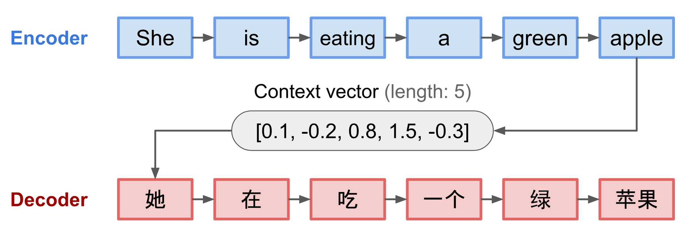
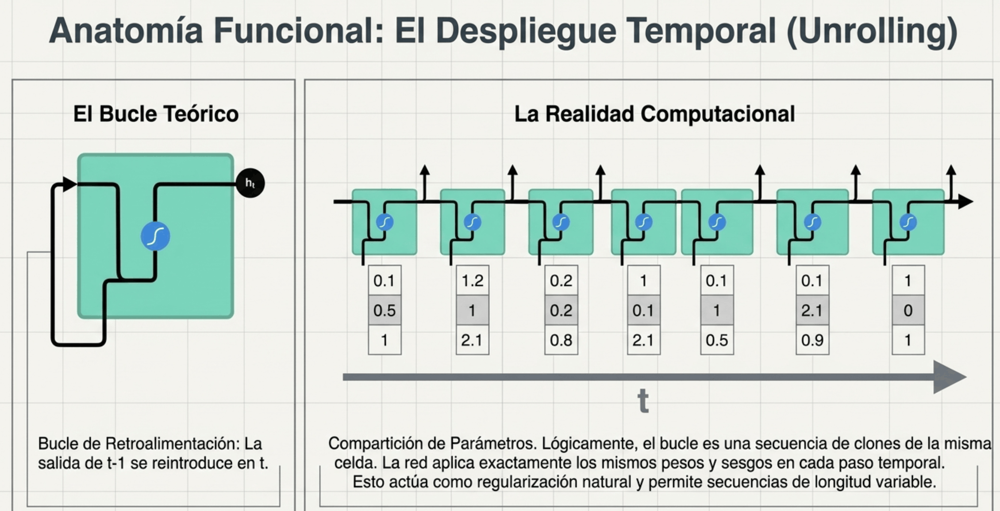
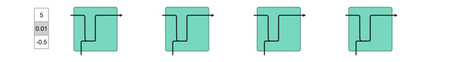
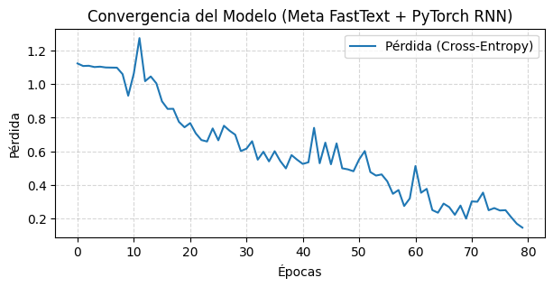
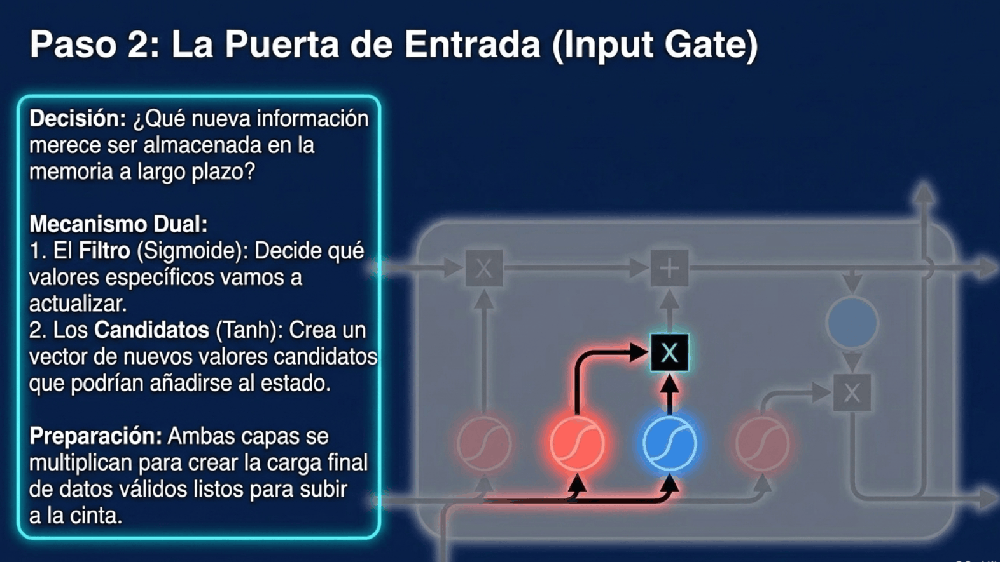

<!DOCTYPE html>

<html lang="es"><head><meta charset="utf-8"/><meta content="width=device-width,initial-scale=1" name="viewport"/><meta content="Portafolio docente de Jacobo León Juárez. Notebooks de NLP y reconocimiento del habla, con teoría, código y visualizaciones." name="description"/><title>06 · Mecanismos de Atención - Parte 1 (v2) · Jacobo León Juárez</title><link href="../assets/site.css" rel="stylesheet"/><link href="../assets/favicon.svg" rel="icon" type="image/svg+xml"/></head><body><a class="skip" href="#contenido">Saltar al contenido</a><div class="progress"></div><button aria-controls="library-nav" aria-expanded="false" id="menu">☰ Índice</button><aside id="library-nav"><a class="brand" href="../index.html">PORTAFOLIO DOCENTE</a><h2>Lenguaje natural<br/><span>y reconocimiento<br/>del habla</span></h2><p class="note">Jacobo León Juárez · 2026</p><a class="search-link" href="../index.html#buscar">⌕ Buscar en el libro</a><nav aria-label="Clases"><details class="chapter"><summary>02 · Word2Vec</summary><a class="" href="clase-02-1-introduccion-al-nlp-parte-1-word2vec.html">02 · Introducción al NLP  - Parte 1 - Word2Vec</a></details><details class="chapter"><summary>03 · GloVe</summary><a class="" href="clase-03-1-introduccion-al-nlp-parte-2-glove.html">03 · Introducción al NLP  - Parte 2 - GloVe</a></details><details class="chapter"><summary>04 · fastText</summary><a class="" href="clase-04-1-introduccion-al-nlp-parte-3-fasttext.html">04 · Introducción al NLP  - Parte 3 - FastText</a></details><details class="chapter"><summary>05 · Redes convolucionales</summary><a class="" href="clase-05-1-2-redes-convolucionales-v2.html">05 · Redes Convolucionales - V2</a><a class="" href="clase-05-1-cnn-teoria-completa.html">05 · CNN - Teoría Completa <small>Complemento</small></a><a class="" href="clase-05-1-1-redes-convolucionales-teoria-simplificada.html">05 · Redes Convolucionales Teoría Simplificada <small>Complemento</small></a><a class="" href="clase-05-1-2-redes-convolucionales-v2-recurso-2.html">05 · Redes Convolucionales - V2 <small>Complemento</small></a><a class="" href="clase-05-2-mecanismos-de-atencion.html">05 · Mecanismos de Atención <small>Complemento</small></a><a class="" href="clase-05-3-vision-por-computadora-cnns.html">05 · Visión Por Computadora - CNNs <small>Complemento</small></a><a class="" href="clase-05-3-1-vision-por-computadora-introduccion.html">05 · Visión Por Computadora - Introducción <small>Complemento</small></a><a class="" href="clase-05-3-2-vision-por-computadora-r-cnns.html">05 · Visión Por Computadora - R-CNNs <small>Complemento</small></a><a class="" href="clase-05-3-3-vision-por-computadora-yolov3.html">05 · Visión por Computadora - YOLOv3 <small>Complemento</small></a><a class="" href="clase-05-4-transformers-y-mecanismos-de-atencion.html">05 · Transformers y Mecanismos de Atención <small>Complemento</small></a><a class="" href="clase-05-4-1-transformers-teoria-simplificada.html">05 · Transformers - Teoría Simplificada <small>Complemento</small></a></details><details class="chapter" open=""><summary>06 · Mecanismos de atención · Parte 1</summary><a aria-current="page" class="active" href="clase-06-6-mecanismos-de-atencion-parte-1-v2.html">06 · Mecanismos de Atención - Parte 1 (v2)</a><a class="" href="clase-06-6-mecanismos-de-atencion-parte-2-v2.html">06 · Mecanismos de Atención - Parte 2 (v2)</a></details><details class="chapter"><summary>07 · Mecanismos de atención · Parte 2</summary><a class="" href="clase-07-6-mecanismos-de-atencion-parte-2-v2.html">07 · Mecanismos de Atención - Parte 2 (v2)</a></details><details class="chapter"><summary>08 · Mecanismos de atención · Parte 3</summary><a class="" href="clase-08-6-mecanismos-de-atencion-parte-3-v2.html">08 · Mecanismos de Atención - Parte 3 (v2)</a></details><details class="chapter"><summary>09 · Mecanismos de atención · Parte 4</summary><a class="" href="clase-09-6-mecanismos-de-atencion-parte-4-v2.html">09 · Mecanismos de Atención - Parte 4 (v2)</a><a class="" href="clase-09-6-1-transformers-teoria-simplificada.html">09 · Transformers - Teoría Simplificada</a></details><details class="chapter"><summary>10 · Introducción a Transformers · Parte 1</summary><a class="" href="clase-10-10-transformers-teoria-simplificada.html">10 · Transformers - Teoría Simplificada</a></details><details class="chapter"><summary>11 · Introducción a Transformers · Parte 2</summary><a class="" href="clase-11-clase-12-transformers-teoria-simplificada.html">11 · Transformers - Teoría Simplificada</a></details><details class="chapter"><summary>12 · GPT y codificación posicional · Parte 1</summary><a class="" href="clase-12-11-positional-encoding-pe-y-gpt-parte-1.html">12 · Positional Encoding (PE) y GPT - Parte 1</a></details><details class="chapter"><summary>13 · GPT y RoPE · Parte 2</summary><a class="" href="clase-13-13-introduccion-a-gpt-rope-parte-2.html">13 · Introducción a GPT - RoPE - Parte 2</a></details><details class="chapter"><summary>14 · Introducción a ASR · Parte 1</summary><a class="" href="clase-14-14-inotroduccion-a-asr-parte-1.html">14 · Introducción a ASR - Parte 1</a><a class="" href="clase-14-attentioncnn-ser-01.html">14 · Reconocimiento de emociones · AttentionCNN <small>Complemento</small></a><a class="" href="clase-14-1-2-speaker-diarization-test.html">14 · Diarización de hablantes · Prueba <small>Complemento</small></a></details><details class="chapter"><summary>15 · Introducción a ASR · Parte 2</summary><a class="" href="clase-15-15-introduccion-a-asr-parte-2.html">15 · Introducción a ASR - Parte 2</a></details><details class="chapter"><summary>16 · FFT Radix-2</summary><a class="" href="clase-16-16-radix-2.html">16 · Radix-2</a></details><details class="chapter" data-whisper=""><summary>17 · Whisper</summary><a href="clase-17-whisper-datasets-entrenamiento-inferencia.html">17 · Whisper: datasets, entrenamiento e inferencia</a></details></nav><div class="aside-links"><a href="https://github.com/leonCTFHTB/NLP-ASR-ML-DL-2026">GitHub ↗</a><a href="https://www.linkedin.com/in/lic-jacobo-leon-juarez/">LinkedIn ↗</a><a href="https://app.notion.com/p/leon-ctf/Portafolio-4034120b17c880048026ec0abf21f685">Notion ↗</a></div></aside><main id="contenido"><header class="hero"><div class="eyebrow">Procesamiento del Lenguaje Natural y Reconocimiento del Habla · Clase 06</div><h1>06 · Mecanismos de Atención - Parte 1 (v2)</h1><p class="note">Contenido convertido sin ejecutar Python. Se conservan las salidas guardadas; las figuras matemáticas sustituidas y los gráficos de PE están identificados en el registro de revisión.</p><div class="toolbar"><button id="expand">Mostrar código</button><button id="collapse">Plegar código</button><button id="print">Imprimir / PDF</button><a download="" href="clase-06-6-mecanismos-de-atencion-parte-1-v2.html" title="Requiere los recursos del repositorio para visualizarse sin conexión.">Descargar página HTML</a></div><details class="page-toc"><summary>En esta página</summary><a href="#seccion-0">Referencias</a><a href="#seccion-1">6. Mecanismos de Atención y Arquitectura Transformer</a><a href="#seccion-2">6.1. El Cuello de Botella de Información</a><a href="#seccion-3">6.2. El Colapso de la Memoria en Secuencias Largas</a><a href="#seccion-4">6.3. Redes Neuronales Recurrentes (RNN)</a><a href="#seccion-5">6.3.1. El Bucle de Retroalimentación y el Despliegue</a><a href="#seccion-6">6.3.2. Compartición de Parámetros (Parameter Sharing)</a><a href="#seccion-7">6.3.3. El Estado Oculto ( h t ): Significado y Geometría</a><a href="#seccion-12">6.3.4. Implementación con PyTorch</a><a href="#seccion-32">6.4. La Evolución hacia LSTMs y GRUs: El Estado de Celda</a><a href="#seccion-33">6.4.1. Compuerta de Olvido (Forget Gate)</a><a href="#seccion-34">6.4.2. Compuerta de Entrada (Input Gate)</a><a href="#seccion-35">6.4.3. Estado de la Celda (Cell State)</a><a href="#seccion-36">6.4.4. Compuerta de Salida (Output Gate)</a><a href="#seccion-37">6.4.5. Implementación en PyTorch</a></details></header><section class="cell" data-cell="0" id="celda-1"><h1 id="seccion-0"><span class="tone-accent"><strong>Referencias</strong></span></h1>
<ol>
<li>
<p><a href="https://drive.google.com/file/d/1fxbhCJ6f9nTZXvzaqboVLrMFQE1AlXZv/view?usp=share_link">Tesis de Grado</a></p>
</li>
<li>
<p><a href="https://d2l.ai/">Deep Learning Book</a></p>
</li>
</ol>
</section><section class="cell" data-cell="6" id="celda-7"><h1 id="seccion-1"><span class="tone-accent"><strong>6. Mecanismos de Atención y Arquitectura Transformer</strong></span></h1>
</section><section class="cell" data-cell="7" id="celda-8"><p>Para comprender por qué los mecanismos de atención revolucionaron el campo de la Inteligencia Artificial, primero debemos analizar la limitación fundamental que vino a resolver.</p>
<p>Antes de 2015, <span class="tone-emphasis"><strong>los sistemas de traducción automática y procesamiento de secuencias dependían de la arquitectura Seq2Seq estándar (Encoder-Decoder) basada en redes neuronales recurrentes</strong> (como <strong>LSTM</strong> o <strong>GRU</strong>).</span></p>
<pre><code class="language-Markdown">Secuencia de Entrada ──&gt; [ ENCODER (RNN) ] ──&gt; [ Vector de Contexto ] ──&gt; [ DECODER (RNN) ] ──&gt; Secuencia de Salida
                                               (Longitud Fija: e.g., 512)
</code></pre>
</section><section class="cell" data-cell="8" id="celda-9"><figure></figure></section><section class="cell" data-cell="9" id="celda-10"><h2 id="seccion-2"><span class="tone-emphasis"><strong>6.1. El Cuello de Botella de Información</strong></span></h2>
<p>En este diseño tradicional:</p>
<ol>
<li>
<p>El <span class="tone-emphasis"><strong>Encoder</strong></span> lee la <span class="tone-emphasis"><strong>secuencia de entrada palabra por palabra</strong></span>, actualizando su <span class="tone-emphasis"><strong>estado oculto interno <math aria-label="h_t" display="inline" xmlns="http://www.w3.org/1998/Math/MathML"><mrow><msub><mi>h</mi><mi>t</mi></msub></mrow></math> paso a paso.</strong></span></p>
</li>
<li>
<p>Al terminar la secuencia, el <span class="tone-emphasis"><strong>último estado oculto del Encoder se extrae como un Vector de Contexto</strong></span> (también llamado informalmente <em>"thought vector"</em> o <span class="tone-emphasis"><strong>"vector de pensamiento"</strong></span>). Este vector es de <span class="tone-emphasis"><strong>longitud fija</strong></span> (por ejemplo, un vector de dimensión <code>512</code>).</p>
</li>
<li>
<p>El <span class="tone-emphasis"><strong>Decoder</strong></span> se <span class="tone-emphasis"><strong>inicializa con este único vector y se le encomienda la colosal tarea de reconstruir e inferir toda la traducción o respuesta de salida</strong></span></p>
</li>
</ol>
</section><section class="cell" data-cell="10" id="celda-11"><figure></figure></section><section class="cell" data-cell="11" data-reviewed-source="https://www.bioinf.jku.at/publications/older/2604.pdf" id="celda-12"><h2 id="seccion-3"><span class="tone-emphasis"><strong>6.2. El Colapso de la Memoria en Secuencias Largas</strong></span></h2><p>Un resumen de dimensión fija puede dificultar el manejo de secuencias largas. No existe un umbral universal de palabras a partir del cual se pierda la información. La retención depende de parámetros, entrenamiento y datos; las dependencias recurrentes también pueden dificultar la optimización.</p>
<p class="note source-reference">Referencia: <a href="https://www.bioinf.jku.at/publications/older/2604.pdf">Hochreiter y Schmidhuber · LSTM</a></p></section><section class="cell" data-cell="12" id="celda-13"><h2 id="seccion-4"><strong>6.3. Redes Neuronales Recurrentes (RNN)</strong></h2>
<p>A diferencia de las redes <span class="tone-emphasis"><strong>feed-forward tradicionales, que no mantienen ningún estado interno y procesan cada entrada de manera aislada, las RNNs están diseñadas para procesar secuencias de datos</strong></span>. Su principio fundamental es la <span class="tone-emphasis"><strong>persistencia de la información:</strong></span> los humanos no reiniciamos nuestro pensamiento con cada palabra que leemos, sino que <span class="tone-emphasis"><strong>comprendemos cada palabra basándonos en el contexto anterior</strong>.</span></p>
</section><section class="cell" data-cell="13" id="celda-14"><figure></figure></section><section class="cell" data-cell="14" id="celda-15"><h3 id="seccion-5"><strong>6.3.1. El Bucle de Retroalimentación y el Despliegue</strong></h3>
<p>Una RNN introduce <span class="tone-emphasis"><strong>bucles en su arquitectura</strong></span>, lo que <span class="tone-emphasis"><strong>permite que la información circule a través de un ciclo en su capa oculta intermedia:</strong></span></p>
</section><section class="cell" data-cell="15" id="celda-16"><ul>
<li><span class="tone-context"><strong>El bucle lógico:</strong></span> La <span class="tone-emphasis"><strong>salida de una capa oculta</strong></span> en el paso de <span class="tone-emphasis"><strong>tiempo <math aria-label="t-1" display="inline" xmlns="http://www.w3.org/1998/Math/MathML"><mrow><mi>t</mi><mo>−</mo><mn>1</mn></mrow></math></strong></span> se reintroduce como <span class="tone-emphasis"><strong>parte de la entrada</strong></span> en el paso de <span class="tone-emphasis"><strong>tiempo <math aria-label="t" display="inline" xmlns="http://www.w3.org/1998/Math/MathML"><mrow><mi>t</mi></mrow></math></strong>.</span></li>
</ul>
</section><section class="cell" data-cell="16" id="celda-17"><figure></figure></section><section class="cell" data-cell="17" id="celda-18"><ul>
<li><span class="tone-context"><strong>El desplegado temporal (Unrolling):</strong></span> Lógicamente, un bucle de RNN <span class="tone-emphasis"><strong>equivale a realizar múltiples copias de la misma red neuronal de manera secuencial</strong></span>, donde cada copia <span class="tone-emphasis"><strong>transmite un mensaje a su sucesora.</strong></span></li>
</ul>
</section><section class="cell" data-cell="18" id="celda-19"><figure></figure></section><section class="cell" data-cell="19" data-reviewed-source="https://www.bioinf.jku.at/publications/older/2604.pdf" id="celda-20"><h3 id="seccion-6"><span class="tone-accent"><strong>6.3.2. Compartición de Parámetros (Parameter Sharing)</strong></span></h3><p>Una RNN reutiliza los mismos parámetros en todos los pasos. El número de parámetros no crece con la longitud; el trabajo y las activaciones de entrenamiento sí dependen de ella. Compartir pesos favorece aplicar la misma regla temporal, pero no garantiza generalizar a longitudes nuevas.</p>
<p class="note source-reference">Referencia: <a href="https://www.bioinf.jku.at/publications/older/2604.pdf">Hochreiter y Schmidhuber · LSTM</a></p></section><section class="cell" data-cell="20" id="celda-21"><figure></figure></section><section class="cell" data-cell="21" id="celda-22"><div class="output"></div></section><section class="cell" data-cell="22" id="celda-23"><h3 id="seccion-7"><span class="tone-accent"><strong>6.3.3. El Estado Oculto (<math aria-label="h_t" display="inline" xmlns="http://www.w3.org/1998/Math/MathML"><mrow><msub><mi>h</mi><mi>t</mi></msub></mrow></math>): Significado y Geometría</strong></span></h3>
<blockquote>
<p>En una <span class="tone-accent"><strong>RNN</strong></span>, para cada elemento de la secuencia en el paso <math aria-label="t" display="inline" xmlns="http://www.w3.org/1998/Math/MathML"><mrow><mi>t</mi></mrow></math>, existe un <span class="tone-accent"><strong>estado oculto (hidden state) <math aria-label="h_t" display="inline" xmlns="http://www.w3.org/1998/Math/MathML"><mrow><msub><mi>h</mi><mi>t</mi></msub></mrow></math></strong>.</span></p>
</blockquote>
</section><section class="cell" data-cell="23" id="celda-24"><h4 id="seccion-8"><span class="tone-emphasis"><strong>6.3.3.1. Formulación Matemática</strong></span></h4>
<p>En una RNN estándar (Elman RNN), el <span class="tone-emphasis"><strong>estado oculto <math aria-label="h_t" display="inline" xmlns="http://www.w3.org/1998/Math/MathML"><mrow><msub><mi>h</mi><mi>t</mi></msub></mrow></math> se actualiza en cada paso de tiempo mediante la siguiente ecuación</strong>:</span></p>
<p><math aria-label="h_t = \tanh(W_{hh} h_{t-1} + W_{xh} x_t + b_h)" display="block" xmlns="http://www.w3.org/1998/Math/MathML"><mrow><msub><mi>h</mi><mi>t</mi></msub><mo>=</mo><mi>tanh</mi><mo stretchy="false">(</mo><msub><mi>W</mi><mrow><mi>h</mi><mi>h</mi></mrow></msub><msub><mi>h</mi><mrow><mi>t</mi><mo>−</mo><mn>1</mn></mrow></msub><mo>+</mo><msub><mi>W</mi><mrow><mi>x</mi><mi>h</mi></mrow></msub><msub><mi>x</mi><mi>t</mi></msub><mo>+</mo><msub><mi>b</mi><mi>h</mi></msub><mo stretchy="false">)</mo></mrow></math></p>
<p>Donde:</p>
<ul>
<li>
<p><math aria-label="x_t \in \mathbb{R}^{d_{in}}" display="inline" xmlns="http://www.w3.org/1998/Math/MathML"><mrow><msub><mi>x</mi><mi>t</mi></msub><mo>∈</mo><msup><mi>ℝ</mi><mrow><msub><mi>d</mi><mrow><mi>i</mi><mi>n</mi></mrow></msub></mrow></msup></mrow></math> es el <span class="tone-emphasis"><strong>vector de entrada en el paso <math aria-label="t" display="inline" xmlns="http://www.w3.org/1998/Math/MathML"><mrow><mi>t</mi></mrow></math></strong></span> (por ejemplo, el embedding de la palabra actual).</p>
</li>
<li>
<p><math aria-label="h_{t-1} \in \mathbb{R}^{d_{hid}}" display="inline" xmlns="http://www.w3.org/1998/Math/MathML"><mrow><msub><mi>h</mi><mrow><mi>t</mi><mo>−</mo><mn>1</mn></mrow></msub><mo>∈</mo><msup><mi>ℝ</mi><mrow><msub><mi>d</mi><mrow><mi>h</mi><mi>i</mi><mi>d</mi></mrow></msub></mrow></msup></mrow></math> es el <span class="tone-emphasis"><strong>estado oculto del paso anterior.</strong></span></p>
</li>
<li>
<p><math aria-label="W_{hh} \in \mathbb{R}^{d_{hid} \times d_{hid}}" display="inline" xmlns="http://www.w3.org/1998/Math/MathML"><mrow><msub><mi>W</mi><mrow><mi>h</mi><mi>h</mi></mrow></msub><mo>∈</mo><msup><mi>ℝ</mi><mrow><msub><mi>d</mi><mrow><mi>h</mi><mi>i</mi><mi>d</mi></mrow></msub><mo>×</mo><msub><mi>d</mi><mrow><mi>h</mi><mi>i</mi><mi>d</mi></mrow></msub></mrow></msup></mrow></math> es la <span class="tone-emphasis"><strong>matriz de pesos de transición de estado a estado.</strong></span></p>
</li>
<li>
<p><math aria-label="W_{xh} \in \mathbb{R}^{d_{hid} \times d_{in}}" display="inline" xmlns="http://www.w3.org/1998/Math/MathML"><mrow><msub><mi>W</mi><mrow><mi>x</mi><mi>h</mi></mrow></msub><mo>∈</mo><msup><mi>ℝ</mi><mrow><msub><mi>d</mi><mrow><mi>h</mi><mi>i</mi><mi>d</mi></mrow></msub><mo>×</mo><msub><mi>d</mi><mrow><mi>i</mi><mi>n</mi></mrow></msub></mrow></msup></mrow></math> es la <span class="tone-emphasis"><strong>matriz de pesos de la entrada al estado.</strong></span></p>
</li>
<li>
<p><math aria-label="b_h \in \mathbb{R}^{d_{hid}}" display="inline" xmlns="http://www.w3.org/1998/Math/MathML"><mrow><msub><mi>b</mi><mi>h</mi></msub><mo>∈</mo><msup><mi>ℝ</mi><mrow><msub><mi>d</mi><mrow><mi>h</mi><mi>i</mi><mi>d</mi></mrow></msub></mrow></msup></mrow></math> es el <span class="tone-emphasis"><strong>vector de sesgo.</strong></span></p>
</li>
<li>
<p><math aria-label="\tanh(x)" display="inline" xmlns="http://www.w3.org/1998/Math/MathML"><mrow><mi>tanh</mi><mo stretchy="false">(</mo><mi>x</mi><mo stretchy="false">)</mo></mrow></math> es la <span class="tone-emphasis"><strong>función de activación no lineal que acota los valores del estado entre <math aria-label="-1" display="inline" xmlns="http://www.w3.org/1998/Math/MathML"><mrow><mo>−</mo><mn>1</mn></mrow></math> y <math aria-label="1" display="inline" xmlns="http://www.w3.org/1998/Math/MathML"><mrow><mn>1</mn></mrow></math>.</strong></span></p>
</li>
</ul>
<hr/>
</section><section class="cell" data-cell="24" id="celda-25"><figure></figure></section><section class="cell" data-cell="25" id="celda-26"><p>Ahora, veremos como se calcula el estado oculto en una RNN:</p>
<ul>
<li>
<p>Primero, <span class="tone-emphasis"><strong>la entrada y el estado oculto previo se combinan para formar un vector.</strong></span></p>
</li>
<li>
<p>Ese vector ahora tiene <span class="tone-emphasis"><strong>información sobre la entrada actual y las entradas anteriores.</strong></span></p>
</li>
<li>
<p>El vector pasa a través de la <span class="tone-emphasis"><strong>activación tangente hiperbólica (tanh), y la salida es el nuevo estado oculto, o la memoria de la red.</strong></span></p>
</li>
</ul>
</section><section class="cell" data-cell="26" id="celda-27"><div class="output"></div></section><section class="cell" data-cell="27" data-reviewed-source="https://www.bioinf.jku.at/publications/older/2604.pdf" id="celda-28"><h4 id="seccion-9"><span class="tone-emphasis"><strong>6.3.3.2. ¿Qué representa semánticamente el estado oculto?</strong></span></h4><p>El estado oculto es una representación aprendida de dimensión fija que depende del prefijo procesado. Puede conservar información útil, pero no contiene necesariamente toda la historia ni tiene coordenadas con una interpretación lingüística prefijada. Un ejemplo de significado es una intuición, no una lectura exacta del vector.</p>
<p class="note source-reference">Referencia: <a href="https://www.bioinf.jku.at/publications/older/2604.pdf">Hochreiter y Schmidhuber · LSTM</a></p></section><section class="cell" data-cell="28" id="celda-29"><figure></figure></section><section class="cell" data-cell="29" id="celda-30"><p>Durante el procesamiento, <span class="tone-emphasis"><strong>se pasa el estado oculto anterior al siguiente paso de la secuencia. El estado oculto actúa como memoria de la red neuronal. Contiene información sobre datos anteriores que la red ha visto antes.</strong></span></p>
</section><section class="cell" data-cell="30" id="celda-31"><div class="output"></div></section><section class="cell" data-cell="31" id="celda-32"><h4 id="seccion-10"><span class="tone-emphasis"><strong>6.3.3.3. El Regulador de Memoria: La Función <math aria-label="tanh" display="inline" xmlns="http://www.w3.org/1998/Math/MathML"><mrow><mi>t</mi><mi>a</mi><mi>n</mi><mi>h</mi></mrow></math></strong></span></h4>
</section><section class="cell" data-cell="32" id="celda-33"><blockquote>
<p>La activación tangente hiperbólica (tanh) <span class="tone-accent"><strong>se utiliza para ayudar a regular los valores que fluyen a través de la red.</strong></span> La función tangente hiperbólica <span class="tone-accent"><strong>comprime los valores para que siempre estén entre -1 y 1.</strong></span></p>
</blockquote>
</section><section class="cell" data-cell="33" id="celda-34"><figure></figure></section><section class="cell" data-cell="34" id="celda-35"><p>Esta regularización, se puede observar claramente con el siguiente ejemplo:</p>
</section><section class="cell" data-cell="35" id="celda-36"><div class="output"></div></section><section class="cell" data-cell="36" data-reviewed-source="https://www.bioinf.jku.at/publications/older/2604.pdf" id="celda-37"><p>En una recurrencia lineal, algunas dinámicas pueden crecer si se multiplican repetidamente por una transformación expansiva. <code>tanh</code> acota las activaciones, pero no garantiza controlar el gradiente de toda la red. Este depende de productos de matrices y derivadas.</p>
<p class="note source-reference">Referencia: <a href="https://www.bioinf.jku.at/publications/older/2604.pdf">Hochreiter y Schmidhuber · LSTM</a></p></section><section class="cell" data-cell="37" id="celda-38"><div class="output"></div></section><section class="cell" data-cell="38" id="celda-39"><p>La función tangente hiperbólica <span class="tone-emphasis"><strong>asegura que los valores se mantengan entre -1 y 1, regulando así la salida de la red neuronal.</strong></span> Podemos ver cómo los mismos valores de arriba <span class="tone-emphasis"><strong>permanecen entre los límites permitidos por la función tangente hiperbólica.</strong></span></p>
</section><section class="cell" data-cell="39" id="celda-40"><div class="output"></div></section><section class="cell" data-cell="40" id="celda-41"><h4 id="seccion-11"><strong>6.3.3.4. El Límite de la Memoria a Corto Plazo</strong></h4>
<p>En las RNNs tradicionales, al <span class="tone-emphasis"><strong>propagar los gradientes hacia atrás en el tiempo (BPTT), la multiplicación sucesiva de la matriz <math aria-label="W_{hh}" display="inline" xmlns="http://www.w3.org/1998/Math/MathML"><mrow><msub><mi>W</mi><mrow><mi>h</mi><mi>h</mi></mrow></msub></mrow></math></strong></span> provoca que los <span class="tone-emphasis"><strong>gradientes se desvanezcan o exploten</strong></span>. Esto <span class="tone-emphasis"><strong>impide que la red recuerde dependencias de largo alcance:</strong></span></p>
</section><section class="cell" data-cell="41" id="celda-42"><figure></figure></section><section class="cell" data-cell="42" id="celda-43"><h3 id="seccion-12"><span class="tone-accent"><strong>6.3.4. Implementación con PyTorch</strong></span></h3>
</section><section class="cell" data-cell="43" id="celda-44"><h4 id="seccion-13"><span class="tone-emphasis"><strong>Celda 1: Importación de librerías y configuración</strong></span></h4>
<p>Configura el entorno de trabajo, define la semilla de reproducibilidad y selecciona el dispositivo de cómputo (CPU o GPU).</p>
</section><section class="cell" data-cell="44" id="celda-45"><details class="source-code"><summary>Código Python · celda 45</summary><button class="copy-code" type="button">Copiar código</button><div class="highlight"><pre><span class="err">!</span><span class="n">pip</span> <span class="n">install</span> <span class="o">-</span><span class="n">q</span> <span class="n">fasttext</span><span class="o">-</span><span class="n">wheel</span>
</pre></div>
</details><div class="output"><pre>[?25l   ━━━━━━━━━━━━━━━━━━━━━━━━━━━━━━━━━━━━━━━━ 0.0/4.6 MB ? eta -:--:--
   ━━━━━╸━━━━━━━━━━━━━━━━━━━━━━━━━━━━━━━━━━ 0.7/4.6 MB 20.7 MB/s eta 0:00:01
   ━━━━━━━━━━━━━━━━━━━━━━╺━━━━━━━━━━━━━━━━━ 2.5/4.6 MB 49.9 MB/s eta 0:00:01
   ━━━━━━━━━━━━━━━━━━━━━━━━━━━━━━━━━━━━━━━╸ 4.6/4.6 MB 38.6 MB/s eta 0:00:01
   ━━━━━━━━━━━━━━━━━━━━━━━━━━━━━━━━━━━━━━━━ 4.6/4.6 MB 28.1 MB/s eta 0:00:00
[?25h[?25l   ━━━━━━━━━━━━━━━━━━━━━━━━━━━━━━━━━━━━━━━━ 0.0/319.4 kB ? eta -:--:--
   ━━━━━━━━━━━━━━━━━━━━━━━━━━━━━━━━━━━━━━━━ 319.4/319.4 kB 15.9 MB/s eta 0:00:00
[?25h</pre></div></section><section class="cell" data-cell="45" id="celda-46"><details class="source-code"><summary>Código Python · celda 46</summary><button class="copy-code" type="button">Copiar código</button><div class="highlight"><pre><span class="kn">import</span><span class="w"> </span><span class="nn">re</span>
<span class="kn">import</span><span class="w"> </span><span class="nn">fasttext</span>
<span class="kn">import</span><span class="w"> </span><span class="nn">numpy</span><span class="w"> </span><span class="k">as</span><span class="w"> </span><span class="nn">np</span>
<span class="kn">import</span><span class="w"> </span><span class="nn">matplotlib.pyplot</span><span class="w"> </span><span class="k">as</span><span class="w"> </span><span class="nn">plt</span>
<span class="kn">import</span><span class="w"> </span><span class="nn">torch</span>
<span class="kn">import</span><span class="w"> </span><span class="nn">torch.nn</span><span class="w"> </span><span class="k">as</span><span class="w"> </span><span class="nn">nn</span>
<span class="kn">from</span><span class="w"> </span><span class="nn">torch.utils.data</span><span class="w"> </span><span class="kn">import</span> <span class="n">Dataset</span><span class="p">,</span> <span class="n">DataLoader</span>

<span class="c1"># Configuración de reproducibilidad</span>
<span class="n">torch</span><span class="o">.</span><span class="n">manual_seed</span><span class="p">(</span><span class="mi">42</span><span class="p">)</span>
<span class="n">np</span><span class="o">.</span><span class="n">random</span><span class="o">.</span><span class="n">seed</span><span class="p">(</span><span class="mi">42</span><span class="p">)</span>

<span class="c1"># Configuración de aceleración por hardware</span>
<span class="n">device</span> <span class="o">=</span> <span class="n">torch</span><span class="o">.</span><span class="n">device</span><span class="p">(</span><span class="s2">"cuda"</span> <span class="k">if</span> <span class="n">torch</span><span class="o">.</span><span class="n">cuda</span><span class="o">.</span><span class="n">is_available</span><span class="p">()</span> <span class="k">else</span> <span class="s2">"cpu"</span><span class="p">)</span>
<span class="nb">print</span><span class="p">(</span><span class="sa">f</span><span class="s2">"Librerías cargadas. Dispositivo: </span><span class="si">{</span><span class="n">device</span><span class="si">}</span><span class="s2">"</span><span class="p">)</span>
</pre></div>
</details><div class="output"><pre>Librerías cargadas. Dispositivo: cpu
</pre></div></section><section class="cell" data-cell="46" id="celda-47"><hr/>
<h4 id="seccion-14"><span class="tone-emphasis"><strong>Celda 2: Preparación del archivo de texto y entrenamiento de FastText (Meta)</strong></span></h4>
<p>El motor en C++ de FastText <span class="tone-emphasis"><strong>procesa directamente archivos de texto plano línea por línea</strong></span>. Creamos el <span class="tone-emphasis"><strong>archivo de entrenamiento <code>train_corpus.txt</code> y entrenamos un modelo de subpalabras no supervisado con Skip-gram</strong>.</span></p>
<blockquote>
<p><span class="tone-accent"><strong>fasttext.train_unsupervised compila el diccionario de palabras y la tabla hash de subpalabras</strong></span> (<math aria-label="n" display="inline" xmlns="http://www.w3.org/1998/Math/MathML"><mrow><mi>n</mi></mrow></math>-gramas de caracteres definidos entre <code>minn</code> y <code>maxn</code>). <span class="tone-accent"><strong>Cualquier palabra desconocida que consulte get_word_vector() construirá su vector sumando los vectores de sus subfragmentos.</strong></span></p>
</blockquote>
</section><section class="cell" data-cell="47" id="celda-48"><details class="source-code"><summary>Código Python · celda 48</summary><button class="copy-code" type="button">Copiar código</button><div class="highlight"><pre><span class="c1"># Dataset de entrenamiento clasificado por idioma</span>
<span class="n">corpus_data</span> <span class="o">=</span> <span class="p">{</span>
    <span class="s2">"Spanish"</span><span class="p">:</span> <span class="p">[</span>
        <span class="s2">"hola como estas mi querido amigo"</span><span class="p">,</span>
        <span class="s2">"el perro corre en el parque verde"</span><span class="p">,</span>
        <span class="s2">"la casa grande tiene ventanas abiertas"</span><span class="p">,</span>
        <span class="s2">"vamos a comer comida deliciosa hoy"</span><span class="p">,</span>
        <span class="s2">"la musica suena muy bien en la fiesta"</span><span class="p">,</span>
        <span class="s2">"el tiempo vuela cuando estamos juntos"</span><span class="p">,</span>
        <span class="s2">"el sol brilla fuerte en la playa"</span><span class="p">,</span>
        <span class="s2">"el trabajo en la ciudad es agotador"</span>
    <span class="p">],</span>
    <span class="s2">"English"</span><span class="p">:</span> <span class="p">[</span>
        <span class="s2">"hello how are you my dear friend"</span><span class="p">,</span>
        <span class="s2">"the dog runs in the green park"</span><span class="p">,</span>
        <span class="s2">"the big house has open windows"</span><span class="p">,</span>
        <span class="s2">"we are going to eat delicious food today"</span><span class="p">,</span>
        <span class="s2">"the music sounds great at the party"</span><span class="p">,</span>
        <span class="s2">"time flies when we are together"</span><span class="p">,</span>
        <span class="s2">"the sun shines bright on the beach"</span><span class="p">,</span>
        <span class="s2">"working in the city is very tiring"</span>
    <span class="p">],</span>
    <span class="s2">"German"</span><span class="p">:</span> <span class="p">[</span>
        <span class="s2">"hallo wie geht es dir mein freund"</span><span class="p">,</span>
        <span class="s2">"der hund laeuft in dem gruenen park"</span><span class="p">,</span>
        <span class="s2">"das grosse haus hat offene fenster"</span><span class="p">,</span>
        <span class="s2">"wir werden heute leckeres essen geniessen"</span><span class="p">,</span>
        <span class="s2">"die musik klingt toll auf der feier"</span><span class="p">,</span>
        <span class="s2">"die zeit vergeht schnell wenn wir zusammen sind"</span><span class="p">,</span>
        <span class="s2">"die sonne scheint hell am strand"</span><span class="p">,</span>
        <span class="s2">"die arbeit in der stadt ist sehr anstrengend"</span>
    <span class="p">]</span>
<span class="p">}</span>

<span class="c1"># 1. Escritura del corpus en un archivo de texto plano para la API de Meta</span>
<span class="n">corpus_filename</span> <span class="o">=</span> <span class="s2">"train_corpus.txt"</span>
<span class="k">with</span> <span class="nb">open</span><span class="p">(</span><span class="n">corpus_filename</span><span class="p">,</span> <span class="s2">"w"</span><span class="p">,</span> <span class="n">encoding</span><span class="o">=</span><span class="s2">"utf-8"</span><span class="p">)</span> <span class="k">as</span> <span class="n">f</span><span class="p">:</span>
    <span class="k">for</span> <span class="n">sentences</span> <span class="ow">in</span> <span class="n">corpus_data</span><span class="o">.</span><span class="n">values</span><span class="p">():</span>
        <span class="k">for</span> <span class="n">sentence</span> <span class="ow">in</span> <span class="n">sentences</span><span class="p">:</span>
            <span class="n">f</span><span class="o">.</span><span class="n">write</span><span class="p">(</span><span class="n">sentence</span><span class="o">.</span><span class="n">lower</span><span class="p">()</span> <span class="o">+</span> <span class="s2">"</span><span class="se">\n</span><span class="s2">"</span><span class="p">)</span>

<span class="c1"># 2. Entrenamiento del modelo oficial de FastText</span>
<span class="n">embedding_dim</span> <span class="o">=</span> <span class="mi">32</span>
<span class="n">ft_model</span> <span class="o">=</span> <span class="n">fasttext</span><span class="o">.</span><span class="n">train_unsupervised</span><span class="p">(</span>
    <span class="nb">input</span><span class="o">=</span><span class="n">corpus_filename</span><span class="p">,</span>
    <span class="n">model</span><span class="o">=</span><span class="s2">"skipgram"</span><span class="p">,</span>
    <span class="n">dim</span><span class="o">=</span><span class="n">embedding_dim</span><span class="p">,</span>
    <span class="n">minn</span><span class="o">=</span><span class="mi">2</span><span class="p">,</span>          <span class="c1"># Tamaño mínimo de n-gramas de caracteres</span>
    <span class="n">maxn</span><span class="o">=</span><span class="mi">4</span><span class="p">,</span>          <span class="c1"># Tamaño máximo de n-gramas de caracteres</span>
    <span class="n">epoch</span><span class="o">=</span><span class="mi">100</span><span class="p">,</span>
    <span class="n">lr</span><span class="o">=</span><span class="mf">0.1</span><span class="p">,</span>
    <span class="n">thread</span><span class="o">=</span><span class="mi">2</span>
<span class="p">)</span>

<span class="c1"># 3. Mapeo de categorías a identificadores numéricos</span>
<span class="n">categories</span> <span class="o">=</span> <span class="nb">list</span><span class="p">(</span><span class="n">corpus_data</span><span class="o">.</span><span class="n">keys</span><span class="p">())</span>
<span class="n">category_to_idx</span> <span class="o">=</span> <span class="p">{</span><span class="n">cat</span><span class="p">:</span> <span class="n">idx</span> <span class="k">for</span> <span class="n">idx</span><span class="p">,</span> <span class="n">cat</span> <span class="ow">in</span> <span class="nb">enumerate</span><span class="p">(</span><span class="n">categories</span><span class="p">)}</span>
<span class="n">idx_to_category</span> <span class="o">=</span> <span class="p">{</span><span class="n">idx</span><span class="p">:</span> <span class="n">cat</span> <span class="k">for</span> <span class="n">cat</span><span class="p">,</span> <span class="n">idx</span> <span class="ow">in</span> <span class="n">category_to_idx</span><span class="o">.</span><span class="n">items</span><span class="p">()}</span>

<span class="c1"># Prueba de inferencia de subpalabras (palabra fuera de vocabulario)</span>
<span class="n">oov_vector</span> <span class="o">=</span> <span class="n">ft_model</span><span class="o">.</span><span class="n">get_word_vector</span><span class="p">(</span><span class="s2">"amiguito"</span><span class="p">)</span>
<span class="nb">print</span><span class="p">(</span><span class="sa">f</span><span class="s2">"Modelo FastText entrenado."</span><span class="p">)</span>
<span class="nb">print</span><span class="p">(</span><span class="sa">f</span><span class="s2">"Forma del vector generado para 'amiguito' (OOV): </span><span class="si">{</span><span class="n">oov_vector</span><span class="o">.</span><span class="n">shape</span><span class="si">}</span><span class="s2">"</span><span class="p">)</span>
</pre></div>
</details><div class="output"><pre>Modelo FastText entrenado.
Forma del vector generado para 'amiguito' (OOV): (32,)
</pre></div></section><section class="cell" data-cell="48" id="celda-49"><ol>
<li>
<p><span class="tone-context"><strong>Escritura del corpus a disco (<code>train_corpus.txt</code>)</strong></span></p>
<ul>
<li>
<p>La librería oficial de Meta está escrita en <strong>C++</strong> puro por motivos de rendimiento. <span class="tone-emphasis"><strong>Su motor no recibe listas de Python en memoria RAM, sino que lee directamente flujos de texto desde un archivo plano</strong></span> (<code>.txt</code>) mediante hilos de ejecución concurrentes (<code>thread=2</code>).</p>
</li>
<li>
<p><span class="tone-emphasis"><strong>Cada línea del archivo representa una secuencia de entrenamiento separada por saltos de línea <code>\n</code></strong></span> y normalizada a minúsculas.</p>
</li>
</ul>
</li>
</ol>
<pre><code class="language-python"># 1. Escritura del corpus en un archivo de texto plano para la API de Meta
corpus_filename = "train_corpus.txt"
with open(corpus_filename, "w", encoding="utf-8") as f:
    for sentences in corpus_data.values():
        for sentence in sentences:
            f.write(sentence.lower() + "\n")

</code></pre>
</section><section class="cell" data-cell="49" data-reviewed-source="https://github.com/facebookresearch/fastText/tree/main/src" id="celda-50"><h5 id="seccion-15"><span class="tone-accent"><strong>1. El Mecanismo Interno de Subpalabras (<math aria-label="n" display="inline" xmlns="http://www.w3.org/1998/Math/MathML"><mrow><mi>n</mi></mrow></math>-gramas de caracteres)</strong></span></h5><p>Para «amigo», los bigramas delimitados incluyen <code>&lt;a</code>, <code>am</code>, <code>mi</code>, <code>ig</code>, <code>go</code>, <code>o&gt;</code>; los trigramas incluyen <code>&lt;am</code>, <code>ami</code>, <code>mig</code>, <code>igo</code>, <code>go&gt;</code>. Son fragmentos de caracteres, no morfemas garantizados. <code>get_word_vector</code> de fastText oficial <strong>promedia</strong> las entradas correspondientes a la palabra conocida y sus subpalabras; una palabra OOV usa sus subpalabras.</p>
<p class="note source-reference">Referencia: <a href="https://github.com/facebookresearch/fastText/tree/main/src">fastText · Implementación oficial</a></p></section><section class="cell" data-cell="50" id="celda-51"><h5 id="seccion-16"><span class="tone-accent"><strong>2. Hiperparámetros de entrenamiento</strong></span></h5>
<ul>
<li>
<p><span class="tone-context"><strong><code>model="skipgram"</code></strong>:</span> Configura el <span class="tone-emphasis"><strong>objetivo de predecir las palabras del contexto a partir de la palabra central</strong></span> (ideal para corpus pequeños).</p>
</li>
<li>
<p><span class="tone-context"><strong><code>dim=32</code></strong>:</span> Tamaño del vector de salida. <span class="tone-emphasis"><strong>Cada palabra se proyecta a un espacio continuo de <math aria-label="32" display="inline" xmlns="http://www.w3.org/1998/Math/MathML"><mrow><mn>32</mn></mrow></math> dimensiones.</strong></span></p>
</li>
<li>
<p><span class="tone-context"><strong><code>minn=2, maxn=4</code></strong>:</span> Rango de <span class="tone-emphasis"><strong>longitud de los fragmentos de caracteres. Permite capturar prefijos, sufijos y raíces comunes en idiomas flexivos</strong></span> (como terminaciones en <code>-ción</code>, <code>-ing</code>, <code>-heit</code>).</p>
</li>
</ul>
<pre><code class="language-python">    ft_model = fasttext.train_unsupervised(
        input=corpus_filename,
        model="skipgram",
        dim=embedding_dim,
        minn=2,          # Tamaño mínimo de n-gramas de caracteres
        maxn=4,          # Tamaño máximo de n-gramas de caracteres
        epoch=100,
        lr=0.1,
        thread=2
    )
</code></pre>
<hr/>
</section><section class="cell" data-cell="51" id="celda-52"><hr/>
<h4 id="seccion-17"><span class="tone-emphasis"><strong>Celda 3: Construcción del PyTorch Dataset con <code>ft_model.get_word_vector</code></strong></span></h4>
<blockquote>
<p><span class="tone-accent"><strong>Tokeniza las oraciones y extrae directamente los vectores densos calculados por el motor de <code>FastText</code>, aplicando <code>zero-padding</code> para homogeneizar la longitud temporal de las secuencias.</strong></span></p>
</blockquote>
</section><section class="cell" data-cell="52" id="celda-53"><details class="source-code"><summary>Código Python · celda 53</summary><button class="copy-code" type="button">Copiar código</button><div class="highlight"><pre><span class="k">def</span><span class="w"> </span><span class="nf">simple_tokenize</span><span class="p">(</span><span class="n">text</span><span class="p">):</span>
<span class="w">    </span><span class="sd">"""</span>
<span class="sd">    Limpia y divide una cadena de texto en una lista de palabras en minúsculas.</span>

<span class="sd">    Parámetros:</span>
<span class="sd">    -----------</span>
<span class="sd">    text : str</span>
<span class="sd">        Texto de entrada.</span>

<span class="sd">    Retorna:</span>
<span class="sd">    --------</span>
<span class="sd">    list of str</span>
<span class="sd">        Lista de tokens limpios.</span>
<span class="sd">    """</span>
    <span class="k">return</span> <span class="n">re</span><span class="o">.</span><span class="n">findall</span><span class="p">(</span><span class="sa">r</span><span class="s2">"\b\w+\b"</span><span class="p">,</span> <span class="n">text</span><span class="o">.</span><span class="n">lower</span><span class="p">())</span>


<span class="k">class</span><span class="w"> </span><span class="nc">MetaFastTextDataset</span><span class="p">(</span><span class="n">Dataset</span><span class="p">):</span>
<span class="w">    </span><span class="sd">"""</span>
<span class="sd">    Dataset que transforma oraciones en matrices temporales de tensores continuos</span>
<span class="sd">    utilizando el método get_word_vector de la librería oficial de FastText.</span>

<span class="sd">    Atributos:</span>
<span class="sd">    ----------</span>
<span class="sd">    samples : list of tuple (list of str, int)</span>
<span class="sd">        Pares de (lista_de_tokens, etiqueta_de_idioma).</span>
<span class="sd">    ft_model : fasttext.FastText._FastText</span>
<span class="sd">        Modelo binario entrenado de FastText de Meta.</span>
<span class="sd">    embedding_dim : int</span>
<span class="sd">        Dimensión de cada vector de palabra.</span>
<span class="sd">    max_len : int</span>
<span class="sd">        Longitud máxima de secuencia para aplicar padding.</span>
<span class="sd">    """</span>

    <span class="k">def</span><span class="w"> </span><span class="fm">__init__</span><span class="p">(</span><span class="bp">self</span><span class="p">,</span> <span class="n">data_dict</span><span class="p">,</span> <span class="n">ft_model</span><span class="p">,</span> <span class="n">category_to_idx</span><span class="p">):</span>
<span class="w">        </span><span class="sd">"""</span>
<span class="sd">        Inicializa el dataset procesando las oraciones y extrayendo su longitud máxima.</span>
<span class="sd">        """</span>
        <span class="bp">self</span><span class="o">.</span><span class="n">ft_model</span> <span class="o">=</span> <span class="n">ft_model</span>
        <span class="bp">self</span><span class="o">.</span><span class="n">embedding_dim</span> <span class="o">=</span> <span class="n">ft_model</span><span class="o">.</span><span class="n">get_dimension</span><span class="p">()</span>
        <span class="bp">self</span><span class="o">.</span><span class="n">samples</span> <span class="o">=</span> <span class="p">[]</span>

        <span class="k">for</span> <span class="n">category</span><span class="p">,</span> <span class="n">sentences</span> <span class="ow">in</span> <span class="n">data_dict</span><span class="o">.</span><span class="n">items</span><span class="p">():</span>
            <span class="n">label</span> <span class="o">=</span> <span class="n">category_to_idx</span><span class="p">[</span><span class="n">category</span><span class="p">]</span>
            <span class="k">for</span> <span class="n">sentence</span> <span class="ow">in</span> <span class="n">sentences</span><span class="p">:</span>
                <span class="n">tokens</span> <span class="o">=</span> <span class="n">simple_tokenize</span><span class="p">(</span><span class="n">sentence</span><span class="p">)</span>
                <span class="bp">self</span><span class="o">.</span><span class="n">samples</span><span class="o">.</span><span class="n">append</span><span class="p">((</span><span class="n">tokens</span><span class="p">,</span> <span class="n">label</span><span class="p">))</span>

        <span class="bp">self</span><span class="o">.</span><span class="n">max_len</span> <span class="o">=</span> <span class="nb">max</span><span class="p">(</span><span class="nb">len</span><span class="p">(</span><span class="n">tokens</span><span class="p">)</span> <span class="k">for</span> <span class="n">tokens</span><span class="p">,</span> <span class="n">_</span> <span class="ow">in</span> <span class="bp">self</span><span class="o">.</span><span class="n">samples</span><span class="p">)</span>

    <span class="k">def</span><span class="w"> </span><span class="fm">__len__</span><span class="p">(</span><span class="bp">self</span><span class="p">):</span>
<span class="w">        </span><span class="sd">"""Retorna el número total de oraciones."""</span>
        <span class="k">return</span> <span class="nb">len</span><span class="p">(</span><span class="bp">self</span><span class="o">.</span><span class="n">samples</span><span class="p">)</span>

    <span class="k">def</span><span class="w"> </span><span class="fm">__getitem__</span><span class="p">(</span><span class="bp">self</span><span class="p">,</span> <span class="n">idx</span><span class="p">):</span>
<span class="w">        </span><span class="sd">"""</span>
<span class="sd">        Genera el tensor temporal (seq_len, embedding_dim) con padding de ceros.</span>

<span class="sd">        Retorna:</span>
<span class="sd">        --------</span>
<span class="sd">        tuple (torch.Tensor, torch.Tensor)</span>
<span class="sd">            - sequence_tensor: Matriz de float32 con forma (max_len, embedding_dim).</span>
<span class="sd">            - label_tensor: Escalar con el índice del idioma.</span>
<span class="sd">        """</span>
        <span class="n">tokens</span><span class="p">,</span> <span class="n">label</span> <span class="o">=</span> <span class="bp">self</span><span class="o">.</span><span class="n">samples</span><span class="p">[</span><span class="n">idx</span><span class="p">]</span>

        <span class="c1"># Obtención directa del vector por cada token mediante FastText</span>
        <span class="n">word_vectors</span> <span class="o">=</span> <span class="p">[</span><span class="bp">self</span><span class="o">.</span><span class="n">ft_model</span><span class="o">.</span><span class="n">get_word_vector</span><span class="p">(</span><span class="n">token</span><span class="p">)</span> <span class="k">for</span> <span class="n">token</span> <span class="ow">in</span> <span class="n">tokens</span><span class="p">]</span>

        <span class="c1"># Padding con ceros hasta alcanzar max_len</span>
        <span class="n">pad_size</span> <span class="o">=</span> <span class="bp">self</span><span class="o">.</span><span class="n">max_len</span> <span class="o">-</span> <span class="nb">len</span><span class="p">(</span><span class="n">word_vectors</span><span class="p">)</span>
        <span class="k">for</span> <span class="n">_</span> <span class="ow">in</span> <span class="nb">range</span><span class="p">(</span><span class="n">pad_size</span><span class="p">):</span>
            <span class="n">word_vectors</span><span class="o">.</span><span class="n">append</span><span class="p">(</span><span class="n">np</span><span class="o">.</span><span class="n">zeros</span><span class="p">(</span><span class="bp">self</span><span class="o">.</span><span class="n">embedding_dim</span><span class="p">,</span> <span class="n">dtype</span><span class="o">=</span><span class="n">np</span><span class="o">.</span><span class="n">float32</span><span class="p">))</span>

        <span class="n">sequence_tensor</span> <span class="o">=</span> <span class="n">torch</span><span class="o">.</span><span class="n">tensor</span><span class="p">(</span><span class="n">np</span><span class="o">.</span><span class="n">array</span><span class="p">(</span><span class="n">word_vectors</span><span class="p">),</span> <span class="n">dtype</span><span class="o">=</span><span class="n">torch</span><span class="o">.</span><span class="n">float32</span><span class="p">)</span>
        <span class="n">label_tensor</span> <span class="o">=</span> <span class="n">torch</span><span class="o">.</span><span class="n">tensor</span><span class="p">(</span><span class="n">label</span><span class="p">,</span> <span class="n">dtype</span><span class="o">=</span><span class="n">torch</span><span class="o">.</span><span class="n">long</span><span class="p">)</span>

        <span class="k">return</span> <span class="n">sequence_tensor</span><span class="p">,</span> <span class="n">label_tensor</span>


<span class="c1"># Creación de DataLoader</span>
<span class="n">dataset</span> <span class="o">=</span> <span class="n">MetaFastTextDataset</span><span class="p">(</span><span class="n">corpus_data</span><span class="p">,</span> <span class="n">ft_model</span><span class="p">,</span> <span class="n">category_to_idx</span><span class="p">)</span>
<span class="n">train_loader</span> <span class="o">=</span> <span class="n">DataLoader</span><span class="p">(</span><span class="n">dataset</span><span class="p">,</span> <span class="n">batch_size</span><span class="o">=</span><span class="mi">4</span><span class="p">,</span> <span class="n">shuffle</span><span class="o">=</span><span class="kc">True</span><span class="p">)</span>

<span class="n">sample_x</span><span class="p">,</span> <span class="n">sample_y</span> <span class="o">=</span> <span class="n">dataset</span><span class="p">[</span><span class="mi">0</span><span class="p">]</span>
<span class="nb">print</span><span class="p">(</span><span class="sa">f</span><span class="s2">"Dimensiones de entrada por oración: </span><span class="si">{</span><span class="n">sample_x</span><span class="o">.</span><span class="n">shape</span><span class="si">}</span><span class="s2"> (pasos temporales, dimensión FastText)"</span><span class="p">)</span>
<span class="nb">print</span><span class="p">(</span><span class="sa">f</span><span class="s2">"Etiqueta de clase: </span><span class="si">{</span><span class="n">sample_y</span><span class="o">.</span><span class="n">item</span><span class="p">()</span><span class="si">}</span><span class="s2"> -&gt; </span><span class="si">{</span><span class="n">idx_to_category</span><span class="p">[</span><span class="n">sample_y</span><span class="o">.</span><span class="n">item</span><span class="p">()]</span><span class="si">}</span><span class="s2">"</span><span class="p">)</span>
</pre></div>
</details><div class="output"><pre>Dimensiones de entrada por oración: torch.Size([8, 32]) (pasos temporales, dimensión FastText)
Etiqueta de clase: 0 -&gt; Spanish
</pre></div></section><section class="cell" data-cell="53" id="celda-54"><p>Esta celda <span class="tone-emphasis"><strong>transforma las cadenas de texto en tensores numéricos rectangulares con las dimensiones exactas que exige una red recurrente en PyTorch.</strong></span></p>
<pre><code class="language-python">Texto crudo: "el perro corre"
      ↓ (simple_tokenize)
Tokens: ['el', 'perro', 'corre']
      ↓ (ft_model.get_word_vector)
Matriz de vectores: [ (32,), (32,), (32,) ]  -&gt; Forma: (3, 32)
      ↓ (Zero-Padding hasta max_len=6)
Tensor de entrada:  [ (32,), (32,), (32,), (0..0), (0..0), (0..0) ] -&gt; Forma: (6, 32)

</code></pre>
</section><section class="cell" data-cell="54" id="celda-55"><h5 id="seccion-18"><span class="tone-accent"><strong>1. Anatomía de <code>MetaFastTextDataset</code></strong></span></h5>
<p>Hereda de <code>torch.utils.data.Dataset</code> implementando el contrato estándar de PyTorch:</p>
<ul>
<li>
<p><span class="tone-context"><strong><code>__init__</code></strong>:</span> <span class="tone-emphasis"> <strong>Escanea todas las oraciones del corpus, calcula <code>max_len</code></strong></span> (la cantidad máxima de palabras que tiene la oración más larga del dataset) <span class="tone-emphasis"> <strong>y guarda las referencias a las etiquetas.</strong></span></p>
</li>
<li>
<p><span class="tone-context"><strong><code>__len__</code></strong>:</span> Informa a PyTorch <span class="tone-emphasis"> <strong>cuántas muestras existen en total.</strong></span></p>
</li>
<li>
<p><span class="tone-context"><strong><code>__getitem__(idx)</code></strong>:</span> <span class="tone-emphasis"> <strong>Se ejecuta dinámicamente cada vez que el modelo solicita una muestra.</strong></span></p>
</li>
</ul>
<hr/>
</section><section class="cell" data-cell="55" data-reviewed-source="https://github.com/facebookresearch/fastText/tree/main/src" id="celda-56"><h5 id="seccion-19"><span class="tone-accent"><strong>2. Vectorización token a token</strong></span></h5><p>Una palabra nueva se representa combinando los buckets de sus fragmentos. Es posible calcular el vector aunque no exista una fila de palabra completa, pero no se garantiza que sea lingüísticamente coherente. Los fragmentos pueden compartir buckets por hashing.</p>
<p class="note source-reference">Referencia: <a href="https://github.com/facebookresearch/fastText/tree/main/src">fastText · Implementación oficial</a></p></section><section class="cell" data-cell="56" id="celda-57"><h5 id="seccion-20"><span class="tone-accent"><strong>3. Necesidad del Zero-Padding</strong></span></h5>
<p>Las oraciones del lenguaje natural tienen diferentes longitudes (una tiene 4 palabras, otra 7). <span class="tone-emphasis"><strong>Las GPUs procesan datos en bloques matriciales homogéneos</strong></span> (<em>batches</em>). Para agruparlas:</p>
<ul>
<li>
<p>Se <span class="tone-emphasis"><strong>determina la longitud máxima de referencia <code>max_len</code>.</strong></span></p>
</li>
<li>
<p>A las<span class="tone-emphasis"><strong>oraciones más cortas se les añaden vectores de ceros (<code>np.zeros(embedding_dim)</code>) al final hasta igualar <code>max_len</code>.</strong></span></p>
</li>
</ul>
<pre><code class="language-python"># Padding con ceros hasta alcanzar max_len
        pad_size = self.max_len - len(word_vectors)
        for _ in range(pad_size):
            word_vectors.append(np.zeros(self.embedding_dim, dtype=np.float32))

        sequence_tensor = torch.tensor(np.array(word_vectors), dtype=torch.float32)
        label_tensor = torch.tensor(label, dtype=torch.long)
</code></pre>
</section><section class="cell" data-cell="57" id="celda-58"><h5 id="seccion-21"><span class="tone-accent"><strong>Dimensionalidad final del lote (<em>Batch Tensor</em>)</strong></span></h5>
<p>Cuando el <span class="tone-emphasis"> <strong><code>DataLoader(batch_size=4)</code> agrupa las muestras individuales, PyTorch ensambla un tensor 3D:</strong></span></p>
<p><strong><math aria-label="\text{Forma del Tensor: } (B, L, D)" display="block" xmlns="http://www.w3.org/1998/Math/MathML"><mrow><mtext>Forma del Tensor: </mtext><mo stretchy="false">(</mo><mi>B</mi><mo>,</mo><mi>L</mi><mo>,</mo><mi>D</mi><mo stretchy="false">)</mo></mrow></math></strong></p>
<ul>
<li>
<p><span class="tone-context"><strong><math aria-label="B" display="inline" xmlns="http://www.w3.org/1998/Math/MathML"><mrow><mi>B</mi></mrow></math> (<code>batch_size</code> = <math aria-label="4" display="inline" xmlns="http://www.w3.org/1998/Math/MathML"><mrow><mn>4</mn></mrow></math>)</strong>: </span>Cantidad de oraciones procesadas en paralelo.</p>
</li>
<li>
<p><span class="tone-context"><strong><math aria-label="L" display="inline" xmlns="http://www.w3.org/1998/Math/MathML"><mrow><mi>L</mi></mrow></math> (<code>seq_len</code> = <code>max_len</code>)</strong>:</span> Cantidad de pasos temporales consecutivos (palabras) que recorrerá la RNN.</p>
</li>
<li>
<p><span class="tone-context"><strong><math aria-label="D" display="inline" xmlns="http://www.w3.org/1998/Math/MathML"><mrow><mi>D</mi></mrow></math> (<code>embedding_dim</code> = <math aria-label="32" display="inline" xmlns="http://www.w3.org/1998/Math/MathML"><mrow><mn>32</mn></mrow></math>)</strong>:</span> Cantidad de características numéricas que describen a cada palabra en cada instante de tiempo <math aria-label="t" display="inline" xmlns="http://www.w3.org/1998/Math/MathML"><mrow><mi>t</mi></mrow></math>.</p>
</li>
</ul>
</section><section class="cell" data-cell="58" id="celda-59"><h4 id="seccion-22"><span class="tone-emphasis"><strong>Celda 4: Arquitectura del modelo recurrente (RNN)</strong></span></h4>
<p>Define la <span class="tone-emphasis"><strong>red recurrente que procesa los vectores densos de FastText paso a paso. Toma el estado oculto del último paso temporal (<math aria-label="h_T" display="inline" xmlns="http://www.w3.org/1998/Math/MathML"><mrow><msub><mi>h</mi><mi>T</mi></msub></mrow></math>) para alimentar la capa de clasificación lineal.</strong></span></p>
</section><section class="cell" data-cell="59" id="celda-60"><details class="source-code"><summary>Código Python · celda 60</summary><button class="copy-code" type="button">Copiar código</button><div class="highlight"><pre><span class="k">class</span><span class="w"> </span><span class="nc">SequenceRNN</span><span class="p">(</span><span class="n">nn</span><span class="o">.</span><span class="n">Module</span><span class="p">):</span>
<span class="w">    </span><span class="sd">"""</span>
<span class="sd">    Clasificador secuencial Many-to-One que procesa vectores continuos de palabras.</span>

<span class="sd">    Atributos:</span>
<span class="sd">    ----------</span>
<span class="sd">    rnn : nn.RNN</span>
<span class="sd">        Capa recurrente principal con propagación de estado oculto.</span>
<span class="sd">    fc : nn.Linear</span>
<span class="sd">        Capa densa que proyecta la memoria final a logits de clase.</span>
<span class="sd">    """</span>

    <span class="k">def</span><span class="w"> </span><span class="fm">__init__</span><span class="p">(</span><span class="bp">self</span><span class="p">,</span> <span class="n">input_size</span><span class="p">,</span> <span class="n">hidden_size</span><span class="p">,</span> <span class="n">output_size</span><span class="p">):</span>
<span class="w">        </span><span class="sd">"""</span>
<span class="sd">        Inicializa las capas de la red.</span>

<span class="sd">        Parámetros:</span>
<span class="sd">        -----------</span>
<span class="sd">        input_size : int</span>
<span class="sd">            Dimensión del vector de FastText (dim).</span>
<span class="sd">        hidden_size : int</span>
<span class="sd">            Dimensión del vector de memoria interna (h_t).</span>
<span class="sd">        output_size : int</span>
<span class="sd">            Cantidad de clases a clasificar.</span>
<span class="sd">        """</span>
        <span class="nb">super</span><span class="p">(</span><span class="n">SequenceRNN</span><span class="p">,</span> <span class="bp">self</span><span class="p">)</span><span class="o">.</span><span class="fm">__init__</span><span class="p">()</span>
        <span class="bp">self</span><span class="o">.</span><span class="n">hidden_size</span> <span class="o">=</span> <span class="n">hidden_size</span>

        <span class="c1"># batch_first=True -&gt; x tiene forma: (batch_size, seq_len, input_size)</span>
        <span class="bp">self</span><span class="o">.</span><span class="n">rnn</span> <span class="o">=</span> <span class="n">nn</span><span class="o">.</span><span class="n">RNN</span><span class="p">(</span>
            <span class="n">input_size</span><span class="o">=</span><span class="n">input_size</span><span class="p">,</span>
            <span class="n">hidden_size</span><span class="o">=</span><span class="n">hidden_size</span><span class="p">,</span>
            <span class="n">batch_first</span><span class="o">=</span><span class="kc">True</span>
        <span class="p">)</span>

        <span class="c1"># Capa de proyección final</span>
        <span class="bp">self</span><span class="o">.</span><span class="n">fc</span> <span class="o">=</span> <span class="n">nn</span><span class="o">.</span><span class="n">Linear</span><span class="p">(</span><span class="n">hidden_size</span><span class="p">,</span> <span class="n">output_size</span><span class="p">)</span>

    <span class="k">def</span><span class="w"> </span><span class="nf">forward</span><span class="p">(</span><span class="bp">self</span><span class="p">,</span> <span class="n">x</span><span class="p">):</span>
<span class="w">        </span><span class="sd">"""</span>
<span class="sd">        Propagación hacia adelante de la red.</span>

<span class="sd">        Parámetros:</span>
<span class="sd">        -----------</span>
<span class="sd">        x : torch.Tensor</span>
<span class="sd">            Tensor con forma (batch_size, seq_len, input_size).</span>

<span class="sd">        Retorna:</span>
<span class="sd">        --------</span>
<span class="sd">        torch.Tensor</span>
<span class="sd">            Logits de salida con forma (batch_size, output_size).</span>
<span class="sd">        """</span>
        <span class="n">batch_size</span> <span class="o">=</span> <span class="n">x</span><span class="o">.</span><span class="n">size</span><span class="p">(</span><span class="mi">0</span><span class="p">)</span>

        <span class="c1"># Inicialización del vector de memoria h_0 en ceros</span>
        <span class="n">h_0</span> <span class="o">=</span> <span class="n">torch</span><span class="o">.</span><span class="n">zeros</span><span class="p">(</span><span class="mi">1</span><span class="p">,</span> <span class="n">batch_size</span><span class="p">,</span> <span class="bp">self</span><span class="o">.</span><span class="n">hidden_size</span><span class="p">)</span><span class="o">.</span><span class="n">to</span><span class="p">(</span><span class="n">x</span><span class="o">.</span><span class="n">device</span><span class="p">)</span>

        <span class="c1"># Propagación a lo largo de la dimensión temporal</span>
        <span class="n">rnn_out</span><span class="p">,</span> <span class="n">h_n</span> <span class="o">=</span> <span class="bp">self</span><span class="o">.</span><span class="n">rnn</span><span class="p">(</span><span class="n">x</span><span class="p">,</span> <span class="n">h_0</span><span class="p">)</span>

        <span class="c1"># Extraemos el último estado oculto temporal (h_T)</span>
        <span class="n">final_hidden_state</span> <span class="o">=</span> <span class="n">h_n</span><span class="o">.</span><span class="n">squeeze</span><span class="p">(</span><span class="mi">0</span><span class="p">)</span>  <span class="c1"># Forma: (batch_size, hidden_size)</span>

        <span class="c1"># Cálculo de los logits de salida</span>
        <span class="n">logits</span> <span class="o">=</span> <span class="bp">self</span><span class="o">.</span><span class="n">fc</span><span class="p">(</span><span class="n">final_hidden_state</span><span class="p">)</span>  <span class="c1"># Forma: (batch_size, output_size)</span>

        <span class="k">return</span> <span class="n">logits</span>


<span class="c1"># Instanciación del clasificador</span>
<span class="n">hidden_size</span> <span class="o">=</span> <span class="mi">24</span>
<span class="n">num_classes</span> <span class="o">=</span> <span class="nb">len</span><span class="p">(</span><span class="n">categories</span><span class="p">)</span>

<span class="n">model</span> <span class="o">=</span> <span class="n">SequenceRNN</span><span class="p">(</span>
    <span class="n">input_size</span><span class="o">=</span><span class="n">embedding_dim</span><span class="p">,</span>
    <span class="n">hidden_size</span><span class="o">=</span><span class="n">hidden_size</span><span class="p">,</span>
    <span class="n">output_size</span><span class="o">=</span><span class="n">num_classes</span>
<span class="p">)</span><span class="o">.</span><span class="n">to</span><span class="p">(</span><span class="n">device</span><span class="p">)</span>

<span class="nb">print</span><span class="p">(</span><span class="n">model</span><span class="p">)</span>
</pre></div>
</details><div class="output"><pre>SequenceRNN(
  (rnn): RNN(32, 24, batch_first=True)
  (fc): Linear(in_features=24, out_features=3, bias=True)
)
</pre></div></section><section class="cell" data-cell="60" id="celda-61"><blockquote>
<p>Esta celda define una arquitectura recurrente de tipo <span class="tone-accent"><strong>Many-to-One</strong> <strong>(muchas entradas en el tiempo, una única salida de clasificación).</strong></span> Su objetivo es <span class="tone-accent"><strong>procesar las palabras en orden cronológico, acumular el contexto lingüístico en un vector de memoria interna y generar probabilidades para cada idioma</strong>.</span></p>
</blockquote>
<pre><code class="language-markdown">       x_1              x_2                      x_T
   (Palabra 1)      (Palabra 2)              (Palabra T)
        │                │                        │
        ▼                ▼                        ▼
h_0 ──►┌────┐   h_1   ──►┌────┐   h_2          ──►┌────┐   h_T       ┌────────┐
(0)   │ RNN ├─────────►│ RNN ├─────── ... ───►│ RNN ├───────────►│ Linear ├──► Logits (3)
       └────┘            └────┘                   └────┘             └────────┘

---
</code></pre>
</section><section class="cell" data-cell="61" id="celda-62"><h5 id="seccion-23"><span class="tone-accent"><strong>1. Parámetros del constructor (<code>__init__</code>)</strong></span></h5>
<ul>
<li>
<p><span class="tone-context"><strong><code>input_size=32</code></strong>:</span> <span class="tone-emphasis"><strong>Dimensión del vector FastText</strong></span> que entra a la red en cada paso de tiempo.</p>
</li>
<li>
<p><span class="tone-context"><strong><code>hidden_size=24</code></strong></span>: Número de <span class="tone-emphasis"><strong>neuronas en la capa recurrente</strong></span> (capacidad del vector de memoria <math aria-label="h_t" display="inline" xmlns="http://www.w3.org/1998/Math/MathML"><mrow><msub><mi>h</mi><mi>t</mi></msub></mrow></math>).</p>
</li>
<li>
<p><span class="tone-context"><strong><code>batch_first=True</code></strong></span>: Configuración indispensable para <span class="tone-emphasis"><strong>trabajar con tensores de forma <code>(batch_size, seq_len, input_size)</code>. Si fuera <code>False</code>, PyTorch exigiría <code>(seq_len, batch_size, input_size)</code>.</strong></span></p>
</li>
<li>
<p><span class="tone-context"><strong><code>self.fc = nn.Linear(hidden_size, output_size)</code></strong>:</span> <span class="tone-emphasis"><strong>Capa densa que mapea el vector resumen de <math aria-label="24" display="inline" xmlns="http://www.w3.org/1998/Math/MathML"><mrow><mn>24</mn></mrow></math> dimensiones a los <math aria-label="3" display="inline" xmlns="http://www.w3.org/1998/Math/MathML"><mrow><mn>3</mn></mrow></math> puntajes</strong></span> (<em>logits</em>) correspondientes a Español, Inglés y Alemán.</p>
</li>
</ul>
<pre><code class="language-python">        super(SequenceRNN, self).__init__()
        self.hidden_size = hidden_size

        # batch_first=True -&gt; x tiene forma: (batch_size, seq_len, input_size)
        self.rnn = nn.RNN(
            input_size=input_size,
            hidden_size=hidden_size,
            batch_first=True
        )

        # Capa de proyección final
        self.fc = nn.Linear(hidden_size, output_size)
</code></pre>
<hr/>
</section><section class="cell" data-cell="62" id="celda-63"><h5 id="seccion-24"><span class="tone-accent"><strong>2. Flujo en el paso hacia adelante (<code>forward</code>)</strong></span></h5>
<ul>
<li>
<p><span class="tone-context"><strong>Inicialización de <math aria-label="h_0" display="inline" xmlns="http://www.w3.org/1998/Math/MathML"><mrow><msub><mi>h</mi><mn>0</mn></msub></mrow></math>:</strong></span> Se crea un tensor de ceros con forma <span class="tone-emphasis"><strong><code>(1, batch_size, hidden_size)</code></strong>. El <code>1</code> <strong>representa el número de capas recurrentes apiladas</strong> (<code>num_layers=1</code>). <strong>Representa una memoria en blanco antes de comenzar a leer la oración</strong>.</span></p>
</li>
<li>
<p><span class="tone-context"><strong>Salidas de <code>self.rnn(x, h_0)</code>:</strong></span></p>
<ul>
<li>
<p><strong><code>rnn_out</code></strong>: Tensor con forma <span class="tone-emphasis"><strong><code>(batch_size, seq_len, hidden_size)</code> que almacena la historia completa de estados ocultos</strong></span> <math aria-label="[h_1, h_2, \dots, h_T]" display="inline" xmlns="http://www.w3.org/1998/Math/MathML"><mrow><mo stretchy="false">[</mo><msub><mi>h</mi><mn>1</mn></msub><mo>,</mo><msub><mi>h</mi><mn>2</mn></msub><mo>,</mo><mo>…</mo><mo>,</mo><msub><mi>h</mi><mi>T</mi></msub><mo stretchy="false">]</mo></mrow></math>.</p>
</li>
<li>
<p><span class="tone-context"><strong><code>h_n</code></strong></span>: Tensor con forma <strong><code>(1, batch_size, hidden_size)</code></strong> que <span class="tone-emphasis"><strong>contiene exclusivamente el último estado oculto <math aria-label="h_T" display="inline" xmlns="http://www.w3.org/1998/Math/MathML"><mrow><msub><mi>h</mi><mi>T</mi></msub></mrow></math> al finalizar la secuencia.</strong></span></p>
</li>
</ul>
</li>
</ul>
<blockquote>
<p><strong>Extracción de <math aria-label="h_T" display="inline" xmlns="http://www.w3.org/1998/Math/MathML"><mrow><msub><mi>h</mi><mi>T</mi></msub></mrow></math> y proyección:</strong> Mediante <code>h_n.squeeze(0)</code> <span class="tone-accent"><strong>eliminamos la dimensión de la capa para obtener una matriz</strong></span> <code>(batch_size, 24)</code>. Esta matriz <span class="tone-accent"><strong>encapsula toda la semántica y sintaxis de la frase leída, y se introduce en <code>self.fc</code> para obtener los <em>logits</em> finales sin normalizar.</strong> </span></p>
</blockquote>
<pre><code class="language-python">def forward(self, x):
    """
    Propagación hacia adelante de la red.

    Parámetros:
    -----------
    x : torch.Tensor
        Tensor con forma (batch_size, seq_len, input_size).

    Retorna:
    --------
    torch.Tensor
        Logits de salida con forma (batch_size, output_size).
    """
    batch_size = x.size(0)

    # Inicialización del vector de memoria h_0 en ceros
    h_0 = torch.zeros(1, batch_size, self.hidden_size).to(x.device)

    # Propagación a lo largo de la dimensión temporal
    rnn_out, h_n = self.rnn(x, h_0)

    # Extraemos el último estado oculto temporal (h_T)
    final_hidden_state = h_n.squeeze(0)  # Forma: (batch_size, hidden_size)

    # Cálculo de los logits de salida
    logits = self.fc(final_hidden_state)  # Forma: (batch_size, output_size)

    return logits
</code></pre>
<hr/>
</section><section class="cell" data-cell="63" id="celda-64"><h4 id="seccion-25"><span class="tone-emphasis"><strong>Celda 5: Entrenamiento del clasificador con PyTorch</strong></span></h4>
<blockquote>
<p><span class="tone-accent"><strong>Entrena el clasificador sobre los lotes de embeddings generados por FastText utilizando el optimizador <code>Adam</code> y la función de pérdida de entropía cruzada.</strong></span></p>
</blockquote>
</section><section class="cell" data-cell="64" id="celda-65"><details class="source-code"><summary>Código Python · celda 65</summary><button class="copy-code" type="button">Copiar código</button><div class="highlight"><pre><span class="c1"># Hiperparámetros de optimización</span>
<span class="n">epochs</span> <span class="o">=</span> <span class="mi">80</span>
<span class="n">learning_rate</span> <span class="o">=</span> <span class="mf">0.008</span>

<span class="n">criterion</span> <span class="o">=</span> <span class="n">nn</span><span class="o">.</span><span class="n">CrossEntropyLoss</span><span class="p">()</span>
<span class="n">optimizer</span> <span class="o">=</span> <span class="n">torch</span><span class="o">.</span><span class="n">optim</span><span class="o">.</span><span class="n">Adam</span><span class="p">(</span><span class="n">model</span><span class="o">.</span><span class="n">parameters</span><span class="p">(),</span> <span class="n">lr</span><span class="o">=</span><span class="n">learning_rate</span><span class="p">)</span>

<span class="n">loss_history</span> <span class="o">=</span> <span class="p">[]</span>

<span class="k">for</span> <span class="n">epoch</span> <span class="ow">in</span> <span class="nb">range</span><span class="p">(</span><span class="mi">1</span><span class="p">,</span> <span class="n">epochs</span> <span class="o">+</span> <span class="mi">1</span><span class="p">):</span>
    <span class="n">model</span><span class="o">.</span><span class="n">train</span><span class="p">()</span>
    <span class="n">running_loss</span> <span class="o">=</span> <span class="mf">0.0</span>

    <span class="k">for</span> <span class="n">batch_x</span><span class="p">,</span> <span class="n">batch_y</span> <span class="ow">in</span> <span class="n">train_loader</span><span class="p">:</span>
        <span class="n">batch_x</span> <span class="o">=</span> <span class="n">batch_x</span><span class="o">.</span><span class="n">to</span><span class="p">(</span><span class="n">device</span><span class="p">)</span>
        <span class="n">batch_y</span> <span class="o">=</span> <span class="n">batch_y</span><span class="o">.</span><span class="n">to</span><span class="p">(</span><span class="n">device</span><span class="p">)</span>

        <span class="c1"># 1. Reset de gradientes</span>
        <span class="n">optimizer</span><span class="o">.</span><span class="n">zero_grad</span><span class="p">()</span>

        <span class="c1"># 2. Forward pass</span>
        <span class="n">predictions</span> <span class="o">=</span> <span class="n">model</span><span class="p">(</span><span class="n">batch_x</span><span class="p">)</span>

        <span class="c1"># 3. Cálculo del error</span>
        <span class="n">loss</span> <span class="o">=</span> <span class="n">criterion</span><span class="p">(</span><span class="n">predictions</span><span class="p">,</span> <span class="n">batch_y</span><span class="p">)</span>

        <span class="c1"># 4. Retropropagación del gradiente (BPTT)</span>
        <span class="n">loss</span><span class="o">.</span><span class="n">backward</span><span class="p">()</span>

        <span class="c1"># 5. Actualización de parámetros</span>
        <span class="n">optimizer</span><span class="o">.</span><span class="n">step</span><span class="p">()</span>

        <span class="n">running_loss</span> <span class="o">+=</span> <span class="n">loss</span><span class="o">.</span><span class="n">item</span><span class="p">()</span>

    <span class="n">epoch_loss</span> <span class="o">=</span> <span class="n">running_loss</span> <span class="o">/</span> <span class="nb">len</span><span class="p">(</span><span class="n">train_loader</span><span class="p">)</span>
    <span class="n">loss_history</span><span class="o">.</span><span class="n">append</span><span class="p">(</span><span class="n">epoch_loss</span><span class="p">)</span>

    <span class="k">if</span> <span class="n">epoch</span> <span class="o">%</span> <span class="mi">10</span> <span class="o">==</span> <span class="mi">0</span> <span class="ow">or</span> <span class="n">epoch</span> <span class="o">==</span> <span class="mi">1</span><span class="p">:</span>
        <span class="nb">print</span><span class="p">(</span><span class="sa">f</span><span class="s2">"Época [</span><span class="si">{</span><span class="n">epoch</span><span class="si">:</span><span class="s2">02d</span><span class="si">}</span><span class="s2">/</span><span class="si">{</span><span class="n">epochs</span><span class="si">:</span><span class="s2">02d</span><span class="si">}</span><span class="s2">] | Pérdida de Entrenamiento: </span><span class="si">{</span><span class="n">epoch_loss</span><span class="si">:</span><span class="s2">.4f</span><span class="si">}</span><span class="s2">"</span><span class="p">)</span>

<span class="c1"># Visualización de la curva de aprendizaje</span>
<span class="n">plt</span><span class="o">.</span><span class="n">figure</span><span class="p">(</span><span class="n">figsize</span><span class="o">=</span><span class="p">(</span><span class="mi">7</span><span class="p">,</span> <span class="mi">3</span><span class="p">))</span>
<span class="n">plt</span><span class="o">.</span><span class="n">plot</span><span class="p">(</span><span class="n">loss_history</span><span class="p">,</span> <span class="n">color</span><span class="o">=</span><span class="s2">"tab:blue"</span><span class="p">,</span> <span class="n">label</span><span class="o">=</span><span class="s2">"Pérdida (Cross-Entropy)"</span><span class="p">)</span>
<span class="n">plt</span><span class="o">.</span><span class="n">title</span><span class="p">(</span><span class="s2">"Convergencia del Modelo (Meta FastText + PyTorch RNN)"</span><span class="p">)</span>
<span class="n">plt</span><span class="o">.</span><span class="n">xlabel</span><span class="p">(</span><span class="s2">"Épocas"</span><span class="p">)</span>
<span class="n">plt</span><span class="o">.</span><span class="n">ylabel</span><span class="p">(</span><span class="s2">"Pérdida"</span><span class="p">)</span>
<span class="n">plt</span><span class="o">.</span><span class="n">grid</span><span class="p">(</span><span class="kc">True</span><span class="p">,</span> <span class="n">linestyle</span><span class="o">=</span><span class="s2">"--"</span><span class="p">,</span> <span class="n">alpha</span><span class="o">=</span><span class="mf">0.5</span><span class="p">)</span>
<span class="n">plt</span><span class="o">.</span><span class="n">legend</span><span class="p">()</span>
<span class="n">plt</span><span class="o">.</span><span class="n">show</span><span class="p">()</span>
</pre></div>
</details><div class="output"><pre>Época [01/80] | Pérdida de Entrenamiento: 1.1235
Época [10/80] | Pérdida de Entrenamiento: 0.9312
Época [20/80] | Pérdida de Entrenamiento: 0.7429
Época [30/80] | Pérdida de Entrenamiento: 0.6010
Época [40/80] | Pérdida de Entrenamiento: 0.5493
Época [50/80] | Pérdida de Entrenamiento: 0.4808
Época [60/80] | Pérdida de Entrenamiento: 0.3187
Época [70/80] | Pérdida de Entrenamiento: 0.1984
Época [80/80] | Pérdida de Entrenamiento: 0.1446
</pre></div></section><section class="cell" data-cell="65" id="celda-66"><p>Dentro del bucle de entrenamiento se ejecutan secuencialmente:</p>
<ol>
<li>
<p><span class="tone-context"><strong><code>optimizer.zero_grad()</code>:</strong></span>
Por defecto, PyTorch <strong>acumula</strong> (suma) los gradientes en cada llamada a <code>.backward()</code>. Es obligatorio reiniciar los gradientes a cero al inicio de cada lote para que el gradiente actual no se mezcle con el del lote anterior.</p>
</li>
<li>
<p><span class="tone-context"><strong><code>predictions = model(batch_x)</code>:</strong></span>
Ejecuta el <code>forward pass</code>. La red procesa las secuencias en paralelo y genera una matriz de predicciones de forma <strong><code>(batch_size, 3)</code></strong>.</p>
</li>
<li>
<p><span class="tone-context"><strong><code>loss = criterion(predictions, batch_y)</code></strong>:</span>
Compara los <em>logits</em> calculados contra las etiquetas reales <strong><code>batch_y</code> (enteros <code>0, 1, 2</code>)</strong> y calcula un valor escalar de error medio para el lote.</p>
</li>
<li>
<p><span class="tone-context"><strong><code>loss.backward()</code> (<strong>Backpropagation Through Time - BPTT</strong>)</strong>:</span>
PyTorch desenrolla el grafo de computación a lo largo de todos los pasos temporales (<math aria-label="t = T, T-1, \dots, 1" display="inline" xmlns="http://www.w3.org/1998/Math/MathML"><mrow><mi>t</mi><mo>=</mo><mi>T</mi><mo>,</mo><mi>T</mi><mo>−</mo><mn>1</mn><mo>,</mo><mo>…</mo><mo>,</mo><mn>1</mn></mrow></math>) y aplica la regla de la cadena para calcular las derivadas parciales de la pérdida respecto a cada matriz de pesos:
<math aria-label="\frac{\partial \mathcal{L}}{\partial W_{hh}} = \sum_{t=1}^{T} \frac{\partial \mathcal{L}}{\partial h_T} \frac{\partial h_T}{\partial h_t} \frac{\partial h_t}{\partial W_{hh}}" display="block" xmlns="http://www.w3.org/1998/Math/MathML"><mrow><mfrac><mrow><mo>∂</mo><mi>ℒ</mi></mrow><mrow><mo>∂</mo><msub><mi>W</mi><mrow><mi>h</mi><mi>h</mi></mrow></msub></mrow></mfrac><mo>=</mo><munderover><mo>∑</mo><mrow><mi>t</mi><mo>=</mo><mn>1</mn></mrow><mrow><mi>T</mi></mrow></munderover><mfrac><mrow><mo>∂</mo><mi>ℒ</mi></mrow><mrow><mo>∂</mo><msub><mi>h</mi><mi>T</mi></msub></mrow></mfrac><mfrac><mrow><mo>∂</mo><msub><mi>h</mi><mi>T</mi></msub></mrow><mrow><mo>∂</mo><msub><mi>h</mi><mi>t</mi></msub></mrow></mfrac><mfrac><mrow><mo>∂</mo><msub><mi>h</mi><mi>t</mi></msub></mrow><mrow><mo>∂</mo><msub><mi>W</mi><mrow><mi>h</mi><mi>h</mi></mrow></msub></mrow></mfrac></mrow></math></p>
</li>
</ol>
</section><section class="cell" data-cell="66" id="celda-67"><h4 id="seccion-26"><span class="tone-emphasis"><strong>Celda 6: Inferencia con frases no vistas y evaluación de subpalabras (OOV)</strong></span></h4>
<blockquote>
<p><span class="tone-accent"><strong>Prueba el clasificador con oraciones compuestas por variaciones morfológicas y palabras no presentes en el corpus de entrenamiento para observar la robustez de las subpalabras de Meta <code>FastText</code>.</strong></span></p>
</blockquote>
</section><section class="cell" data-cell="67" id="celda-68"><details class="source-code"><summary>Código Python · celda 68</summary><button class="copy-code" type="button">Copiar código</button><div class="highlight"><pre><span class="k">def</span><span class="w"> </span><span class="nf">predict_language</span><span class="p">(</span><span class="n">sentence</span><span class="p">,</span> <span class="n">model</span><span class="p">,</span> <span class="n">ft_model</span><span class="p">,</span> <span class="n">max_len</span><span class="o">=</span><span class="n">dataset</span><span class="o">.</span><span class="n">max_len</span><span class="p">):</span>
<span class="w">    </span><span class="sd">"""</span>
<span class="sd">    Tokeniza una oración libre, extrae sus vectores con FastText y predice su idioma.</span>

<span class="sd">    Parámetros:</span>
<span class="sd">    -----------</span>
<span class="sd">    sentence : str</span>
<span class="sd">        Frase libre para clasificar.</span>
<span class="sd">    model : nn.Module</span>
<span class="sd">        Modelo SequenceRNN entrenado.</span>
<span class="sd">    ft_model : fasttext.FastText._FastText</span>
<span class="sd">        Modelo de FastText entrenado.</span>
<span class="sd">    max_len : int</span>
<span class="sd">        Longitud máxima temporal para padding.</span>

<span class="sd">    Retorna:</span>
<span class="sd">    --------</span>
<span class="sd">    dict</span>
<span class="sd">        Diccionario con las probabilidades asignadas a cada idioma.</span>
<span class="sd">    """</span>
    <span class="n">model</span><span class="o">.</span><span class="n">eval</span><span class="p">()</span>
    <span class="n">tokens</span> <span class="o">=</span> <span class="n">simple_tokenize</span><span class="p">(</span><span class="n">sentence</span><span class="p">)</span>

    <span class="k">if</span> <span class="ow">not</span> <span class="n">tokens</span><span class="p">:</span>
        <span class="k">return</span> <span class="p">{</span><span class="n">cat</span><span class="p">:</span> <span class="mf">0.0</span> <span class="k">for</span> <span class="n">cat</span> <span class="ow">in</span> <span class="n">categories</span><span class="p">}</span>

    <span class="c1"># Extracción de vectores continuos</span>
    <span class="n">vectors</span> <span class="o">=</span> <span class="p">[</span><span class="n">ft_model</span><span class="o">.</span><span class="n">get_word_vector</span><span class="p">(</span><span class="n">t</span><span class="p">)</span> <span class="k">for</span> <span class="n">t</span> <span class="ow">in</span> <span class="n">tokens</span><span class="p">]</span>

    <span class="c1"># Relleno con ceros</span>
    <span class="n">pad_needed</span> <span class="o">=</span> <span class="n">max_len</span> <span class="o">-</span> <span class="nb">len</span><span class="p">(</span><span class="n">vectors</span><span class="p">)</span>
    <span class="k">if</span> <span class="n">pad_needed</span> <span class="o">&gt;</span> <span class="mi">0</span><span class="p">:</span>
        <span class="k">for</span> <span class="n">_</span> <span class="ow">in</span> <span class="nb">range</span><span class="p">(</span><span class="n">pad_needed</span><span class="p">):</span>
            <span class="n">vectors</span><span class="o">.</span><span class="n">append</span><span class="p">(</span><span class="n">np</span><span class="o">.</span><span class="n">zeros</span><span class="p">(</span><span class="n">ft_model</span><span class="o">.</span><span class="n">get_dimension</span><span class="p">(),</span> <span class="n">dtype</span><span class="o">=</span><span class="n">np</span><span class="o">.</span><span class="n">float32</span><span class="p">))</span>
    <span class="k">else</span><span class="p">:</span>
        <span class="n">vectors</span> <span class="o">=</span> <span class="n">vectors</span><span class="p">[:</span><span class="n">max_len</span><span class="p">]</span>

    <span class="c1"># Conversión a tensor de entrada</span>
    <span class="n">input_tensor</span> <span class="o">=</span> <span class="n">torch</span><span class="o">.</span><span class="n">tensor</span><span class="p">(</span><span class="n">np</span><span class="o">.</span><span class="n">array</span><span class="p">([</span><span class="n">vectors</span><span class="p">]),</span> <span class="n">dtype</span><span class="o">=</span><span class="n">torch</span><span class="o">.</span><span class="n">float32</span><span class="p">)</span><span class="o">.</span><span class="n">to</span><span class="p">(</span><span class="n">device</span><span class="p">)</span>

    <span class="k">with</span> <span class="n">torch</span><span class="o">.</span><span class="n">no_grad</span><span class="p">():</span>
        <span class="n">logits</span> <span class="o">=</span> <span class="n">model</span><span class="p">(</span><span class="n">input_tensor</span><span class="p">)</span>
        <span class="n">probabilities</span> <span class="o">=</span> <span class="n">torch</span><span class="o">.</span><span class="n">softmax</span><span class="p">(</span><span class="n">logits</span><span class="p">,</span> <span class="n">dim</span><span class="o">=</span><span class="mi">1</span><span class="p">)</span><span class="o">.</span><span class="n">squeeze</span><span class="p">(</span><span class="mi">0</span><span class="p">)</span><span class="o">.</span><span class="n">cpu</span><span class="p">()</span><span class="o">.</span><span class="n">numpy</span><span class="p">()</span>

    <span class="k">return</span> <span class="p">{</span><span class="n">idx_to_category</span><span class="p">[</span><span class="n">i</span><span class="p">]:</span> <span class="nb">float</span><span class="p">(</span><span class="n">probabilities</span><span class="p">[</span><span class="n">i</span><span class="p">])</span> <span class="k">for</span> <span class="n">i</span> <span class="ow">in</span> <span class="nb">range</span><span class="p">(</span><span class="n">num_classes</span><span class="p">)}</span>


<span class="c1"># Pruebas con palabras nunca vistas durante el entrenamiento</span>
<span class="n">test_sentences</span> <span class="o">=</span> <span class="p">[</span>
    <span class="s2">"una tarde soleadita en el parque"</span><span class="p">,</span>        <span class="c1"># 'soleadita' es OOV en español</span>
    <span class="s2">"a very sunny afternoon in the park"</span><span class="p">,</span>      <span class="c1"># 'sunny', 'afternoon' son OOV en inglés</span>
    <span class="s2">"ein herrlicher sonniger nachmittag"</span>       <span class="c1"># 'herrlicher', 'sonniger', 'nachmittag' son OOV en alemán</span>
<span class="p">]</span>

<span class="nb">print</span><span class="p">(</span><span class="sa">f</span><span class="s2">"</span><span class="si">{</span><span class="s1">'Oración de Entrada'</span><span class="si">:</span><span class="s2">&lt;40</span><span class="si">}</span><span class="s2"> | </span><span class="si">{</span><span class="s1">'Predicción'</span><span class="si">:</span><span class="s2">&lt;10</span><span class="si">}</span><span class="s2"> | </span><span class="si">{</span><span class="s1">'Probabilidades'</span><span class="si">}</span><span class="s2">"</span><span class="p">)</span>
<span class="nb">print</span><span class="p">(</span><span class="s2">"-"</span> <span class="o">*</span> <span class="mi">80</span><span class="p">)</span>

<span class="k">for</span> <span class="n">text</span> <span class="ow">in</span> <span class="n">test_sentences</span><span class="p">:</span>
    <span class="n">probs</span> <span class="o">=</span> <span class="n">predict_language</span><span class="p">(</span><span class="n">text</span><span class="p">,</span> <span class="n">model</span><span class="p">,</span> <span class="n">ft_model</span><span class="p">)</span>
    <span class="n">top_class</span> <span class="o">=</span> <span class="nb">max</span><span class="p">(</span><span class="n">probs</span><span class="p">,</span> <span class="n">key</span><span class="o">=</span><span class="n">probs</span><span class="o">.</span><span class="n">get</span><span class="p">)</span>
    <span class="n">formatted</span> <span class="o">=</span> <span class="s2">", "</span><span class="o">.</span><span class="n">join</span><span class="p">([</span><span class="sa">f</span><span class="s2">"</span><span class="si">{</span><span class="n">k</span><span class="si">}</span><span class="s2">: </span><span class="si">{</span><span class="n">v</span><span class="o">*</span><span class="mi">100</span><span class="si">:</span><span class="s2">.1f</span><span class="si">}</span><span class="s2">%"</span> <span class="k">for</span> <span class="n">k</span><span class="p">,</span> <span class="n">v</span> <span class="ow">in</span> <span class="n">probs</span><span class="o">.</span><span class="n">items</span><span class="p">()])</span>
    <span class="nb">print</span><span class="p">(</span><span class="sa">f</span><span class="s2">"</span><span class="si">{</span><span class="n">text</span><span class="si">:</span><span class="s2">&lt;40</span><span class="si">}</span><span class="s2"> | </span><span class="si">{</span><span class="n">top_class</span><span class="si">:</span><span class="s2">&lt;10</span><span class="si">}</span><span class="s2"> | </span><span class="si">{</span><span class="n">formatted</span><span class="si">}</span><span class="s2">"</span><span class="p">)</span>
</pre></div>
</details><div class="output"><pre>Oración de Entrada                       | Predicción | Probabilidades
--------------------------------------------------------------------------------
una tarde soleadita en el parque         | English    | Spanish: 36.7%, English: 63.0%, German: 0.3%
a very sunny afternoon in the park       | English    | Spanish: 31.9%, English: 68.0%, German: 0.0%
ein herrlicher sonniger nachmittag       | English    | Spanish: 39.5%, English: 60.5%, German: 0.0%
</pre></div></section><section class="cell" data-cell="68" id="celda-69"><blockquote>
<p>Esta celda <span class="tone-accent"><strong>define la función de despliegue (<code>predict_language</code>) encargada de transformar una frase de texto libre en una distribución de probabilidades entre las tres clases de idiomas.</strong></span> Su objetivo es <span class="tone-accent"><strong>mostrar cómo opera el modelo en producción y cómo la combinación de <strong>FastText + RNN</strong> resuelve el problema de palabras desconocidas (<em>Out-Of-Vocabulary</em>).</strong></span></p>
</blockquote>
<pre><code class="language-python">Entrada: "una tarde soleadita"
            ↓ 1. simple_tokenize
Tokens:  ['una', 'tarde', 'soleadita']
            ↓ 2. ft_model.get_word_vector (subpalabras: &lt;so, ole, adi, ita&gt;)
Vectores: [ v_una, v_tarde, v_soleadita ] (cada uno de dimensión 32)
            ↓ 3. Zero-Padding
Tensor:  Forma (1, max_len, 32)
            ↓ 4. Forward Pass (model.eval() + torch.no_grad())
Logits:  [-1.2, 4.8, -0.9]
            ↓ 5. torch.softmax(logits, dim=1)
Probabilidades: {'Spanish': 36.7%, 'English': 63%, 'German': 0.3%}

</code></pre>
</section><section class="cell" data-cell="69" id="celda-70"><h5 id="seccion-27"><span class="tone-accent"><strong>1. Modo de Evaluación y Desactivación de Gradientes</strong></span></h5>
<p>En <span class="tone-emphasis"><strong>tiempo de inferencia es fundamental configurar el entorno de ejecución de PyTorch mediante dos directivas:</strong></span></p>
<ul>
<li>
<p><strong><code>model.eval()</code>:</strong>
Cambia el comportamiento de las capas que operan diferente en entrenamiento vs. inferencia (como <code>Dropout</code> o <code>BatchNorm</code>). Aunque esta RNN simple no las incluye, <span class="tone-emphasis"><strong>es una práctica estándar para evitar comportamientos no deterministas en producción.</strong></span></p>
</li>
<li>
<p><strong><code>with torch.no_grad():</code>:</strong>
Desactiva el motor de autodiferenciación (<code>Autograd</code>). <span class="tone-emphasis"><strong>Evita que PyTorch construya el grafo computacional de operaciones en memoria RAM/VRAM, reduciendo el consumo de memoria y acelerando la velocidad de inferencia de <math aria-label="2\times" display="inline" xmlns="http://www.w3.org/1998/Math/MathML"><mrow><mn>2</mn><mo>×</mo></mrow></math> a <math aria-label="3\times" display="inline" xmlns="http://www.w3.org/1998/Math/MathML"><mrow><mn>3</mn><mo>×</mo></mrow></math>.</strong></span></p>
</li>
</ul>
<hr/>
</section><section class="cell" data-cell="70" id="celda-71"><h5 id="seccion-28"><span class="tone-accent"><strong>2. Pipeline de Preprocesamiento y Conversión a Tensor</strong></span></h5>
<p>Para que una <span class="tone-emphasis"><strong>frase arbitraria pueda ser procesada por la RNN entrenada, debe replicar exactamente la estructura que vio el modelo durante el entrenamiento:</strong></span></p>
<ol>
<li>
<p><strong>Tokenización (<code>simple_tokenize</code>):</strong>
<span class="tone-emphasis"><strong>Divide la frase en palabras y elimina signos de puntuación</strong></span> (<code>"¡Hola, amigo!"</code> <math aria-label="\rightarrow" display="inline" xmlns="http://www.w3.org/1998/Math/MathML"><mrow><mo>→</mo></mrow></math> <code>['hola', 'amigo']</code>).</p>
</li>
<li>
<p><strong>Extracción Vectorial con Subpalabras:</strong>
Llama a <span class="tone-emphasis"><strong><code>ft_model.get_word_vector(t)</code> por cada palabra. Si aparece una palabra no vista en el entrenamiento</strong></span> (como <code>"soleadita"</code>), <span class="tone-emphasis"><strong>FastText no devuelve un error ni un vector nulo: suma los vectores de los <math aria-label="n" display="inline" xmlns="http://www.w3.org/1998/Math/MathML"><mrow><mi>n</mi></mrow></math>-gramas aprendidos</strong></span> (<code>&lt;so</code>, <code>ole</code>, <code>lead</code>, <code>dita</code>, <code>ta&gt;</code>) <span class="tone-emphasis"><strong>para construir una representación semántica aproximada.</strong></span></p>
</li>
<li>
<p><strong>Control de Longitud Temporal y Zero-Padding:</strong></p>
<ul>
<li>
<p>Si la <span class="tone-emphasis"><strong>frase tiene menos palabras que <code>max_len</code>, se rellena con vectores de ceros (<code>np.zeros(32)</code>) al final.</strong></span></p>
</li>
<li>
<p>Si la <span class="tone-emphasis"><strong>frase supera <code>max_len</code>, se trunca con <code>vectors[:max_len]</code> para evitar errores dimensionales en la entrada.</strong></span></p>
</li>
</ul>
</li>
</ol>
<hr/>
</section><section class="cell" data-cell="71" id="celda-72"><h5 id="seccion-29"><span class="tone-accent"><strong>3. Dimensión de Lote (<code>Batch Dimension</code>)</strong></span></h5>
<blockquote>
<p><span class="tone-accent"><strong>Al envolver la lista en <code>[vectors]</code>, el tensor resultante adquiere la forma <code>(1, max_len, embedding_dim)</code>, donde el <code>1</code> inicial indica que estamos evaluando una sola muestra.</strong></span></p>
</blockquote>
<hr/>
</section><section class="cell" data-cell="72" id="celda-73"><h5 id="seccion-30"><span class="tone-accent"><strong>4. Conversión de Logits a Probabilidades (<math aria-label="\text{Softmax}" display="inline" xmlns="http://www.w3.org/1998/Math/MathML"><mrow><mtext>Softmax</mtext></mrow></math>)</strong></span></h5>
<p>La última capa del modelo (<code>nn.Linear</code>) <span class="tone-emphasis"><strong>devuelve un vector de <math aria-label="3" display="inline" xmlns="http://www.w3.org/1998/Math/MathML"><mrow><mn>3</mn></mrow></math> valores reales no acotados denominados <code>logits</code> texto en negrita</strong></span> (<math aria-label="z" display="inline" xmlns="http://www.w3.org/1998/Math/MathML"><mrow><mi>z</mi></mrow></math>). Para transformarlos en probabilidades interpretables que sumen <math aria-label="1.0" display="inline" xmlns="http://www.w3.org/1998/Math/MathML"><mrow><mn>1.0</mn></mrow></math> (<math aria-label="100\%" display="inline" xmlns="http://www.w3.org/1998/Math/MathML"><mrow><mn>100</mn><mi>%</mi></mrow></math>), <span class="tone-emphasis"><strong>se aplica la función <math aria-label="\text{Softmax}" display="inline" xmlns="http://www.w3.org/1998/Math/MathML"><mrow><mtext>Softmax</mtext></mrow></math>:</strong></span></p>
<p><math aria-label="P(y = c \mid x) = \frac{e^{z_c}}{\sum_{j=1}^{C} e^{z_j}}" display="block" xmlns="http://www.w3.org/1998/Math/MathML"><mrow><mi>P</mi><mo stretchy="false">(</mo><mi>y</mi><mo>=</mo><mi>c</mi><mo>∣</mo><mi>x</mi><mo stretchy="false">)</mo><mo>=</mo><mfrac><mrow><msup><mi>e</mi><mrow><msub><mi>z</mi><mi>c</mi></msub></mrow></msup></mrow><mrow><msubsup><mo>∑</mo><mrow><mi>j</mi><mo>=</mo><mn>1</mn></mrow><mrow><mi>C</mi></mrow></msubsup><msup><mi>e</mi><mrow><msub><mi>z</mi><mi>j</mi></msub></mrow></msup></mrow></mfrac></mrow></math></p>
<ul>
<li>
<p><math aria-label="\text{Softmax}" display="inline" xmlns="http://www.w3.org/1998/Math/MathML"><mrow><mtext>Softmax</mtext></mrow></math> <span class="tone-emphasis"><strong>exponencia cada logit para asegurar que todos los valores sean estrictamente positivos.</strong></span></p>
</li>
<li>
<p>Normaliza dividiendo por la suma total de las exponenciales.</p>
</li>
<li>
<p><span class="tone-emphasis"><strong><code>.cpu().numpy()</code> transfiere el resultado desde la GPU</strong></span> (si aplica) a la memoria principal como un arreglo de NumPy para poder iterarlo e imprimirlo en pantalla.</p>
</li>
</ul>
<hr/>
</section><section class="cell" data-cell="73" id="celda-74"><h5 id="seccion-31"><span class="tone-accent"><strong>5. Evaluación de la Capacidad de Generalización (OOV)</strong></span></h5>
<p>El bloque final de prueba <span class="tone-emphasis"><strong>somete al modelo a frases que contienen palabras complejas o variaciones morfológicas ausentes en el corpus de entrenamiento:</strong></span></p>
<ul>
<li>
<p><span class="tone-emphasis"><strong>Español:</strong> <code>"una tarde soleadita en el parque"</code></span> <math aria-label="\rightarrow" display="inline" xmlns="http://www.w3.org/1998/Math/MathML"><mrow><mo>→</mo></mrow></math> La palabra <em>"soleadita"</em> no existía en el corpus, pero FastText extrae los <math aria-label="n" display="inline" xmlns="http://www.w3.org/1998/Math/MathML"><mrow><mi>n</mi></mrow></math>-gramas de <em>"sol"</em> y el diminutivo <em>"-ita"</em>, permitiendo a la RNN identificar los patrones temporales típicos del español.</p>
</li>
<li>
<p><span class="tone-emphasis"><strong>Inglés:</strong> <code>"a very sunny afternoon in the park"</code></span> <math aria-label="\rightarrow" display="inline" xmlns="http://www.w3.org/1998/Math/MathML"><mrow><mo>→</mo></mrow></math> <em>"sunny"</em> y <em>"afternoon"</em> son palabras fuera de vocabulario (OOV). FastText infiere el sufijo inglés <em>"-ny"</em> y el contexto temporal de la oración.</p>
</li>
<li>
<p><span class="tone-emphasis"><strong>Alemán:</strong> <code>"ein herrlicher sonniger nachmittag"</code></span> <math aria-label="\rightarrow" display="inline" xmlns="http://www.w3.org/1998/Math/MathML"><mrow><mo>→</mo></mrow></math> Las terminaciones adjetivales alemanas <em>"-licher"</em> y <em>"-iger"</em> aportan fuerte evidencia morfológica que la RNN sintetiza a través de su estado oculto final <math aria-label="h_T" display="inline" xmlns="http://www.w3.org/1998/Math/MathML"><mrow><msub><mi>h</mi><mi>T</mi></msub></mrow></math>.</p>
</li>
</ul>
</section><section class="cell" data-cell="74" id="celda-75"><h2 id="seccion-32"><strong>6.4. La Evolución hacia LSTMs y GRUs: El Estado de Celda</strong></h2>
<blockquote>
<p>En las RNNs tradicionales, <span class="tone-accent"><strong>al propagar los gradientes hacia atrás en el tiempo (BPTT), la multiplicación sucesiva de la matriz <math aria-label="W_{hh}" display="inline" xmlns="http://www.w3.org/1998/Math/MathML"><mrow><msub><mi>W</mi><mrow><mi>h</mi><mi>h</mi></mrow></msub></mrow></math> provoca que los gradientes se desvanezcan o exploten. Esto impide que la red recuerde dependencias de largo alcance.</strong></span></p>
</blockquote>
<p>Para resolver este problema, la <span class="tone-emphasis"><strong>Long Short-Term Memory (LSTM)</strong></span> introduce el <span class="tone-emphasis"><strong>estado de celda (<math aria-label="C_t" display="inline" xmlns="http://www.w3.org/1998/Math/MathML"><mrow><msub><mi>C</mi><mi>t</mi></msub></mrow></math>)</strong>:</span></p>
<ol>
<li>
<p><span class="tone-context"><strong>El Canal de Flujo Directo:</strong></span> El estado de celda <span class="tone-emphasis"><strong>funciona como una cinta transportadora que corre a lo largo de toda la cadena con interacciones lineales mínimas</strong>.</span></p>
</li>
<li>
<p><span class="tone-context"><strong>Las Compuertas (Gates):</strong></span> Mediante filtros sigmoides, <span class="tone-emphasis"><strong>la red decide qué información desechar del estado anterior (Forget Gate <math aria-label="f_t" display="inline" xmlns="http://www.w3.org/1998/Math/MathML"><mrow><msub><mi>f</mi><mi>t</mi></msub></mrow></math>) y qué información nueva incorporar (Input Gate <math aria-label="i_t" display="inline" xmlns="http://www.w3.org/1998/Math/MathML"><mrow><msub><mi>i</mi><mi>t</mi></msub></mrow></math> junto al candidato <math aria-label="\tilde{C}_t" display="inline" xmlns="http://www.w3.org/1998/Math/MathML"><mrow><msub><mover><mrow><mi>C</mi></mrow><mo stretchy="false">~</mo></mover><mi>t</mi></msub></mrow></math>).</strong></span></p>
</li>
<li>
<p><span class="tone-context"><strong>El Estado Oculto como Filtro:</strong></span> En una LSTM, <span class="tone-emphasis"><strong>el estado oculto <math aria-label="h_t" display="inline" xmlns="http://www.w3.org/1998/Math/MathML"><mrow><msub><mi>h</mi><mi>t</mi></msub></mrow></math> se convierte en una versión filtrada del estado de celda, exponiendo al exterior únicamente la información que se requiere para la tarea inmediata</strong></span> (mediante la compuerta de salida <math aria-label="o_t" display="inline" xmlns="http://www.w3.org/1998/Math/MathML"><mrow><msub><mi>o</mi><mi>t</mi></msub></mrow></math>):
<math aria-label="h_t = o_t \odot \tanh(C_t)" display="block" xmlns="http://www.w3.org/1998/Math/MathML"><mrow><msub><mi>h</mi><mi>t</mi></msub><mo>=</mo><msub><mi>o</mi><mi>t</mi></msub><mo>⊙</mo><mi>tanh</mi><mo stretchy="false">(</mo><msub><mi>C</mi><mi>t</mi></msub><mo stretchy="false">)</mo></mrow></math></p>
</li>
</ol>
</section><section class="cell" data-cell="75" id="celda-76"><figure></figure></section><section class="cell" data-cell="76" id="celda-77"><h3 id="seccion-33"><span class="tone-accent"><strong>6.4.1. Compuerta de Olvido (Forget Gate)</strong></span></h3>
<p>Esta compuerta <span class="tone-emphasis"><strong>decide qué información debe ser descartada o mantenida.</strong></span> La información del <span class="tone-emphasis"><strong>estado oculto anterior y la información de la entrada actual se pasan a través de la función sigmoide.</strong></span> Los valores salen entre 0 y 1. Cuanto <span class="tone-emphasis"><strong>más cercano a 0, significa que se debe olvidar, y cuanto más cercano a 1, significa que se debe mantener.</strong></span></p>
</section><section class="cell" data-cell="77" id="celda-78"><figure></figure></section><section class="cell" data-cell="78" id="celda-79"><p>La interacción animada sería:</p>
</section><section class="cell" data-cell="79" id="celda-80"><div class="output"></div></section><section class="cell" data-cell="80" id="celda-81"><div class="output"></div></section><section class="cell" data-cell="81" id="celda-82"></section><section class="cell" data-cell="82" id="celda-83"><p>El producto elemento a elemento de [0.01, 0.57, 0.9] y [0.723, 0.78, 0.41] es [0.00723, 0.4446, 0.369]. Es un ejemplo numérico de compuerta, no la sigmoide de [1,2,3].</p></section><section class="cell" data-cell="83" id="celda-84"><h3 id="seccion-34"><span class="tone-accent"><strong>6.4.2. Compuerta de Entrada (Input Gate)</strong></span></h3>
<p>Para <span class="tone-emphasis"><strong>actualizar el estado de la celda, tenemos la compuerta de entrada</strong>.</span> Primero, <span class="tone-emphasis"><strong>pasamos el estado oculto anterior y la entrada actual a través de una función sigmoide.</strong></span> Eso <strong>decide qué valores se actualizarán transformando los valores para que estén entre 0 y 1. 0 significa no importante y 1 significa importante</strong>.</p>
<ul>
<li>
<p>También se pasa el <span class="tone-emphasis"><strong>estado oculto</strong></span> y la <span class="tone-emphasis"><strong>entrada actual</strong></span> a través de la función <span class="tone-emphasis"><strong>tangente hiperbólica (tanh) para comprimir los valores entre -1 y 1 y ayudar a regular la red.</strong></span></p>
</li>
<li>
<p>Luego, <strong>multiplicamos la salida de tanh con la salida de la sigmoide.</strong> La <span class="tone-emphasis"><strong>salida de la sigmoide decidirá qué información es importante mantener de la salida de tanh.</strong></span></p>
</li>
</ul>
</section><section class="cell" data-cell="84" id="celda-85"><figure></figure></section><section class="cell" data-cell="85" id="celda-86"><p>La interacción animada sería:</p>
</section><section class="cell" data-cell="86" id="celda-87"><div class="output"></div></section><section class="cell" data-cell="87" id="celda-88"><h3 id="seccion-35"><span class="tone-accent"><strong>6.4.3. Estado de la Celda (Cell State)</strong></span></h3>
<p>Primero, el <span class="tone-emphasis"> <strong>estado de la celda se multiplica elemento a elemento por el vector de olvido</strong>.</span> Esto tiene la posibilidad de eliminar valores en el estado de la celda si se multiplica por valores cercanos a 0. Luego, <span class="tone-emphasis"> <strong>tomamos la salida de la compuerta de entrada y hacemos una suma punto a punto que actualiza el estado de la celda a nuevos valores que la red neuronal considera relevantes</strong></span>. Eso nos <span class="tone-emphasis"> <strong>da nuestro nuevo estado de celda.</strong></span></p>
</section><section class="cell" data-cell="88" id="celda-89"><figure></figure></section><section class="cell" data-cell="89" id="celda-90"><p>La interacción animada sería</p>
</section><section class="cell" data-cell="90" id="celda-91"><div class="output"></div></section><section class="cell" data-cell="91" id="celda-92"><h3 id="seccion-36"><span class="tone-accent"><strong>6.4.4. Compuerta de Salida (Output Gate)</strong></span></h3>
<p>La compuerta de salida <span class="tone-emphasis"> <strong>decide cuál debería ser el siguiente estado oculto.</strong></span></p>
<ul>
<li>
<p>Recuerda que el estado oculto <span class="tone-emphasis"><strong>contiene información sobre las entradas anteriores</strong>.</span></p>
</li>
<li>
<p>El estado oculto <span class="tone-emphasis"><strong>también se utiliza para hacer predicciones:</strong> </span></p>
<ul>
<li>
<p>Primero, pasamos <span class="tone-emphasis"><strong>el estado oculto anterior y la entrada actual a una función sigmoide</strong>. </span></p>
</li>
<li>
<p>Luego, <strong>pasamos el <span class="tone-emphasis">estado de celda recién modificado a la función tangente hiperbólica.</span></strong></p>
</li>
<li>
<p><span class="tone-emphasis"><strong>Multiplicamos la salida de tangente hiperbólica con la salida de sigmoide para decidir qué información debe llevar el estado oculto.</strong></span></p>
</li>
</ul>
</li>
<li>
<p>La salida es el estado oculto. <span class="tone-emphasis"><strong>El nuevo estado de celda y el nuevo estado oculto se llevan al siguiente paso de tiempo.</strong></span></p>
</li>
</ul>
</section><section class="cell" data-cell="92" id="celda-93"><figure></figure></section><section class="cell" data-cell="93" id="celda-94"><p>La interacción animada sería:</p>
</section><section class="cell" data-cell="94" id="celda-95"><div class="output"></div></section><section class="cell" data-cell="95" id="celda-96"><h3 id="seccion-37"><span class="tone-accent"><strong>6.4.5. Implementación en PyTorch</strong></span></h3>
<blockquote>
<p><span class="tone-accent"><strong>Hasta la Celda 3, la implementación y la justificación de cada línea de código es la misma a la que se vieron en la sección 6.3.4 (Celda 1, Celda 2 y Celda 3).</strong></span></p>
</blockquote>
</section><section class="cell" data-cell="96" id="celda-97"><h4 id="seccion-38"><span class="tone-emphasis"><strong>Celda 1: Importación de librerías y configuración</strong></span></h4>
<p>Configura el entorno de trabajo, define la semilla de reproducibilidad y selecciona el dispositivo de cómputo (CPU o GPU).</p>
</section><section class="cell" data-cell="97" id="celda-98"><details class="source-code"><summary>Código Python · celda 98</summary><button class="copy-code" type="button">Copiar código</button><div class="highlight"><pre><span class="err">!</span><span class="n">pip</span> <span class="n">install</span> <span class="o">-</span><span class="n">q</span> <span class="n">fasttext</span><span class="o">-</span><span class="n">wheel</span>
</pre></div>
</details></section><section class="cell" data-cell="98" id="celda-99"><details class="source-code"><summary>Código Python · celda 99</summary><button class="copy-code" type="button">Copiar código</button><div class="highlight"><pre><span class="kn">import</span><span class="w"> </span><span class="nn">re</span>
<span class="kn">import</span><span class="w"> </span><span class="nn">fasttext</span>
<span class="kn">import</span><span class="w"> </span><span class="nn">numpy</span><span class="w"> </span><span class="k">as</span><span class="w"> </span><span class="nn">np</span>
<span class="kn">import</span><span class="w"> </span><span class="nn">matplotlib.pyplot</span><span class="w"> </span><span class="k">as</span><span class="w"> </span><span class="nn">plt</span>
<span class="kn">import</span><span class="w"> </span><span class="nn">torch</span>
<span class="kn">import</span><span class="w"> </span><span class="nn">torch.nn</span><span class="w"> </span><span class="k">as</span><span class="w"> </span><span class="nn">nn</span>
<span class="kn">from</span><span class="w"> </span><span class="nn">torch.utils.data</span><span class="w"> </span><span class="kn">import</span> <span class="n">Dataset</span><span class="p">,</span> <span class="n">DataLoader</span>

<span class="c1"># Configuración de reproducibilidad</span>
<span class="n">torch</span><span class="o">.</span><span class="n">manual_seed</span><span class="p">(</span><span class="mi">42</span><span class="p">)</span>
<span class="n">np</span><span class="o">.</span><span class="n">random</span><span class="o">.</span><span class="n">seed</span><span class="p">(</span><span class="mi">42</span><span class="p">)</span>

<span class="c1"># Configuración de aceleración por hardware</span>
<span class="n">device</span> <span class="o">=</span> <span class="n">torch</span><span class="o">.</span><span class="n">device</span><span class="p">(</span><span class="s2">"cuda"</span> <span class="k">if</span> <span class="n">torch</span><span class="o">.</span><span class="n">cuda</span><span class="o">.</span><span class="n">is_available</span><span class="p">()</span> <span class="k">else</span> <span class="s2">"cpu"</span><span class="p">)</span>
<span class="nb">print</span><span class="p">(</span><span class="sa">f</span><span class="s2">"Librerías cargadas. Dispositivo: </span><span class="si">{</span><span class="n">device</span><span class="si">}</span><span class="s2">"</span><span class="p">)</span>
</pre></div>
</details><div class="output"><pre>Librerías cargadas. Dispositivo: cpu
</pre></div></section><section class="cell" data-cell="99" id="celda-100"><hr/>
<h4 id="seccion-39"><span class="tone-emphasis"><strong>Celda 2: Preparación del archivo de texto y entrenamiento de FastText (Meta)</strong></span></h4>
<p>El motor en C++ de FastText <span class="tone-emphasis"><strong>procesa directamente archivos de texto plano línea por línea</strong></span>. Creamos el <span class="tone-emphasis"><strong>archivo de entrenamiento <code>train_corpus.txt</code> y entrenamos un modelo de subpalabras no supervisado con Skip-gram</strong>.</span></p>
<blockquote>
<p><span class="tone-accent"><strong>fasttext.train_unsupervised compila el diccionario de palabras y la tabla hash de subpalabras</strong></span> (<math aria-label="n" display="inline" xmlns="http://www.w3.org/1998/Math/MathML"><mrow><mi>n</mi></mrow></math>-gramas de caracteres definidos entre <code>minn</code> y <code>maxn</code>). <span class="tone-accent"><strong>Cualquier palabra desconocida que consulte get_word_vector() construirá su vector sumando los vectores de sus subfragmentos.</strong></span></p>
</blockquote>
</section><section class="cell" data-cell="100" id="celda-101"><details class="source-code"><summary>Código Python · celda 101</summary><button class="copy-code" type="button">Copiar código</button><div class="highlight"><pre><span class="c1"># Dataset de entrenamiento clasificado por idioma</span>
<span class="n">corpus_data</span> <span class="o">=</span> <span class="p">{</span>
    <span class="s2">"Spanish"</span><span class="p">:</span> <span class="p">[</span>
        <span class="s2">"hola como estas mi querido amigo"</span><span class="p">,</span>
        <span class="s2">"el perro corre en el parque verde"</span><span class="p">,</span>
        <span class="s2">"la casa grande tiene ventanas abiertas"</span><span class="p">,</span>
        <span class="s2">"vamos a comer comida deliciosa hoy"</span><span class="p">,</span>
        <span class="s2">"la musica suena muy bien en la fiesta"</span><span class="p">,</span>
        <span class="s2">"el tiempo vuela cuando estamos juntos"</span><span class="p">,</span>
        <span class="s2">"el sol brilla fuerte en la playa"</span><span class="p">,</span>
        <span class="s2">"el trabajo en la ciudad es agotador"</span>
    <span class="p">],</span>
    <span class="s2">"English"</span><span class="p">:</span> <span class="p">[</span>
        <span class="s2">"hello how are you my dear friend"</span><span class="p">,</span>
        <span class="s2">"the dog runs in the green park"</span><span class="p">,</span>
        <span class="s2">"the big house has open windows"</span><span class="p">,</span>
        <span class="s2">"we are going to eat delicious food today"</span><span class="p">,</span>
        <span class="s2">"the music sounds great at the party"</span><span class="p">,</span>
        <span class="s2">"time flies when we are together"</span><span class="p">,</span>
        <span class="s2">"the sun shines bright on the beach"</span><span class="p">,</span>
        <span class="s2">"working in the city is very tiring"</span>
    <span class="p">],</span>
    <span class="s2">"German"</span><span class="p">:</span> <span class="p">[</span>
        <span class="s2">"hallo wie geht es dir mein freund"</span><span class="p">,</span>
        <span class="s2">"der hund laeuft in dem gruenen park"</span><span class="p">,</span>
        <span class="s2">"das grosse haus hat offene fenster"</span><span class="p">,</span>
        <span class="s2">"wir werden heute leckeres essen geniessen"</span><span class="p">,</span>
        <span class="s2">"die musik klingt toll auf der feier"</span><span class="p">,</span>
        <span class="s2">"die zeit vergeht schnell wenn wir zusammen sind"</span><span class="p">,</span>
        <span class="s2">"die sonne scheint hell am strand"</span><span class="p">,</span>
        <span class="s2">"die arbeit in der stadt ist sehr anstrengend"</span>
    <span class="p">]</span>
<span class="p">}</span>

<span class="c1"># 1. Escritura del corpus en un archivo de texto plano para la API de Meta</span>
<span class="n">corpus_filename</span> <span class="o">=</span> <span class="s2">"train_corpus.txt"</span>
<span class="k">with</span> <span class="nb">open</span><span class="p">(</span><span class="n">corpus_filename</span><span class="p">,</span> <span class="s2">"w"</span><span class="p">,</span> <span class="n">encoding</span><span class="o">=</span><span class="s2">"utf-8"</span><span class="p">)</span> <span class="k">as</span> <span class="n">f</span><span class="p">:</span>
    <span class="k">for</span> <span class="n">sentences</span> <span class="ow">in</span> <span class="n">corpus_data</span><span class="o">.</span><span class="n">values</span><span class="p">():</span>
        <span class="k">for</span> <span class="n">sentence</span> <span class="ow">in</span> <span class="n">sentences</span><span class="p">:</span>
            <span class="n">f</span><span class="o">.</span><span class="n">write</span><span class="p">(</span><span class="n">sentence</span><span class="o">.</span><span class="n">lower</span><span class="p">()</span> <span class="o">+</span> <span class="s2">"</span><span class="se">\n</span><span class="s2">"</span><span class="p">)</span>

<span class="c1"># 2. Entrenamiento del modelo oficial de FastText</span>
<span class="n">embedding_dim</span> <span class="o">=</span> <span class="mi">32</span>
<span class="n">ft_model</span> <span class="o">=</span> <span class="n">fasttext</span><span class="o">.</span><span class="n">train_unsupervised</span><span class="p">(</span>
    <span class="nb">input</span><span class="o">=</span><span class="n">corpus_filename</span><span class="p">,</span>
    <span class="n">model</span><span class="o">=</span><span class="s2">"skipgram"</span><span class="p">,</span>
    <span class="n">dim</span><span class="o">=</span><span class="n">embedding_dim</span><span class="p">,</span>
    <span class="n">minn</span><span class="o">=</span><span class="mi">2</span><span class="p">,</span>          <span class="c1"># Tamaño mínimo de n-gramas de caracteres</span>
    <span class="n">maxn</span><span class="o">=</span><span class="mi">4</span><span class="p">,</span>          <span class="c1"># Tamaño máximo de n-gramas de caracteres</span>
    <span class="n">epoch</span><span class="o">=</span><span class="mi">100</span><span class="p">,</span>
    <span class="n">lr</span><span class="o">=</span><span class="mf">0.1</span><span class="p">,</span>
    <span class="n">thread</span><span class="o">=</span><span class="mi">2</span>
<span class="p">)</span>

<span class="c1"># 3. Mapeo de categorías a identificadores numéricos</span>
<span class="n">categories</span> <span class="o">=</span> <span class="nb">list</span><span class="p">(</span><span class="n">corpus_data</span><span class="o">.</span><span class="n">keys</span><span class="p">())</span>
<span class="n">category_to_idx</span> <span class="o">=</span> <span class="p">{</span><span class="n">cat</span><span class="p">:</span> <span class="n">idx</span> <span class="k">for</span> <span class="n">idx</span><span class="p">,</span> <span class="n">cat</span> <span class="ow">in</span> <span class="nb">enumerate</span><span class="p">(</span><span class="n">categories</span><span class="p">)}</span>
<span class="n">idx_to_category</span> <span class="o">=</span> <span class="p">{</span><span class="n">idx</span><span class="p">:</span> <span class="n">cat</span> <span class="k">for</span> <span class="n">cat</span><span class="p">,</span> <span class="n">idx</span> <span class="ow">in</span> <span class="n">category_to_idx</span><span class="o">.</span><span class="n">items</span><span class="p">()}</span>

<span class="c1"># Prueba de inferencia de subpalabras (palabra fuera de vocabulario)</span>
<span class="n">oov_vector</span> <span class="o">=</span> <span class="n">ft_model</span><span class="o">.</span><span class="n">get_word_vector</span><span class="p">(</span><span class="s2">"amiguito"</span><span class="p">)</span>
<span class="nb">print</span><span class="p">(</span><span class="sa">f</span><span class="s2">"Modelo FastText entrenado."</span><span class="p">)</span>
<span class="nb">print</span><span class="p">(</span><span class="sa">f</span><span class="s2">"Forma del vector generado para 'amiguito' (OOV): </span><span class="si">{</span><span class="n">oov_vector</span><span class="o">.</span><span class="n">shape</span><span class="si">}</span><span class="s2">"</span><span class="p">)</span>
</pre></div>
</details><div class="output"><pre>Modelo FastText entrenado.
Forma del vector generado para 'amiguito' (OOV): (32,)
</pre></div></section><section class="cell" data-cell="101" id="celda-102"><hr/>
<h4 id="seccion-40"><span class="tone-emphasis"><strong>Celda 3: Construcción del PyTorch Dataset con <code>ft_model.get_word_vector</code></strong></span></h4>
<blockquote>
<p><span class="tone-accent"><strong>Tokeniza las oraciones y extrae directamente los vectores densos calculados por el motor de <code>FastText</code>, aplicando <code>zero-padding</code> para homogeneizar la longitud temporal de las secuencias.</strong></span></p>
</blockquote>
</section><section class="cell" data-cell="102" id="celda-103"><details class="source-code"><summary>Código Python · celda 103</summary><button class="copy-code" type="button">Copiar código</button><div class="highlight"><pre><span class="k">def</span><span class="w"> </span><span class="nf">simple_tokenize</span><span class="p">(</span><span class="n">text</span><span class="p">):</span>
<span class="w">    </span><span class="sd">"""</span>
<span class="sd">    Limpia y divide una cadena de texto en una lista de palabras en minúsculas.</span>

<span class="sd">    Parámetros:</span>
<span class="sd">    -----------</span>
<span class="sd">    text : str</span>
<span class="sd">        Texto de entrada.</span>

<span class="sd">    Retorna:</span>
<span class="sd">    --------</span>
<span class="sd">    list of str</span>
<span class="sd">        Lista de tokens limpios.</span>
<span class="sd">    """</span>
    <span class="k">return</span> <span class="n">re</span><span class="o">.</span><span class="n">findall</span><span class="p">(</span><span class="sa">r</span><span class="s2">"\b\w+\b"</span><span class="p">,</span> <span class="n">text</span><span class="o">.</span><span class="n">lower</span><span class="p">())</span>


<span class="k">class</span><span class="w"> </span><span class="nc">MetaFastTextDataset</span><span class="p">(</span><span class="n">Dataset</span><span class="p">):</span>
<span class="w">    </span><span class="sd">"""</span>
<span class="sd">    Dataset que transforma oraciones en matrices temporales de tensores continuos</span>
<span class="sd">    utilizando el método get_word_vector de la librería oficial de FastText.</span>

<span class="sd">    Atributos:</span>
<span class="sd">    ----------</span>
<span class="sd">    samples : list of tuple (list of str, int)</span>
<span class="sd">        Pares de (lista_de_tokens, etiqueta_de_idioma).</span>
<span class="sd">    ft_model : fasttext.FastText._FastText</span>
<span class="sd">        Modelo binario entrenado de FastText de Meta.</span>
<span class="sd">    embedding_dim : int</span>
<span class="sd">        Dimensión de cada vector de palabra.</span>
<span class="sd">    max_len : int</span>
<span class="sd">        Longitud máxima de secuencia para aplicar padding.</span>
<span class="sd">    """</span>

    <span class="k">def</span><span class="w"> </span><span class="fm">__init__</span><span class="p">(</span><span class="bp">self</span><span class="p">,</span> <span class="n">data_dict</span><span class="p">,</span> <span class="n">ft_model</span><span class="p">,</span> <span class="n">category_to_idx</span><span class="p">):</span>
<span class="w">        </span><span class="sd">"""</span>
<span class="sd">        Inicializa el dataset procesando las oraciones y extrayendo su longitud máxima.</span>
<span class="sd">        """</span>
        <span class="bp">self</span><span class="o">.</span><span class="n">ft_model</span> <span class="o">=</span> <span class="n">ft_model</span>
        <span class="bp">self</span><span class="o">.</span><span class="n">embedding_dim</span> <span class="o">=</span> <span class="n">ft_model</span><span class="o">.</span><span class="n">get_dimension</span><span class="p">()</span>
        <span class="bp">self</span><span class="o">.</span><span class="n">samples</span> <span class="o">=</span> <span class="p">[]</span>

        <span class="k">for</span> <span class="n">category</span><span class="p">,</span> <span class="n">sentences</span> <span class="ow">in</span> <span class="n">data_dict</span><span class="o">.</span><span class="n">items</span><span class="p">():</span>
            <span class="n">label</span> <span class="o">=</span> <span class="n">category_to_idx</span><span class="p">[</span><span class="n">category</span><span class="p">]</span>
            <span class="k">for</span> <span class="n">sentence</span> <span class="ow">in</span> <span class="n">sentences</span><span class="p">:</span>
                <span class="n">tokens</span> <span class="o">=</span> <span class="n">simple_tokenize</span><span class="p">(</span><span class="n">sentence</span><span class="p">)</span>
                <span class="bp">self</span><span class="o">.</span><span class="n">samples</span><span class="o">.</span><span class="n">append</span><span class="p">((</span><span class="n">tokens</span><span class="p">,</span> <span class="n">label</span><span class="p">))</span>

        <span class="bp">self</span><span class="o">.</span><span class="n">max_len</span> <span class="o">=</span> <span class="nb">max</span><span class="p">(</span><span class="nb">len</span><span class="p">(</span><span class="n">tokens</span><span class="p">)</span> <span class="k">for</span> <span class="n">tokens</span><span class="p">,</span> <span class="n">_</span> <span class="ow">in</span> <span class="bp">self</span><span class="o">.</span><span class="n">samples</span><span class="p">)</span>

    <span class="k">def</span><span class="w"> </span><span class="fm">__len__</span><span class="p">(</span><span class="bp">self</span><span class="p">):</span>
<span class="w">        </span><span class="sd">"""Retorna el número total de oraciones."""</span>
        <span class="k">return</span> <span class="nb">len</span><span class="p">(</span><span class="bp">self</span><span class="o">.</span><span class="n">samples</span><span class="p">)</span>

    <span class="k">def</span><span class="w"> </span><span class="fm">__getitem__</span><span class="p">(</span><span class="bp">self</span><span class="p">,</span> <span class="n">idx</span><span class="p">):</span>
<span class="w">        </span><span class="sd">"""</span>
<span class="sd">        Genera el tensor temporal (seq_len, embedding_dim) con padding de ceros.</span>

<span class="sd">        Retorna:</span>
<span class="sd">        --------</span>
<span class="sd">        tuple (torch.Tensor, torch.Tensor)</span>
<span class="sd">            - sequence_tensor: Matriz de float32 con forma (max_len, embedding_dim).</span>
<span class="sd">            - label_tensor: Escalar con el índice del idioma.</span>
<span class="sd">        """</span>
        <span class="n">tokens</span><span class="p">,</span> <span class="n">label</span> <span class="o">=</span> <span class="bp">self</span><span class="o">.</span><span class="n">samples</span><span class="p">[</span><span class="n">idx</span><span class="p">]</span>

        <span class="c1"># Obtención directa del vector por cada token mediante FastText</span>
        <span class="n">word_vectors</span> <span class="o">=</span> <span class="p">[</span><span class="bp">self</span><span class="o">.</span><span class="n">ft_model</span><span class="o">.</span><span class="n">get_word_vector</span><span class="p">(</span><span class="n">token</span><span class="p">)</span> <span class="k">for</span> <span class="n">token</span> <span class="ow">in</span> <span class="n">tokens</span><span class="p">]</span>

        <span class="c1"># Padding con ceros hasta alcanzar max_len</span>
        <span class="n">pad_size</span> <span class="o">=</span> <span class="bp">self</span><span class="o">.</span><span class="n">max_len</span> <span class="o">-</span> <span class="nb">len</span><span class="p">(</span><span class="n">word_vectors</span><span class="p">)</span>
        <span class="k">for</span> <span class="n">_</span> <span class="ow">in</span> <span class="nb">range</span><span class="p">(</span><span class="n">pad_size</span><span class="p">):</span>
            <span class="n">word_vectors</span><span class="o">.</span><span class="n">append</span><span class="p">(</span><span class="n">np</span><span class="o">.</span><span class="n">zeros</span><span class="p">(</span><span class="bp">self</span><span class="o">.</span><span class="n">embedding_dim</span><span class="p">,</span> <span class="n">dtype</span><span class="o">=</span><span class="n">np</span><span class="o">.</span><span class="n">float32</span><span class="p">))</span>

        <span class="n">sequence_tensor</span> <span class="o">=</span> <span class="n">torch</span><span class="o">.</span><span class="n">tensor</span><span class="p">(</span><span class="n">np</span><span class="o">.</span><span class="n">array</span><span class="p">(</span><span class="n">word_vectors</span><span class="p">),</span> <span class="n">dtype</span><span class="o">=</span><span class="n">torch</span><span class="o">.</span><span class="n">float32</span><span class="p">)</span>
        <span class="n">label_tensor</span> <span class="o">=</span> <span class="n">torch</span><span class="o">.</span><span class="n">tensor</span><span class="p">(</span><span class="n">label</span><span class="p">,</span> <span class="n">dtype</span><span class="o">=</span><span class="n">torch</span><span class="o">.</span><span class="n">long</span><span class="p">)</span>

        <span class="k">return</span> <span class="n">sequence_tensor</span><span class="p">,</span> <span class="n">label_tensor</span>


<span class="c1"># Creación de DataLoader</span>
<span class="n">dataset</span> <span class="o">=</span> <span class="n">MetaFastTextDataset</span><span class="p">(</span><span class="n">corpus_data</span><span class="p">,</span> <span class="n">ft_model</span><span class="p">,</span> <span class="n">category_to_idx</span><span class="p">)</span>
<span class="n">train_loader</span> <span class="o">=</span> <span class="n">DataLoader</span><span class="p">(</span><span class="n">dataset</span><span class="p">,</span> <span class="n">batch_size</span><span class="o">=</span><span class="mi">4</span><span class="p">,</span> <span class="n">shuffle</span><span class="o">=</span><span class="kc">True</span><span class="p">)</span>

<span class="n">sample_x</span><span class="p">,</span> <span class="n">sample_y</span> <span class="o">=</span> <span class="n">dataset</span><span class="p">[</span><span class="mi">0</span><span class="p">]</span>
<span class="nb">print</span><span class="p">(</span><span class="sa">f</span><span class="s2">"Dimensiones de entrada por oración: </span><span class="si">{</span><span class="n">sample_x</span><span class="o">.</span><span class="n">shape</span><span class="si">}</span><span class="s2"> (pasos temporales, dimensión FastText)"</span><span class="p">)</span>
<span class="nb">print</span><span class="p">(</span><span class="sa">f</span><span class="s2">"Etiqueta de clase: </span><span class="si">{</span><span class="n">sample_y</span><span class="o">.</span><span class="n">item</span><span class="p">()</span><span class="si">}</span><span class="s2"> -&gt; </span><span class="si">{</span><span class="n">idx_to_category</span><span class="p">[</span><span class="n">sample_y</span><span class="o">.</span><span class="n">item</span><span class="p">()]</span><span class="si">}</span><span class="s2">"</span><span class="p">)</span>
</pre></div>
</details><div class="output"><pre>Dimensiones de entrada por oración: torch.Size([8, 32]) (pasos temporales, dimensión FastText)
Etiqueta de clase: 0 -&gt; Spanish
</pre></div></section><section class="cell" data-cell="103" id="celda-104"><h4 id="seccion-41"><span class="tone-emphasis"><strong>Celda 4: Arquitectura del LSTM</strong></span></h4>
<p>Implementa la arquitectura recurrente con celdas LSTM.</p>
<blockquote>
<p><strong>Diferencia clave con <code>nn.RNN</code>:</strong></p>
<ul>
<li>En <code>nn.RNN</code>, <span class="tone-emphasis"><strong>el estado inicial es solo <math aria-label="h_0" display="inline" xmlns="http://www.w3.org/1998/Math/MathML"><mrow><msub><mi>h</mi><mn>0</mn></msub></mrow></math> y devuelve <math aria-label="(rnn\_out, h_n)" display="inline" xmlns="http://www.w3.org/1998/Math/MathML"><mrow><mo stretchy="false">(</mo><mi>r</mi><mi>n</mi><mi>n</mi><mi>_</mi><mi>o</mi><mi>u</mi><mi>t</mi><mo>,</mo><msub><mi>h</mi><mi>n</mi></msub><mo stretchy="false">)</mo></mrow></math></strong>.</span></li>
<li>En <code>nn.LSTM</code>, el estado inicial es una tupla <span class="tone-emphasis"><strong><math aria-label="(h_0, c_0)" display="inline" xmlns="http://www.w3.org/1998/Math/MathML"><mrow><mo stretchy="false">(</mo><msub><mi>h</mi><mn>0</mn></msub><mo>,</mo><msub><mi>c</mi><mn>0</mn></msub><mo stretchy="false">)</mo></mrow></math></strong> y devuelve <strong><math aria-label="(lstm\_out, (h_n, c_n))" display="inline" xmlns="http://www.w3.org/1998/Math/MathML"><mrow><mo stretchy="false">(</mo><mi>l</mi><mi>s</mi><mi>t</mi><mi>m</mi><mi>_</mi><mi>o</mi><mi>u</mi><mi>t</mi><mo>,</mo><mo stretchy="false">(</mo><msub><mi>h</mi><mi>n</mi></msub><mo>,</mo><msub><mi>c</mi><mi>n</mi></msub><mo stretchy="false">)</mo><mo stretchy="false">)</mo></mrow></math></strong>.</span></li>
<li>El vector <math aria-label="c_t" display="inline" xmlns="http://www.w3.org/1998/Math/MathML"><mrow><msub><mi>c</mi><mi>t</mi></msub></mrow></math> (Cell State) <span class="tone-emphasis"><strong>actúa como una "cinta transportadora" lineal protegida por compuertas que previene la degradación del gradiente durante secuencias largas.</strong></span></li>
</ul>
</blockquote>
</section><section class="cell" data-cell="104" id="celda-105"><details class="source-code"><summary>Código Python · celda 105</summary><button class="copy-code" type="button">Copiar código</button><div class="highlight"><pre><span class="k">class</span><span class="w"> </span><span class="nc">SequenceLSTM</span><span class="p">(</span><span class="n">nn</span><span class="o">.</span><span class="n">Module</span><span class="p">):</span>
<span class="w">    </span><span class="sd">"""</span>
<span class="sd">    Clasificador de secuencias temporales basado en una Celda LSTM (Long Short-Term Memory).</span>

<span class="sd">    Atributos:</span>
<span class="sd">    ----------</span>
<span class="sd">    lstm : nn.LSTM</span>
<span class="sd">        Capa recurrente LSTM con compuertas de olvido, entrada y salida.</span>
<span class="sd">    fc : nn.Linear</span>
<span class="sd">        Capa densa que proyecta el último estado oculto h_T a los logits de clasificación.</span>
<span class="sd">    """</span>

    <span class="k">def</span><span class="w"> </span><span class="fm">__init__</span><span class="p">(</span><span class="bp">self</span><span class="p">,</span> <span class="n">input_size</span><span class="p">,</span> <span class="n">hidden_size</span><span class="p">,</span> <span class="n">output_size</span><span class="p">):</span>
<span class="w">        </span><span class="sd">"""</span>
<span class="sd">        Inicializa las capas del clasificador LSTM.</span>

<span class="sd">        Parámetros:</span>
<span class="sd">        -----------</span>
<span class="sd">        input_size : int</span>
<span class="sd">            Dimensión de los vectores de entrada generados por FastText (32).</span>
<span class="sd">        hidden_size : int</span>
<span class="sd">            Dimensión interna del estado oculto (h_t) y del estado de celda (c_t).</span>
<span class="sd">        output_size : int</span>
<span class="sd">            Número de categorías de salida (3 idiomas).</span>
<span class="sd">        """</span>
        <span class="nb">super</span><span class="p">(</span><span class="n">SequenceLSTM</span><span class="p">,</span> <span class="bp">self</span><span class="p">)</span><span class="o">.</span><span class="fm">__init__</span><span class="p">()</span>
        <span class="bp">self</span><span class="o">.</span><span class="n">hidden_size</span> <span class="o">=</span> <span class="n">hidden_size</span>

        <span class="c1"># Capa LSTM (batch_first=True -&gt; tensores de forma: (batch_size, seq_len, input_size))</span>
        <span class="bp">self</span><span class="o">.</span><span class="n">lstm</span> <span class="o">=</span> <span class="n">nn</span><span class="o">.</span><span class="n">LSTM</span><span class="p">(</span>
            <span class="n">input_size</span><span class="o">=</span><span class="n">input_size</span><span class="p">,</span>
            <span class="n">hidden_size</span><span class="o">=</span><span class="n">hidden_size</span><span class="p">,</span>
            <span class="n">batch_first</span><span class="o">=</span><span class="kc">True</span>
        <span class="p">)</span>

        <span class="c1"># Capa lineal para proyección final</span>
        <span class="bp">self</span><span class="o">.</span><span class="n">fc</span> <span class="o">=</span> <span class="n">nn</span><span class="o">.</span><span class="n">Linear</span><span class="p">(</span><span class="n">hidden_size</span><span class="p">,</span> <span class="n">output_size</span><span class="p">)</span>

    <span class="k">def</span><span class="w"> </span><span class="nf">forward</span><span class="p">(</span><span class="bp">self</span><span class="p">,</span> <span class="n">x</span><span class="p">):</span>
<span class="w">        </span><span class="sd">"""</span>
<span class="sd">        Paso hacia adelante del modelo LSTM.</span>

<span class="sd">        Parámetros:</span>
<span class="sd">        -----------</span>
<span class="sd">        x : torch.Tensor</span>
<span class="sd">            Tensor de entrada con forma (batch_size, seq_len, input_size).</span>

<span class="sd">        Retorna:</span>
<span class="sd">        --------</span>
<span class="sd">        torch.Tensor</span>
<span class="sd">            Logits de salida con forma (batch_size, output_size).</span>
<span class="sd">        """</span>
        <span class="n">batch_size</span> <span class="o">=</span> <span class="n">x</span><span class="o">.</span><span class="n">size</span><span class="p">(</span><span class="mi">0</span><span class="p">)</span>

        <span class="c1"># 1. Inicialización de los DOS estados internos con ceros:</span>
        <span class="c1"># h_0: Estado oculto inicial (memoria a corto plazo) -&gt; forma: (num_layers, batch_size, hidden_size)</span>
        <span class="c1"># c_0: Estado de celda inicial (memoria a largo plazo) -&gt; forma: (num_layers, batch_size, hidden_size)</span>
        <span class="n">h_0</span> <span class="o">=</span> <span class="n">torch</span><span class="o">.</span><span class="n">zeros</span><span class="p">(</span><span class="mi">1</span><span class="p">,</span> <span class="n">batch_size</span><span class="p">,</span> <span class="bp">self</span><span class="o">.</span><span class="n">hidden_size</span><span class="p">)</span><span class="o">.</span><span class="n">to</span><span class="p">(</span><span class="n">x</span><span class="o">.</span><span class="n">device</span><span class="p">)</span>
        <span class="n">c_0</span> <span class="o">=</span> <span class="n">torch</span><span class="o">.</span><span class="n">zeros</span><span class="p">(</span><span class="mi">1</span><span class="p">,</span> <span class="n">batch_size</span><span class="p">,</span> <span class="bp">self</span><span class="o">.</span><span class="n">hidden_size</span><span class="p">)</span><span class="o">.</span><span class="n">to</span><span class="p">(</span><span class="n">x</span><span class="o">.</span><span class="n">device</span><span class="p">)</span>

        <span class="c1"># 2. Propagación temporal a través de la celda LSTM:</span>
        <span class="c1"># lstm_out: Estados ocultos de todos los pasos temporales [h_1, h_2, ..., h_T]</span>
        <span class="c1"># h_n: Último estado oculto temporal h_T</span>
        <span class="c1"># c_n: Último estado de celda temporal c_T</span>
        <span class="n">lstm_out</span><span class="p">,</span> <span class="p">(</span><span class="n">h_n</span><span class="p">,</span> <span class="n">c_n</span><span class="p">)</span> <span class="o">=</span> <span class="bp">self</span><span class="o">.</span><span class="n">lstm</span><span class="p">(</span><span class="n">x</span><span class="p">,</span> <span class="p">(</span><span class="n">h_0</span><span class="p">,</span> <span class="n">c_0</span><span class="p">))</span>

        <span class="c1"># 3. Extraemos el último estado oculto temporal (h_T)</span>
        <span class="n">final_hidden_state</span> <span class="o">=</span> <span class="n">h_n</span><span class="o">.</span><span class="n">squeeze</span><span class="p">(</span><span class="mi">0</span><span class="p">)</span>  <span class="c1"># Forma: (batch_size, hidden_size)</span>

        <span class="c1"># 4. Proyección lineal hacia los logits de cada clase</span>
        <span class="n">logits</span> <span class="o">=</span> <span class="bp">self</span><span class="o">.</span><span class="n">fc</span><span class="p">(</span><span class="n">final_hidden_state</span><span class="p">)</span>  <span class="c1"># Forma: (batch_size, output_size)</span>

        <span class="k">return</span> <span class="n">logits</span>


<span class="c1"># Instanciación del modelo LSTM</span>
<span class="n">hidden_size</span> <span class="o">=</span> <span class="mi">24</span>
<span class="n">num_classes</span> <span class="o">=</span> <span class="nb">len</span><span class="p">(</span><span class="n">categories</span><span class="p">)</span>

<span class="n">model</span> <span class="o">=</span> <span class="n">SequenceLSTM</span><span class="p">(</span>
    <span class="n">input_size</span><span class="o">=</span><span class="n">embedding_dim</span><span class="p">,</span>
    <span class="n">hidden_size</span><span class="o">=</span><span class="n">hidden_size</span><span class="p">,</span>
    <span class="n">output_size</span><span class="o">=</span><span class="n">num_classes</span>
<span class="p">)</span><span class="o">.</span><span class="n">to</span><span class="p">(</span><span class="n">device</span><span class="p">)</span>

<span class="nb">print</span><span class="p">(</span><span class="n">model</span><span class="p">)</span>
</pre></div>
</details><div class="output"><pre>SequenceLSTM(
  (lstm): LSTM(32, 24, batch_first=True)
  (fc): Linear(in_features=24, out_features=3, bias=True)
)
</pre></div></section><section class="cell" data-cell="105" id="celda-106"><h5 id="seccion-42"><span class="tone-accent"><strong>1. El doble estado de memoria</strong></span></h5>
<p>A diferencia de la RNN simple (que solo mantiene <math aria-label="h_t" display="inline" xmlns="http://www.w3.org/1998/Math/MathML"><mrow><msub><mi>h</mi><mi>t</mi></msub></mrow></math>), <span class="tone-emphasis"><strong>la LSTM mantiene simultáneamente dos vectores en cada instante <math aria-label="t" display="inline" xmlns="http://www.w3.org/1998/Math/MathML"><mrow><mi>t</mi></mrow></math>:</strong></span></p>
<ul>
<li>
<p><strong>Estado de Celda (<math aria-label="c_t" display="inline" xmlns="http://www.w3.org/1998/Math/MathML"><mrow><msub><mi>c</mi><mi>t</mi></msub></mrow></math>, <em>Cell State</em>):</strong> Memoria a largo plazo. <span class="tone-emphasis"><strong>Funciona como una "cinta transportadora" lineal con modificaciones principalmente aditivas, facilitando el flujo de información y gradientes a lo largo del tiempo. La retención depende de las compuertas; no está garantizada y los gradientes aún pueden desvanecerse o explotar.</strong></span></p>
</li>
<li>
<p><strong>Estado Oculto (<math aria-label="h_t" display="inline" xmlns="http://www.w3.org/1998/Math/MathML"><mrow><msub><mi>h</mi><mi>t</mi></msub></mrow></math>, <em>Hidden State</em>):</strong> Memoria de trabajo a corto plazo. Es <span class="tone-emphasis"><strong>la salida visible de la celda en el paso <math aria-label="t" display="inline" xmlns="http://www.w3.org/1998/Math/MathML"><mrow><mi>t</mi></mrow></math> que se transmite tanto al siguiente paso temporal como a las capas superiores.</strong></span></p>
</li>
</ul>
<pre><code>                  c_{t-1} ───────[ × ]────────────────(+)────────► c_t  (Cell State)
                                   ▲                   ▲
                                   │ f_t               │ i_t * c~_t
                           ┌───────┴──────┐     ┌──────┴──────┐
                           │ Forget Gate  │     │ Input Gate  │
                           └───────▲──────┘     └──────▲──────┘
                  h_{t-1} ─────────┼───────────────────┼──────────► h_t  (Hidden State)
                                   │                   │          ▲
                                   │                   │          │ o_t * tanh(c_t)
                                   │                   │   ┌──────┴──────┐
                                   │                   │   │ Output Gate │
                                   │                   │   └──────▲──────┘
                     x_t ──────────┴───────────────────┴──────────┘

</code></pre>
<hr/>
<p class="note source-reference">Referencia: <a href="https://docs.pytorch.org/docs/stable/generated/torch.nn.LSTM.html">PyTorch: RNN y LSTM</a></p></section><section class="cell" data-cell="106" id="celda-107"><h5 id="seccion-43"><span class="tone-accent"><strong>2. Las 4 transformaciones internas de la celda LSTM</strong></span></h5>
<p>En cada paso temporal <math aria-label="t" display="inline" xmlns="http://www.w3.org/1998/Math/MathML"><mrow><mi>t</mi></mrow></math>, la capa <code>nn.LSTM</code> <span class="tone-emphasis"><strong>ejecuta internamente cuatro operaciones matriciales en lugar de una sola:</strong></span></p>
<ol>
<li><span class="tone-context"><strong>Compuerta de Olvido (<math aria-label="f_t" display="inline" xmlns="http://www.w3.org/1998/Math/MathML"><mrow><msub><mi>f</mi><mi>t</mi></msub></mrow></math>, <em>Forget Gate</em>):</strong></span> Decide qué fracción de la memoria pasada (<math aria-label="c_{t-1}" display="inline" xmlns="http://www.w3.org/1998/Math/MathML"><mrow><msub><mi>c</mi><mrow><mi>t</mi><mo>−</mo><mn>1</mn></mrow></msub></mrow></math>) se descarta.</li>
</ol>
<p><math aria-label="f_t = \sigma(W_{xf} x_t + W_{hf} h_{t-1} + b_f)" display="block" xmlns="http://www.w3.org/1998/Math/MathML"><mrow><msub><mi>f</mi><mi>t</mi></msub><mo>=</mo><mi>σ</mi><mo stretchy="false">(</mo><msub><mi>W</mi><mrow><mi>x</mi><mi>f</mi></mrow></msub><msub><mi>x</mi><mi>t</mi></msub><mo>+</mo><msub><mi>W</mi><mrow><mi>h</mi><mi>f</mi></mrow></msub><msub><mi>h</mi><mrow><mi>t</mi><mo>−</mo><mn>1</mn></mrow></msub><mo>+</mo><msub><mi>b</mi><mi>f</mi></msub><mo stretchy="false">)</mo></mrow></math></p>
<ol start="2">
<li><span class="tone-context"><strong>Compuerta de Entrada (<math aria-label="i_t" display="inline" xmlns="http://www.w3.org/1998/Math/MathML"><mrow><msub><mi>i</mi><mi>t</mi></msub></mrow></math>, <em>Input Gate</em>) y Estado Candidato (<math aria-label="\tilde{c}_t" display="inline" xmlns="http://www.w3.org/1998/Math/MathML"><mrow><msub><mover><mrow><mi>c</mi></mrow><mo stretchy="false">~</mo></mover><mi>t</mi></msub></mrow></math>):</strong></span> Determinan qué información nueva de <math aria-label="x_t" display="inline" xmlns="http://www.w3.org/1998/Math/MathML"><mrow><msub><mi>x</mi><mi>t</mi></msub></mrow></math> merece almacenarse en la memoria a largo plazo.</li>
</ol>
<p><math aria-label="i_t = \sigma(W_{xi} x_t + W_{hi} h_{t-1} + b_i)" display="block" xmlns="http://www.w3.org/1998/Math/MathML"><mrow><msub><mi>i</mi><mi>t</mi></msub><mo>=</mo><mi>σ</mi><mo stretchy="false">(</mo><msub><mi>W</mi><mrow><mi>x</mi><mi>i</mi></mrow></msub><msub><mi>x</mi><mi>t</mi></msub><mo>+</mo><msub><mi>W</mi><mrow><mi>h</mi><mi>i</mi></mrow></msub><msub><mi>h</mi><mrow><mi>t</mi><mo>−</mo><mn>1</mn></mrow></msub><mo>+</mo><msub><mi>b</mi><mi>i</mi></msub><mo stretchy="false">)</mo></mrow></math></p>
<p><math aria-label="\tilde{c}_t = \tanh(W_{xc} x_t + W_{hc} h_{t-1} + b_c)" display="block" xmlns="http://www.w3.org/1998/Math/MathML"><mrow><msub><mover><mrow><mi>c</mi></mrow><mo stretchy="false">~</mo></mover><mi>t</mi></msub><mo>=</mo><mi>tanh</mi><mo stretchy="false">(</mo><msub><mi>W</mi><mrow><mi>x</mi><mi>c</mi></mrow></msub><msub><mi>x</mi><mi>t</mi></msub><mo>+</mo><msub><mi>W</mi><mrow><mi>h</mi><mi>c</mi></mrow></msub><msub><mi>h</mi><mrow><mi>t</mi><mo>−</mo><mn>1</mn></mrow></msub><mo>+</mo><msub><mi>b</mi><mi>c</mi></msub><mo stretchy="false">)</mo></mrow></math></p>
<ol start="3">
<li><span class="tone-context"><strong>Actualización del Estado de Celda (<math aria-label="c_t" display="inline" xmlns="http://www.w3.org/1998/Math/MathML"><mrow><msub><mi>c</mi><mi>t</mi></msub></mrow></math>):</strong></span> Combina el olvido de la memoria previa con la nueva información admitida.</li>
</ol>
<p><math aria-label="c_t = f_t \odot c_{t-1} + i_t \odot \tilde{c}_t" display="block" xmlns="http://www.w3.org/1998/Math/MathML"><mrow><msub><mi>c</mi><mi>t</mi></msub><mo>=</mo><msub><mi>f</mi><mi>t</mi></msub><mo>⊙</mo><msub><mi>c</mi><mrow><mi>t</mi><mo>−</mo><mn>1</mn></mrow></msub><mo>+</mo><msub><mi>i</mi><mi>t</mi></msub><mo>⊙</mo><msub><mover><mrow><mi>c</mi></mrow><mo stretchy="false">~</mo></mover><mi>t</mi></msub></mrow></math></p>
<p>(donde <math aria-label="\odot" display="inline" xmlns="http://www.w3.org/1998/Math/MathML"><mrow><mo>⊙</mo></mrow></math> es el producto elemento a elemento o Hadamard).</p>
<ol start="4">
<li><span class="tone-context"><strong>Compuerta de Salida (<math aria-label="o_t" display="inline" xmlns="http://www.w3.org/1998/Math/MathML"><mrow><msub><mi>o</mi><mi>t</mi></msub></mrow></math>, <em>Output Gate</em>) y Nuevo Estado Oculto (<math aria-label="h_t" display="inline" xmlns="http://www.w3.org/1998/Math/MathML"><mrow><msub><mi>h</mi><mi>t</mi></msub></mrow></math>):</strong></span> Filtra el estado de celda actualizado para producir la memoria visible del paso actual.</li>
</ol>
<p><math aria-label="o_t = \sigma(W_{xo} x_t + W_{ho} h_{t-1} + b_o)" display="block" xmlns="http://www.w3.org/1998/Math/MathML"><mrow><msub><mi>o</mi><mi>t</mi></msub><mo>=</mo><mi>σ</mi><mo stretchy="false">(</mo><msub><mi>W</mi><mrow><mi>x</mi><mi>o</mi></mrow></msub><msub><mi>x</mi><mi>t</mi></msub><mo>+</mo><msub><mi>W</mi><mrow><mi>h</mi><mi>o</mi></mrow></msub><msub><mi>h</mi><mrow><mi>t</mi><mo>−</mo><mn>1</mn></mrow></msub><mo>+</mo><msub><mi>b</mi><mi>o</mi></msub><mo stretchy="false">)</mo></mrow></math></p>
<p><math aria-label="h_t = o_t \odot \tanh(c_t)" display="block" xmlns="http://www.w3.org/1998/Math/MathML"><mrow><msub><mi>h</mi><mi>t</mi></msub><mo>=</mo><msub><mi>o</mi><mi>t</mi></msub><mo>⊙</mo><mi>tanh</mi><mo stretchy="false">(</mo><msub><mi>c</mi><mi>t</mi></msub><mo stretchy="false">)</mo></mrow></math></p>
<hr/>
</section><section class="cell" data-cell="107" id="celda-108"><h5 id="seccion-44"><span class="tone-accent"><strong>3. Desglose del código PyTorch en la Celda 4</strong></span></h5>
<ul>
<li>
<p><span class="tone-context"><strong>Inicialización de la tupla <code>(h_0, c_0)</code>:</strong></span></p>
<ul>
<li>
<p><code>nn.RNN</code> solo requería <code>h_0</code>. La <span class="tone-emphasis"><strong>LSTM exige inicializar ambos tensores de memoria con ceros:</strong></span></p>
<pre><code class="language-python">h_0 = torch.zeros(1, batch_size, self.hidden_size).to(x.device)
c_0 = torch.zeros(1, batch_size, self.hidden_size).to(x.device)
</code></pre>
</li>
</ul>
</li>
<li>
<p><span class="tone-context"><strong>Retorno de <code>self.lstm(x, (h_0, c_0))</code>:</strong></span>
Devuelve <code>lstm_out, (h_n, c_n)</code>:</p>
<ul>
<li>
<p><code>lstm_out</code>: Contiene <span class="tone-emphasis"><strong>todos los estados ocultos intermedios</strong></span> <math aria-label="[h_1, h_2, \dots, h_T]" display="inline" xmlns="http://www.w3.org/1998/Math/MathML"><mrow><mo stretchy="false">[</mo><msub><mi>h</mi><mn>1</mn></msub><mo>,</mo><msub><mi>h</mi><mn>2</mn></msub><mo>,</mo><mo>…</mo><mo>,</mo><msub><mi>h</mi><mi>T</mi></msub><mo stretchy="false">]</mo></mrow></math> con forma <code>(batch_size, seq_len, hidden_size)</code>.</p>
</li>
<li>
<p><code>h_n</code>: Contiene el <span class="tone-emphasis"><strong>estado oculto del último paso temporal</strong></span> (<math aria-label="h_T" display="inline" xmlns="http://www.w3.org/1998/Math/MathML"><mrow><msub><mi>h</mi><mi>T</mi></msub></mrow></math>) con forma <code>(1, batch_size, hidden_size)</code>.</p>
</li>
<li>
<p><code>c_n</code>: Contiene el <span class="tone-emphasis"><strong>estado de celda final (<math aria-label="c_T" display="inline" xmlns="http://www.w3.org/1998/Math/MathML"><mrow><msub><mi>c</mi><mi>T</mi></msub></mrow></math>).</strong></span></p>
</li>
</ul>
</li>
<li>
<p><span class="tone-emphasis"><strong>¿Por qué se clasifica con <math aria-label="h_T" display="inline" xmlns="http://www.w3.org/1998/Math/MathML"><mrow><msub><mi>h</mi><mi>T</mi></msub></mrow></math> y no con <math aria-label="c_T" display="inline" xmlns="http://www.w3.org/1998/Math/MathML"><mrow><msub><mi>c</mi><mi>T</mi></msub></mrow></math>?</strong></span></p>
<ul>
<li>
<p>El vector <span class="tone-emphasis"><strong><math aria-label="c_T" display="inline" xmlns="http://www.w3.org/1998/Math/MathML"><mrow><msub><mi>c</mi><mi>T</mi></msub></mrow></math> contiene información cruda acumulada a largo plazo sin modular</strong>. </span></p>
</li>
<li>
<p>El vector <span class="tone-emphasis"><strong><math aria-label="h_T = o_T \odot \tanh(c_T)" display="inline" xmlns="http://www.w3.org/1998/Math/MathML"><mrow><msub><mi>h</mi><mi>T</mi></msub><mo>=</mo><msub><mi>o</mi><mi>T</mi></msub><mo>⊙</mo><mi>tanh</mi><mo stretchy="false">(</mo><msub><mi>c</mi><mi>T</mi></msub><mo stretchy="false">)</mo></mrow></math> ya pasó por la compuerta de salida (<math aria-label="o_T" display="inline" xmlns="http://www.w3.org/1998/Math/MathML"><mrow><msub><mi>o</mi><mi>T</mi></msub></mrow></math>), por lo que contiene la representación contextual depurada lista para alimentar a la capa lineal <code>self.fc</code>.</strong></span></p>
</li>
</ul>
</li>
</ul>
<hr/>
</section><section class="cell" data-cell="108" id="celda-109"><h5 id="seccion-45"><span class="tone-accent"><strong>4. Comparativa técnica: <code>nn.RNN</code> vs <code>nn.LSTM</code></strong></span> <span class="tone-emphasis"></span></h5>
<table>
<thead>
<tr>
<th>Característica</th>
<th><code>nn.RNN</code> (Simple)</th>
<th><code>nn.LSTM</code></th>
</tr>
</thead>
<tbody>
<tr>
<td><strong>Vectores de estado</strong></td>
<td>1 (<math aria-label="h_t" display="inline" xmlns="http://www.w3.org/1998/Math/MathML"><mrow><msub><mi>h</mi><mi>t</mi></msub></mrow></math>)</td>
<td>2 (<math aria-label="h_t" display="inline" xmlns="http://www.w3.org/1998/Math/MathML"><mrow><msub><mi>h</mi><mi>t</mi></msub></mrow></math>, <math aria-label="c_t" display="inline" xmlns="http://www.w3.org/1998/Math/MathML"><mrow><msub><mi>c</mi><mi>t</mi></msub></mrow></math>)</td>
</tr>
<tr>
<td><strong>Compuertas activas</strong></td>
<td>Ninguna (<math aria-label="1" display="inline" xmlns="http://www.w3.org/1998/Math/MathML"><mrow><mn>1</mn></mrow></math> transformación <math aria-label="\tanh" display="inline" xmlns="http://www.w3.org/1998/Math/MathML"><mrow><mi>tanh</mi></mrow></math>)</td>
<td>3 compuertas (<math aria-label="\sigma" display="inline" xmlns="http://www.w3.org/1998/Math/MathML"><mrow><mi>σ</mi></mrow></math>) + 1 candidato (<math aria-label="\tanh" display="inline" xmlns="http://www.w3.org/1998/Math/MathML"><mrow><mi>tanh</mi></mrow></math>)</td>
</tr>
<tr>
<td><strong>Parámetros entrenables</strong></td>
<td><math aria-label="H \times (I + H) + H" display="inline" xmlns="http://www.w3.org/1998/Math/MathML"><mrow><mi>H</mi><mo>×</mo><mo stretchy="false">(</mo><mi>I</mi><mo>+</mo><mi>H</mi><mo stretchy="false">)</mo><mo>+</mo><mi>H</mi></mrow></math></td>
<td><math aria-label="4 \times [H \times (I + H) + H]" display="inline" xmlns="http://www.w3.org/1998/Math/MathML"><mrow><mn>4</mn><mo>×</mo><mo stretchy="false">[</mo><mi>H</mi><mo>×</mo><mo stretchy="false">(</mo><mi>I</mi><mo>+</mo><mi>H</mi><mo stretchy="false">)</mo><mo>+</mo><mi>H</mi><mo stretchy="false">]</mo></mrow></math></td>
</tr>
<tr>
<td><strong>Manejo de secuencias largas</strong></td>
<td>Sufre desvanecimiento del gradiente (<math aria-label="T &gt; 10" display="inline" xmlns="http://www.w3.org/1998/Math/MathML"><mrow><mi>T</mi><mo>&gt;</mo><mn>10</mn></mrow></math>)</td>
<td>Robusto ante dependencias a largo plazo (<math aria-label="T &gt; 100" display="inline" xmlns="http://www.w3.org/1998/Math/MathML"><mrow><mi>T</mi><mo>&gt;</mo><mn>100</mn></mrow></math>)</td>
</tr>
<tr>
<td><strong>Costo computacional</strong></td>
<td>Bajo (<math aria-label="1\times" display="inline" xmlns="http://www.w3.org/1998/Math/MathML"><mrow><mn>1</mn><mo>×</mo></mrow></math>)</td>
<td>Moderado/Alto (<math aria-label="\approx 4\times" display="inline" xmlns="http://www.w3.org/1998/Math/MathML"><mrow><mo>≈</mo><mn>4</mn><mo>×</mo></mrow></math> operaciones por paso)</td>
</tr>
</tbody>
</table>
<p><em>(Donde <math aria-label="I = \text{input_size}" display="inline" xmlns="http://www.w3.org/1998/Math/MathML"><mrow><mi>I</mi><mo>=</mo><mtext>input_size</mtext></mrow></math> y <math aria-label="H = \text{hidden_size}" display="inline" xmlns="http://www.w3.org/1998/Math/MathML"><mrow><mi>H</mi><mo>=</mo><mtext>hidden_size</mtext></mrow></math>).</em></p>
<hr/>
</section><section class="cell" data-cell="109" id="celda-110"><h4 id="seccion-46"><span class="tone-emphasis"><strong>Celda 5: Arquitectura del LSTM</strong></span></h4>
<p>Optimiza los pesos de la red LSTM mediante la pérdida de entropía cruzada y el optimizador Adam.</p>
</section><section class="cell" data-cell="110" id="celda-111"><details class="source-code"><summary>Código Python · celda 111</summary><button class="copy-code" type="button">Copiar código</button><div class="highlight"><pre><span class="c1"># Hiperparámetros de optimización</span>
<span class="n">epochs</span> <span class="o">=</span> <span class="mi">500</span>
<span class="n">learning_rate</span> <span class="o">=</span> <span class="mf">0.008</span>

<span class="n">criterion</span> <span class="o">=</span> <span class="n">nn</span><span class="o">.</span><span class="n">CrossEntropyLoss</span><span class="p">()</span>
<span class="n">optimizer</span> <span class="o">=</span> <span class="n">torch</span><span class="o">.</span><span class="n">optim</span><span class="o">.</span><span class="n">Adam</span><span class="p">(</span><span class="n">model</span><span class="o">.</span><span class="n">parameters</span><span class="p">(),</span> <span class="n">lr</span><span class="o">=</span><span class="n">learning_rate</span><span class="p">)</span>

<span class="n">loss_history</span> <span class="o">=</span> <span class="p">[]</span>

<span class="k">for</span> <span class="n">epoch</span> <span class="ow">in</span> <span class="nb">range</span><span class="p">(</span><span class="mi">1</span><span class="p">,</span> <span class="n">epochs</span> <span class="o">+</span> <span class="mi">1</span><span class="p">):</span>
    <span class="n">model</span><span class="o">.</span><span class="n">train</span><span class="p">()</span>
    <span class="n">running_loss</span> <span class="o">=</span> <span class="mf">0.0</span>

    <span class="k">for</span> <span class="n">batch_x</span><span class="p">,</span> <span class="n">batch_y</span> <span class="ow">in</span> <span class="n">train_loader</span><span class="p">:</span>
        <span class="n">batch_x</span> <span class="o">=</span> <span class="n">batch_x</span><span class="o">.</span><span class="n">to</span><span class="p">(</span><span class="n">device</span><span class="p">)</span>
        <span class="n">batch_y</span> <span class="o">=</span> <span class="n">batch_y</span><span class="o">.</span><span class="n">to</span><span class="p">(</span><span class="n">device</span><span class="p">)</span>

        <span class="c1"># 1. Limpieza de gradientes acumulados</span>
        <span class="n">optimizer</span><span class="o">.</span><span class="n">zero_grad</span><span class="p">()</span>

        <span class="c1"># 2. Paso hacia adelante (Forward Pass)</span>
        <span class="n">predictions</span> <span class="o">=</span> <span class="n">model</span><span class="p">(</span><span class="n">batch_x</span><span class="p">)</span>

        <span class="c1"># 3. Cálculo del error</span>
        <span class="n">loss</span> <span class="o">=</span> <span class="n">criterion</span><span class="p">(</span><span class="n">predictions</span><span class="p">,</span> <span class="n">batch_y</span><span class="p">)</span>

        <span class="c1"># 4. Retropropagación del gradiente a través del tiempo (BPTT)</span>
        <span class="n">loss</span><span class="o">.</span><span class="n">backward</span><span class="p">()</span>

        <span class="c1"># 5. Actualización de pesos</span>
        <span class="n">optimizer</span><span class="o">.</span><span class="n">step</span><span class="p">()</span>

        <span class="n">running_loss</span> <span class="o">+=</span> <span class="n">loss</span><span class="o">.</span><span class="n">item</span><span class="p">()</span>

    <span class="n">epoch_loss</span> <span class="o">=</span> <span class="n">running_loss</span> <span class="o">/</span> <span class="nb">len</span><span class="p">(</span><span class="n">train_loader</span><span class="p">)</span>
    <span class="n">loss_history</span><span class="o">.</span><span class="n">append</span><span class="p">(</span><span class="n">epoch_loss</span><span class="p">)</span>

    <span class="k">if</span> <span class="n">epoch</span> <span class="o">%</span> <span class="mi">10</span> <span class="o">==</span> <span class="mi">0</span> <span class="ow">or</span> <span class="n">epoch</span> <span class="o">==</span> <span class="mi">1</span><span class="p">:</span>
        <span class="nb">print</span><span class="p">(</span><span class="sa">f</span><span class="s2">"Época [</span><span class="si">{</span><span class="n">epoch</span><span class="si">:</span><span class="s2">02d</span><span class="si">}</span><span class="s2">/</span><span class="si">{</span><span class="n">epochs</span><span class="si">:</span><span class="s2">02d</span><span class="si">}</span><span class="s2">] | Pérdida de Entrenamiento: </span><span class="si">{</span><span class="n">epoch_loss</span><span class="si">:</span><span class="s2">.4f</span><span class="si">}</span><span class="s2">"</span><span class="p">)</span>

<span class="c1"># Gráfico de la curva de aprendizaje</span>
<span class="n">plt</span><span class="o">.</span><span class="n">figure</span><span class="p">(</span><span class="n">figsize</span><span class="o">=</span><span class="p">(</span><span class="mi">7</span><span class="p">,</span> <span class="mi">3</span><span class="p">))</span>
<span class="n">plt</span><span class="o">.</span><span class="n">plot</span><span class="p">(</span><span class="n">loss_history</span><span class="p">,</span> <span class="n">color</span><span class="o">=</span><span class="s2">"tab:purple"</span><span class="p">,</span> <span class="n">label</span><span class="o">=</span><span class="s2">"Pérdida (Cross-Entropy)"</span><span class="p">)</span>
<span class="n">plt</span><span class="o">.</span><span class="n">title</span><span class="p">(</span><span class="s2">"Evolución de la pérdida durante el entrenamiento (FastText + LSTM)"</span><span class="p">)</span>
<span class="n">plt</span><span class="o">.</span><span class="n">xlabel</span><span class="p">(</span><span class="s2">"Épocas"</span><span class="p">)</span>
<span class="n">plt</span><span class="o">.</span><span class="n">ylabel</span><span class="p">(</span><span class="s2">"Pérdida"</span><span class="p">)</span>
<span class="n">plt</span><span class="o">.</span><span class="n">grid</span><span class="p">(</span><span class="kc">True</span><span class="p">,</span> <span class="n">linestyle</span><span class="o">=</span><span class="s2">"--"</span><span class="p">,</span> <span class="n">alpha</span><span class="o">=</span><span class="mf">0.5</span><span class="p">)</span>
<span class="n">plt</span><span class="o">.</span><span class="n">legend</span><span class="p">()</span>
<span class="n">plt</span><span class="o">.</span><span class="n">show</span><span class="p">()</span>
</pre></div>
</details><div class="output"><pre>Época [01/500] | Pérdida de Entrenamiento: 0.8986
Época [10/500] | Pérdida de Entrenamiento: 0.8528
Época [20/500] | Pérdida de Entrenamiento: 0.6795
Época [30/500] | Pérdida de Entrenamiento: 0.7035
Época [40/500] | Pérdida de Entrenamiento: 0.5326
Época [50/500] | Pérdida de Entrenamiento: 0.4729
Época [60/500] | Pérdida de Entrenamiento: 0.8645
Época [70/500] | Pérdida de Entrenamiento: 0.8375
Época [80/500] | Pérdida de Entrenamiento: 0.6433
Época [90/500] | Pérdida de Entrenamiento: 0.3636
Época [100/500] | Pérdida de Entrenamiento: 0.3090
Época [110/500] | Pérdida de Entrenamiento: 0.2514
Época [120/500] | Pérdida de Entrenamiento: 0.3524
Época [130/500] | Pérdida de Entrenamiento: 0.1802
Época [140/500] | Pérdida de Entrenamiento: 0.1237
Época [150/500] | Pérdida de Entrenamiento: 0.0652
Época [160/500] | Pérdida de Entrenamiento: 0.0299
Época [170/500] | Pérdida de Entrenamiento: 0.0202
Época [180/500] | Pérdida de Entrenamiento: 0.0154
Época [190/500] | Pérdida de Entrenamiento: 0.0123
Época [200/500] | Pérdida de Entrenamiento: 0.0101
Época [210/500] | Pérdida de Entrenamiento: 0.0085
Época [220/500] | Pérdida de Entrenamiento: 0.0073
Época [230/500] | Pérdida de Entrenamiento: 0.0063
Época [240/500] | Pérdida de Entrenamiento: 0.0055
Época [250/500] | Pérdida de Entrenamiento: 0.0048
Época [260/500] | Pérdida de Entrenamiento: 0.0043
Época [270/500] | Pérdida de Entrenamiento: 0.0039
Época [280/500] | Pérdida de Entrenamiento: 0.0035
Época [290/500] | Pérdida de Entrenamiento: 0.0032
Época [300/500] | Pérdida de Entrenamiento: 0.0029
Época [310/500] | Pérdida de Entrenamiento: 0.0027
Época [320/500] | Pérdida de Entrenamiento: 0.0025
Época [330/500] | Pérdida de Entrenamiento: 0.0023
Época [340/500] | Pérdida de Entrenamiento: 0.0021
Época [350/500] | Pérdida de Entrenamiento: 0.0019
Época [360/500] | Pérdida de Entrenamiento: 0.0018
Época [370/500] | Pérdida de Entrenamiento: 0.0017
Época [380/500] | Pérdida de Entrenamiento: 0.0016
Época [390/500] | Pérdida de Entrenamiento: 0.0015
Época [400/500] | Pérdida de Entrenamiento: 0.0014
Época [410/500] | Pérdida de Entrenamiento: 0.0013
Época [420/500] | Pérdida de Entrenamiento: 0.0012
Época [430/500] | Pérdida de Entrenamiento: 0.0011
Época [440/500] | Pérdida de Entrenamiento: 0.0011
Época [450/500] | Pérdida de Entrenamiento: 0.0010
Época [460/500] | Pérdida de Entrenamiento: 0.0010
Época [470/500] | Pérdida de Entrenamiento: 0.0009
Época [480/500] | Pérdida de Entrenamiento: 0.0009
Época [490/500] | Pérdida de Entrenamiento: 0.0008
Época [500/500] | Pérdida de Entrenamiento: 0.0008
</pre></div></section><section class="cell" data-cell="111" id="celda-112"><p>Aunque la sintaxis del bucle de entrenamiento en PyTorch es idéntica entre RNN y LSTM, <span class="tone-emphasis"><strong>la dinámica matemática interna durante la retropropagación a través del tiempo (BPTT) cambia drásticamente.</strong></span></p>
<pre><code>               Backpropagation Through Time (BPTT)
  
  RNN Simple:  ∂L/∂h_1 = (∂L/∂h_T) · [ W_hh^T · diag(1 - h_T^2) ] · ... · [ W_hh^T · diag(1 - h_2^2) ]
               ▲ Multiplicación encadenada continua ──► Desvanecimiento exponencial
               
  LSTM:        ∂L/∂c_{t-1} = (∂L/∂c_t) · f_t + [derivadas por las compuertas]
               ▲ Si f_t ≈ 1, el gradiente fluye directo sin multiplicarse por matrices W

</code></pre>
</section><section class="cell" data-cell="112" id="celda-113"><h5 id="seccion-47"><span class="tone-accent"><strong>1. El problema del gradiente en la RNN simple</strong></span></h5>
<p>En el ejemplo de RNN, <span class="tone-emphasis"><strong>calcular la derivada de la pérdida respecto al estado inicial <math aria-label="\frac{\partial \mathcal{L}}{\partial h_1}" display="inline" xmlns="http://www.w3.org/1998/Math/MathML"><mrow><mfrac><mrow><mo>∂</mo><mi>ℒ</mi></mrow><mrow><mo>∂</mo><msub><mi>h</mi><mn>1</mn></msub></mrow></mfrac></mrow></math> requiere multiplicar repetidamente la matriz de pesos recurrentes <math aria-label="W_{hh}" display="inline" xmlns="http://www.w3.org/1998/Math/MathML"><mrow><msub><mi>W</mi><mrow><mi>h</mi><mi>h</mi></mrow></msub></mrow></math>:</strong></span></p>
<p><math aria-label="\frac{\partial h_T}{\partial h_1} = \prod_{t=2}^{T} \frac{\partial h_t}{\partial h_{t-1}} = \prod_{t=2}^{T} W_{hh}^T \operatorname{diag}(1 - h_t^2)" display="block" xmlns="http://www.w3.org/1998/Math/MathML"><mrow><mfrac><mrow><mo>∂</mo><msub><mi>h</mi><mi>T</mi></msub></mrow><mrow><mo>∂</mo><msub><mi>h</mi><mn>1</mn></msub></mrow></mfrac><mo>=</mo><munderover><mo>∏</mo><mrow><mi>t</mi><mo>=</mo><mn>2</mn></mrow><mrow><mi>T</mi></mrow></munderover><mfrac><mrow><mo>∂</mo><msub><mi>h</mi><mi>t</mi></msub></mrow><mrow><mo>∂</mo><msub><mi>h</mi><mrow><mi>t</mi><mo>−</mo><mn>1</mn></mrow></msub></mrow></mfrac><mo>=</mo><munderover><mo>∏</mo><mrow><mi>t</mi><mo>=</mo><mn>2</mn></mrow><mrow><mi>T</mi></mrow></munderover><msubsup><mi>W</mi><mrow><mi>h</mi><mi>h</mi></mrow><mi>T</mi></msubsup><mo>diag</mo><mo stretchy="false">(</mo><mn>1</mn><mo>−</mo><msubsup><mi>h</mi><mi>t</mi><mn>2</mn></msubsup><mo stretchy="false">)</mo></mrow></math></p>
<p><span class="tone-emphasis"><strong>Si el autovalor mayor de <math aria-label="W_{hh}" display="inline" xmlns="http://www.w3.org/1998/Math/MathML"><mrow><msub><mi>W</mi><mrow><mi>h</mi><mi>h</mi></mrow></msub></mrow></math> es menor a <math aria-label="1" display="inline" xmlns="http://www.w3.org/1998/Math/MathML"><mrow><mn>1</mn></mrow></math> o si la derivada de <math aria-label="\tanh" display="inline" xmlns="http://www.w3.org/1998/Math/MathML"><mrow><mi>tanh</mi></mrow></math> (<math aria-label="1 - h_t^2 \le 1" display="inline" xmlns="http://www.w3.org/1998/Math/MathML"><mrow><mn>1</mn><mo>−</mo><msubsup><mi>h</mi><mi>t</mi><mn>2</mn></msubsup><mo>≤</mo><mn>1</mn></mrow></math>) atenúa la señal</strong></span>, el gradiente decrece exponencialmente conforme <math aria-label="T" display="inline" xmlns="http://www.w3.org/1998/Math/MathML"><mrow><mi>T</mi></mrow></math> crece, <span class="tone-emphasis"><strong>impidiendo que la red aprenda relaciones entre palabras distantes.</strong></span></p>
<hr/>
</section><section class="cell" data-cell="113" id="celda-114"><h5 id="seccion-48"><span class="tone-accent"><strong>2. Cómo la LSTM preserva el gradiente (<em>Gradient Highway</em>)</strong></span></h5>
<p>En la LSTM, <span class="tone-emphasis"><strong>la derivada del estado de celda respecto al estado de celda anterior depende directamente de la compuerta de olvido</strong>:</span></p>
<p><math aria-label="\frac{\partial c_t}{\partial c_{t-1}} = f_t" display="block" xmlns="http://www.w3.org/1998/Math/MathML"><mrow><mfrac><mrow><mo>∂</mo><msub><mi>c</mi><mi>t</mi></msub></mrow><mrow><mo>∂</mo><msub><mi>c</mi><mrow><mi>t</mi><mo>−</mo><mn>1</mn></mrow></msub></mrow></mfrac><mo>=</mo><msub><mi>f</mi><mi>t</mi></msub></mrow></math></p>
<ul>
<li>
<p>Si la red aprende a fijar <math aria-label="f_t \approx 1" display="inline" xmlns="http://www.w3.org/1998/Math/MathML"><mrow><msub><mi>f</mi><mi>t</mi></msub><mo>≈</mo><mn>1</mn></mrow></math> para cierta información relevante, <math aria-label="\frac{\partial c_t}{\partial c_{t-1}} \approx 1" display="inline" xmlns="http://www.w3.org/1998/Math/MathML"><mrow><mfrac><mrow><mo>∂</mo><msub><mi>c</mi><mi>t</mi></msub></mrow><mrow><mo>∂</mo><msub><mi>c</mi><mrow><mi>t</mi><mo>−</mo><mn>1</mn></mrow></msub></mrow></mfrac><mo>≈</mo><mn>1</mn></mrow></math>.</p>
<ul>
<li>El <span class="tone-emphasis"><strong>gradiente puede retropropagar a lo largo de decenas de pasos temporales sumándose</strong></span>, sin sufrir la degradación multiplicativa constante de una matriz <math aria-label="W" display="inline" xmlns="http://www.w3.org/1998/Math/MathML"><mrow><mi>W</mi></mrow></math>.</li>
</ul>
</li>
</ul>
<hr/>
</section><section class="cell" data-cell="114" id="celda-115"><h5 id="seccion-49"><span class="tone-accent"><strong>3. Ejecución de los 5 pasos en Celda 5</strong></span></h5>
<ol>
<li>
<p><span class="tone-context"><strong><code>optimizer.zero_grad()</code></strong>:</span> Limpia los tensores <code>.grad</code> de las 4 matrices internas (<math aria-label="W_{xf}, W_{xi}, W_{xc}, W_{xo}" display="inline" xmlns="http://www.w3.org/1998/Math/MathML"><mrow><msub><mi>W</mi><mrow><mi>x</mi><mi>f</mi></mrow></msub><mo>,</mo><msub><mi>W</mi><mrow><mi>x</mi><mi>i</mi></mrow></msub><mo>,</mo><msub><mi>W</mi><mrow><mi>x</mi><mi>c</mi></mrow></msub><mo>,</mo><msub><mi>W</mi><mrow><mi>x</mi><mi>o</mi></mrow></msub></mrow></math>) y de la capa densa final.</p>
</li>
<li>
<p><span class="tone-context"><strong><code>predictions = model(batch_x)</code></strong></span>: Propaga la secuencia calculando las compuertas paso a paso y proyectando <math aria-label="h_T" display="inline" xmlns="http://www.w3.org/1998/Math/MathML"><mrow><msub><mi>h</mi><mi>T</mi></msub></mrow></math> en 3 <em>logits</em>.</p>
</li>
<li>
<p><span class="tone-context"><strong><code>loss = criterion(predictions, batch_y)</code></strong></span>: Evalúa el error de clasificación con <code>CrossEntropyLoss</code>.</p>
</li>
<li>
<p><span class="tone-context"><strong><code>loss.backward()</code></strong></span>: Ejecuta BPTT a través de la "autopista" del estado de celda <math aria-label="c_t" display="inline" xmlns="http://www.w3.org/1998/Math/MathML"><mrow><msub><mi>c</mi><mi>t</mi></msub></mrow></math> y distribuye las derivadas hacia cada compuerta.</p>
</li>
<li>
<p><span class="tone-context"><strong><code>optimizer.step()</code></strong></span>: Adam ajusta individualmente las tasas de aprendizaje para los parámetros de cada una de las 3 compuertas y la capa final.</p>
</li>
</ol>
</section><section class="cell" data-cell="115" id="celda-116"><h4 id="seccion-50"><span class="tone-emphasis"><strong>Celda 6: Inferencia y evaluación de subpalabras (OOV)</strong></span></h4>
</section><section class="cell" data-cell="116" id="celda-117"><details class="source-code"><summary>Código Python · celda 117</summary><button class="copy-code" type="button">Copiar código</button><div class="highlight"><pre><span class="k">def</span><span class="w"> </span><span class="nf">predict_language</span><span class="p">(</span><span class="n">sentence</span><span class="p">,</span> <span class="n">model</span><span class="p">,</span> <span class="n">ft_model</span><span class="p">,</span> <span class="n">max_len</span><span class="o">=</span><span class="n">dataset</span><span class="o">.</span><span class="n">max_len</span><span class="p">):</span>
<span class="w">    </span><span class="sd">"""</span>
<span class="sd">    Tokeniza una oración, extrae sus vectores con FastText y predice su idioma usando la LSTM.</span>

<span class="sd">    Parámetros:</span>
<span class="sd">    -----------</span>
<span class="sd">    sentence : str</span>
<span class="sd">        Texto libre para clasificar.</span>
<span class="sd">    model : nn.Module</span>
<span class="sd">        Modelo SequenceLSTM entrenado.</span>
<span class="sd">    ft_model : fasttext.FastText._FastText</span>
<span class="sd">        Modelo binario de FastText.</span>
<span class="sd">    max_len : int</span>
<span class="sd">        Longitud máxima temporal para padding.</span>

<span class="sd">    Retorna:</span>
<span class="sd">    --------</span>
<span class="sd">    dict</span>
<span class="sd">        Probabilidades calculadas para cada idioma.</span>
<span class="sd">    """</span>
    <span class="n">model</span><span class="o">.</span><span class="n">eval</span><span class="p">()</span>
    <span class="n">tokens</span> <span class="o">=</span> <span class="n">simple_tokenize</span><span class="p">(</span><span class="n">sentence</span><span class="p">)</span>

    <span class="k">if</span> <span class="ow">not</span> <span class="n">tokens</span><span class="p">:</span>
        <span class="k">return</span> <span class="p">{</span><span class="n">cat</span><span class="p">:</span> <span class="mf">0.0</span> <span class="k">for</span> <span class="n">cat</span> <span class="ow">in</span> <span class="n">categories</span><span class="p">}</span>

    <span class="c1"># Extracción de vectores continuos</span>
    <span class="n">vectors</span> <span class="o">=</span> <span class="p">[</span><span class="n">ft_model</span><span class="o">.</span><span class="n">get_word_vector</span><span class="p">(</span><span class="n">t</span><span class="p">)</span> <span class="k">for</span> <span class="n">t</span> <span class="ow">in</span> <span class="n">tokens</span><span class="p">]</span>

    <span class="c1"># Zero-Padding</span>
    <span class="n">pad_needed</span> <span class="o">=</span> <span class="n">max_len</span> <span class="o">-</span> <span class="nb">len</span><span class="p">(</span><span class="n">vectors</span><span class="p">)</span>
    <span class="k">if</span> <span class="n">pad_needed</span> <span class="o">&gt;</span> <span class="mi">0</span><span class="p">:</span>
        <span class="k">for</span> <span class="n">_</span> <span class="ow">in</span> <span class="nb">range</span><span class="p">(</span><span class="n">pad_needed</span><span class="p">):</span>
            <span class="n">vectors</span><span class="o">.</span><span class="n">append</span><span class="p">(</span><span class="n">np</span><span class="o">.</span><span class="n">zeros</span><span class="p">(</span><span class="n">ft_model</span><span class="o">.</span><span class="n">get_dimension</span><span class="p">(),</span> <span class="n">dtype</span><span class="o">=</span><span class="n">np</span><span class="o">.</span><span class="n">float32</span><span class="p">))</span>
    <span class="k">else</span><span class="p">:</span>
        <span class="n">vectors</span> <span class="o">=</span> <span class="n">vectors</span><span class="p">[:</span><span class="n">max_len</span><span class="p">]</span>

    <span class="c1"># Conversión a tensor de PyTorch (1, max_len, embedding_dim)</span>
    <span class="n">input_tensor</span> <span class="o">=</span> <span class="n">torch</span><span class="o">.</span><span class="n">tensor</span><span class="p">(</span><span class="n">np</span><span class="o">.</span><span class="n">array</span><span class="p">([</span><span class="n">vectors</span><span class="p">]),</span> <span class="n">dtype</span><span class="o">=</span><span class="n">torch</span><span class="o">.</span><span class="n">float32</span><span class="p">)</span><span class="o">.</span><span class="n">to</span><span class="p">(</span><span class="n">device</span><span class="p">)</span>

    <span class="k">with</span> <span class="n">torch</span><span class="o">.</span><span class="n">no_grad</span><span class="p">():</span>
        <span class="n">logits</span> <span class="o">=</span> <span class="n">model</span><span class="p">(</span><span class="n">input_tensor</span><span class="p">)</span>
        <span class="n">probabilities</span> <span class="o">=</span> <span class="n">torch</span><span class="o">.</span><span class="n">softmax</span><span class="p">(</span><span class="n">logits</span><span class="p">,</span> <span class="n">dim</span><span class="o">=</span><span class="mi">1</span><span class="p">)</span><span class="o">.</span><span class="n">squeeze</span><span class="p">(</span><span class="mi">0</span><span class="p">)</span><span class="o">.</span><span class="n">cpu</span><span class="p">()</span><span class="o">.</span><span class="n">numpy</span><span class="p">()</span>

    <span class="k">return</span> <span class="p">{</span><span class="n">idx_to_category</span><span class="p">[</span><span class="n">i</span><span class="p">]:</span> <span class="nb">float</span><span class="p">(</span><span class="n">probabilities</span><span class="p">[</span><span class="n">i</span><span class="p">])</span> <span class="k">for</span> <span class="n">i</span> <span class="ow">in</span> <span class="nb">range</span><span class="p">(</span><span class="n">num_classes</span><span class="p">)}</span>


<span class="c1"># Oraciones de prueba con palabras no vistas (OOV)</span>
<span class="n">test_sentences</span> <span class="o">=</span> <span class="p">[</span>
    <span class="s2">"una tarde soleadita en el parque"</span><span class="p">,</span>
    <span class="s2">"a very sunny afternoon in the park"</span><span class="p">,</span>
    <span class="s2">"ein herrlicher sonniger nachmittag"</span>
<span class="p">]</span>

<span class="nb">print</span><span class="p">(</span><span class="sa">f</span><span class="s2">"</span><span class="si">{</span><span class="s1">'Oración de Entrada'</span><span class="si">:</span><span class="s2">&lt;40</span><span class="si">}</span><span class="s2"> | </span><span class="si">{</span><span class="s1">'Predicción'</span><span class="si">:</span><span class="s2">&lt;10</span><span class="si">}</span><span class="s2"> | </span><span class="si">{</span><span class="s1">'Probabilidades'</span><span class="si">}</span><span class="s2">"</span><span class="p">)</span>
<span class="nb">print</span><span class="p">(</span><span class="s2">"-"</span> <span class="o">*</span> <span class="mi">80</span><span class="p">)</span>

<span class="k">for</span> <span class="n">text</span> <span class="ow">in</span> <span class="n">test_sentences</span><span class="p">:</span>
    <span class="n">probs</span> <span class="o">=</span> <span class="n">predict_language</span><span class="p">(</span><span class="n">text</span><span class="p">,</span> <span class="n">model</span><span class="p">,</span> <span class="n">ft_model</span><span class="p">)</span>
    <span class="n">top_class</span> <span class="o">=</span> <span class="nb">max</span><span class="p">(</span><span class="n">probs</span><span class="p">,</span> <span class="n">key</span><span class="o">=</span><span class="n">probs</span><span class="o">.</span><span class="n">get</span><span class="p">)</span>
    <span class="n">formatted</span> <span class="o">=</span> <span class="s2">", "</span><span class="o">.</span><span class="n">join</span><span class="p">([</span><span class="sa">f</span><span class="s2">"</span><span class="si">{</span><span class="n">k</span><span class="si">}</span><span class="s2">: </span><span class="si">{</span><span class="n">v</span><span class="o">*</span><span class="mi">100</span><span class="si">:</span><span class="s2">.1f</span><span class="si">}</span><span class="s2">%"</span> <span class="k">for</span> <span class="n">k</span><span class="p">,</span> <span class="n">v</span> <span class="ow">in</span> <span class="n">probs</span><span class="o">.</span><span class="n">items</span><span class="p">()])</span>
    <span class="nb">print</span><span class="p">(</span><span class="sa">f</span><span class="s2">"</span><span class="si">{</span><span class="n">text</span><span class="si">:</span><span class="s2">&lt;40</span><span class="si">}</span><span class="s2"> | </span><span class="si">{</span><span class="n">top_class</span><span class="si">:</span><span class="s2">&lt;10</span><span class="si">}</span><span class="s2"> | </span><span class="si">{</span><span class="n">formatted</span><span class="si">}</span><span class="s2">"</span><span class="p">)</span>
</pre></div>
</details><div class="output"><pre>Oración de Entrada                       | Predicción | Probabilidades
--------------------------------------------------------------------------------
una tarde soleadita en el parque         | Spanish    | Spanish: 99.7%, English: 0.0%, German: 0.3%
a very sunny afternoon in the park       | German     | Spanish: 0.0%, English: 0.0%, German: 99.9%
ein herrlicher sonniger nachmittag       | German     | Spanish: 0.0%, English: 0.0%, German: 99.9%
</pre></div></section><section class="cell" id="bibliografia-del-tema"><h2>Bibliografía del tema</h2><ul>
<li><a href="https://arxiv.org/abs/1706.03762">Vaswani et al. · Attention Is All You Need</a></li>
<li><a href="https://arxiv.org/abs/1409.0473">Bahdanau et al. · Alineación aprendida</a></li>
<li><a href="https://aclanthology.org/D15-1166/">Luong et al. · Atención global y local</a></li>
<li><a href="https://proceedings.mlr.press/v37/xuc15.html">Xu et al. · Show, Attend and Tell</a></li>
<li><a href="https://docs.pytorch.org/docs/stable/generated/torch.nn.functional.gumbel_softmax.html">PyTorch · Gumbel-softmax</a></li>
<li><a href="https://www.bioinf.jku.at/publications/older/2604.pdf">Hochreiter y Schmidhuber · LSTM</a></li>
<li><a href="https://aclanthology.org/D16-1244/">Parikh et al. · Decomposable attention</a></li>
<li><a href="https://aclanthology.org/D16-1053/">Cheng et al. · LSTMN</a></li>
<li><a href="https://arxiv.org/abs/1410.5401">Graves et al. · Neural Turing Machines</a></li>
</ul>
</section><div class="pager"><a href="clase-05-4-1-transformers-teoria-simplificada.html">← 05 · Transformers - Teoría Simplificada</a><a href="clase-06-6-mecanismos-de-atencion-parte-2-v2.html">06 · Mecanismos de Atención - Parte 2 (v2) →</a></div><footer><p>© 2026 Jacobo León Juárez. Material docente propio: <a href="https://creativecommons.org/licenses/by/4.0/">CC BY 4.0</a>. Código propio: Apache 2.0. Los materiales de terceros conservan sus autores y condiciones.</p><p><a href="../citar.html">Cómo citar · BibTeX</a> · <a href="https://github.com/leonCTFHTB/NLP-ASR-ML-DL-2026/archive/refs/heads/main.zip">Descargar repositorio</a></p><p class="third-party-notice">Los pasajes adaptados de Dive into Deep Learning conservan CC BY-SA 4.0 y su código MIT modificada. <a href="../citar.html">Créditos y condiciones de las fuentes</a></p><p><a href="../revision.html">Bibliografía y criterios del material</a></p></footer></main><script src="../assets/site.js"></script></body></html>